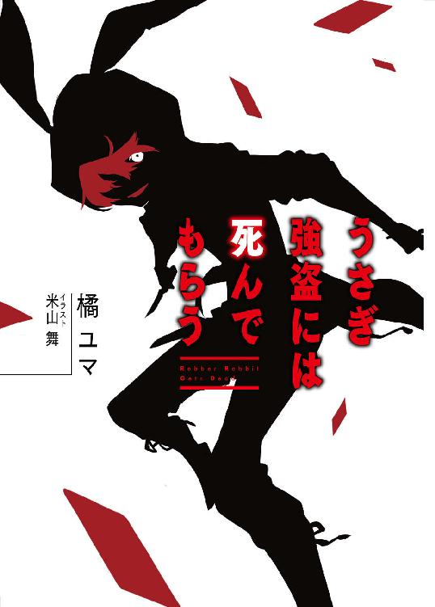
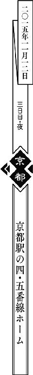
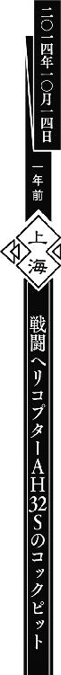

| うさぎ強盗には死んでもらう (角川スニーカー文庫) | |
| 橘ユマ | |
| KADOKAWA / 角川書店 (2016) | |

うさぎ強盗には死んでもらう
橘 ユマ

角川スニーカー文庫
本作品の全部または一部を無断で複製、転載、配信、送信したり、ホームページ上に転載したりすることを禁止します。また、本作品の内容を無断で改変、改ざん等を行うことも禁止します。
本作品購入時にご承諾いただいた規約により、有償・無償にかかわらず本作品を第三者に譲渡することはできません。
本作品を示すサムネイルなどのイメージ画像は、再ダウンロード時に予告なく変更される場合があります。
本作品の内容は、底本発行時の取材・執筆内容に基づきます。
本作品は縦書きでレイアウトされています。
また、ご覧になるリーディングシステムにより、表示の差が認められることがあります。
１
「あ、日名子姉さん、スマホ忘れてますよ」
充電器からスマートフォンを引き抜きながら、天野樹里が言った。
彼女はスマホを胸の中に抱えると、リビングの椅子の上に足を乗せ、猫のように身を丸くした。大きな目でじっと画面を覗きながら、ふわふわと柔らかそうな髪を所在なさそうに弄っていた。
「充電器さしたまま家出ちゃったんですねー。どうします？ 届けに行きます？」
アーミーナイフのドライバーで鳩時計を分解していた黒崎雅也は、作業の手を止める。黒いスラックスに巻いたシザーバッグにナイフをしまい、折り返して捲ったシャツの袖を整えた。
「......届けに行く義理があるか？」
「そりゃもちろん、この部屋に厄介になってる身ですから！」
「......まあ、それはそうだけど。でも別に、頼まれたわけじゃないし」
「雅也の兄さんだって、別に頼まれてその時計修理しているわけじゃないでしょう？」
雅也は首筋を軽く搔いた。壊れた鳩時計の修理を試みたのは、盗みを働いたことへの、ちょっとした罪滅ぼしのつもりだった。
数分前、樹里が冷凍庫からアイスクリームを勝手に出して食べていたのを見た。つい羨ましくなり、一番安っぽいアイスバーを自分も一つ口にすると、樹里が「あ、兄さん。それ、そこそこ値の張る銘柄ですよ、六百円しますよ。日名子姉さんブチ切れるやつですよ」と抜かしてきた。雅也はいたたまれない顔つきで二、三口かじったあと、残りを樹里に手渡したのだ。
「スマホを届けてあげれば、日名子姉さんも兄さんを見直しますよ。『このアイス泥棒がぁ！』なんて言いませんから！」
「......多分、その辺の事情は変わんないと思う」
「いやいや、日名子姉さんはちゃんと人の誠意を汲みとってくれる人ですよ」
「......樹里は日名子の何を知ってるというんだ......大体、届けるにしても平日のこの時間だし、多分仕事中だろ......勤め先知ってんの？」
「え？ 携帯にかけて訊きますよ？」
「......おう」
雅也は馬鹿にするわけでもなく、ただ無言で樹里を見つめ、彼女の次の言葉を待った。樹里はしばらく不思議そうに首を傾げていたが、やがて何かに気づいたように「あ！」と大きな声をあげる。第一関節まですっぽり袖で隠れた両手を口にあて、雪のように白い肌をほんの少し赤らめたあと、取り繕うように喋り始めた。
「じゃ、じゃあ、日名子姉さんの電話帳開いてみては？ 職場の番号登録してるかも。電話帳に登録されてるお店の番号に片っ端からかけて、『日名子さんはいますか？』って訊いて......」
「悪くない案だけど、ロックを外すパスコードは？」
「大丈夫です！ 化粧棚のとこで免許証発見したんで！ 誕生日打ち込んでみます！」
「......生年月日をそのままパスワードにするかな、いまどき」
樹里が免許証とスマホを交互に見ながら数字をタップし、むすっと頰を膨らませた。生年月日は外れだったらしい。雅也は椅子に腰かけると、両手を合わせて鼻に添え、うっすらと目を閉じた。
「どうしました？ 雅也の兄さん？」
「......ちょっと考え事。仮に今、日名子が帰ってきたらどうなるかなって」
「あ、確かに、携帯届けに行ったら入れ違いになっちゃうかもしれませんね」
「......樹里は自分が怒られる立場だってこと、もう少し自覚したほうがいい」
雅也は、頭の中で日名子が戻ってきた光景を思い描いた。
──家に入ると、白猫のような容姿の娘がスマホのロックを解除しようと苦戦している。見ていて気分のいい光景じゃなさそうだ。自分のパーソナルスペースを侵害され、ひどく傷つくに違いない。これに加え、外国製の鳩時計が中途半端にバラバラにされ、六百円もするアイスバーの残骸が屑籠に捨てられている。
「うん、訴えられるかもしれないね......」
「いっそ逃げ出したい気分ですか？」
「せめて鳩時計の修理だけは完結させたいな......」
「日名子姉さんのご機嫌とりに？」
「......言い方が......そもそも、時計一つ修理したところで、日名子をブチ切れさせることは変わらんよ。ただちょっと、手を出した修理を途中で投げるのが嫌なだけで......」
雅也が言い終えるよりも早く、日名子のスマホが電子音を鳴らした。樹里がビクッと肩を震わせ、スマホを取りこぼしてしまう。雅也が歩み寄り、すぐに拾い上げた。
『送信者：ネチネチ風間
件名：本日の業務の件
以前お聞きした番号で繫がらないので、メールで......』
日名子はロック画面に新着メールの一部が表示される設定にしているらしい。樹里は雅也の傍に寄り、スマホの画面を覗き込んだ。
「......日名子姉さん、職場の同僚のメアドを『ネチネチ風間』で登録してるんですね」
「......知らなくていい上にそこそこ知ってはいけない情報だな。しかし何も、電話帳登録にまで愚痴挟まんでも......」
その後しばらく、立て続けに「ネチネチ風間」からメールが届いた。
『送信者：ネチネチ風間
件名：心配しています
公共交通機関の遅延ですか？ 早く事情を説明して......』
「あれ？ 日名子姉さん遅刻してます？ 朝には家を出てたはずなのに......」
「『心配しています』という文面に静かな怒りを感じるな」
「これはあれです......ネチ間は正直、公共交通機関の遅れとか、思ってないですよね。『どうせ寝坊かなんかだろ、なじってやるから連絡寄越せ』ぐらいのことは思ってますよ！」
「それはさすがに根拠薄くないか？」
「ネチ間はあれですよ！ 人のミスを徹底的に責めるタイプですよ！ 二年くらい前のミス覚えててあげつらうタイプですよ！」
「......樹里は一体、風間の何を知っているんだ」
『送信者：ネチネチ風間
件名：売り場の鍵の件
職場の鍵を預かってますよね。皆困って......』
「はい来ました！ 心にグハッとくるアッパー来ました！ 職場の同僚たちにかこつけて責めはじめましたね！」
「連帯感に弱い日本人に効くやつだ」
「ちくせう！ ネチ間はいつだって、人の心をねっとりえぐろうと狙ってるんだ！」
「......樹里は風間の何を知ってるんだ」
『送信者：ネチネチ風間
件名：売り場準備完了しました
店長が鍵を開けました。搬入も済ませて......』
「メールの件数が多い！ 報告が細かい！」
「......ネチネチしてきた」
「小刻みにメールの通知音を鳴らすことで焦燥感を煽ってきますね！ 細やかな部分まで気遣いの行き届いた嫌味！」
「......つうか風間、こんなにメール送りつつ店長に連絡して売り場準備も整えてんのか......普通にちょっと感心する」
「風間優秀！ 一社に一人欲しい人材！ でもそのそつない優秀さが、こちらの無能を浮き彫りにして、絶望感を醸し出すのです！ おのれ風間！」
「......樹里は風間の何と戦ってるんだ」
雅也が呆れた顔をするのを見て、樹里は頰を膨らませた。
「だって、日名子姉さんに『ネチネチ風間』って名前で登録されるような奴ですよ？ 並大抵の粘度じゃあ、電話帳で愚痴られたりしませんって！」
「粘度の高い人間って、字面にするとなんかえぐいな」
「字面の話はどうでもいいんです！」
「......今日これまで、どうでもよくない話なんかしたっけか？」
「ある男の人間性の可否を巡る判断です！ どうでもいいはずがないですとも！」
「ぼかして言葉の響きだけ壮大にしたなあ......。ほとんど題目詐欺だぞそれ。まああれだ、俺らは日名子と風間の間柄を知らない。風間がどんな奴かも知らないんだ。ひょっとしたら、とても気のいい奴かもしれないだろ？」
再び椅子の上に足を乗せて座った樹里は、膝の上で腕を組み、その中に半分顔を埋めてしまった。ふてくされ、隅でいじける子どもを思わせる仕草だ。雅也は樹里の髪を軽く撫でた。
「雅也の兄さんは何でそんなに風間を庇うんですか......」
「......さあ」
──俺自身、何で顔も知らん奴を庇ってんのか分からんよ。
「......まあ、何一つとして悪いことは言ってないしなあ、風間は......」
「でも、日名子姉さんは......」
「ひょっとしたら日名子はとんでもないヒステリー女で、風間は何も悪いことしてないのにネチネチ呼ばわりされた可哀想な奴かもしれないだろ？ 風間はもちろん、樹里は日名子とも直接会ったことないんだから」
雅也は首筋を軽く搔いた。
──まあもっとも、俺も日名子に会ったことはないので、実際どうかは分からないが。
スマホが震え、電子音を奏でた。画面を見た雅也は口元を手で隠し、小刻みに肩を震わせている。その目じりが上がっているのを見て、樹里は笑いをこらえているのだと察した。
「雅也の兄さん？ 何がそんなにおかしいんです？」
「......風間はけっこう良い奴で、割と本気で心配してる。焦ってるのか、メールの形式が業務連絡のそれじゃなくなってきてんな。しかしまあ、随分勘のいい奴だよ」
「勘のいい？」
雅也はスマホを宙に投げ上げた。それはくるくると回転しながら宙を舞い、きれいな放物線を描いて樹里の両手に落ちてきた。樹里は目をパチパチさせながら、ロック画面を覗き込んだ。
『送信者：ネチネチ風間
件名：怒ってませんから連絡をください
何か事件に巻き込まれたのではと、気が気でな......』
雅也が口を覆った手を下ろし、ほころばせた口元を覗かせた。
「見ろよこのメッセージ。部屋に忍び込んだ泥棒を二人、見透かしてるみたいじゃんか」
２
「日名子姉さん、今ごろ困ってるでしょうねえ。せめてパスコードが分かればなあ......。なんとか勤め先探し出して、お届けできるかもしんないのに......」
樹里はロック画面に表示されたメッセージをぼんやりと眺め、小さくため息をついた。雅也は、テーブルに置かれていた日名子の財布を覗いている。
「パスコードはともかく、日名子の職場ぐらいは分かるさ」
「え？ 何で......？」
「うーん」
雅也は煮え切らない相槌で樹里の質問を躱すと、和室に向かってクローゼットを開き、シャツをいくつか手に取って観察した。その後しばらく部屋をうろうろ回り、床に落ちていた二つ折りのパスケースを拾い、中身を覗いた。
軽く顎に手を添え、雅也は頭の中で推理を組み立て、自分のスマホを取り出した。
「何してるんです？」
「ちょっと確かめてみよう」
雅也は設定を非通知にし、「スーツショップＢ・コックス京都駅前店 電話番号」と検索し、ヒットしたページに記載されていた電話番号をコールした。
『お電話ありがとうございます、スーツショップＢ・コックス京都駅前店、風間が承ります』
樹里が目を見開いた。雅也は喉を人差し指で軽く押さえ、老人のようにしわがれた声を出した。
「あー、うん。昨日そこで買い物したヤマダってもんなんだけど、ええっと、昨日対応してくれた店員と話できるかな？ ネクタイについて訊きたいことがあるんだ」
『どちらの店員でしょう？』
雅也はスマホの通話口を指でふさいだ。それと同時に、樹里が「どういうことですか？ 何でわかったんですか!?」と詰め寄ってきた。雅也は「どうどう」と言いながら樹里を押さえ、机上に置かれた日名子の免許証を指差した。
「樹里、それとって」
樹里が免許証を手渡すと、雅也はそれを目の高さに掲げ、日名子麻美の顔写真をじっと見つめ、それから通話口をふさいでいた指を外した。
「あー、うろ覚えなんですけど、こう、黒縁の眼鏡をしてて、泣きぼくろがあって、水色のピアスをしてて、ええっと、名前は、ひ......ひな」
『昨日出勤していた店員ですよね？ だとすれば、日名子でしょうか？ 彼女ならまだ出勤していませんが......』
樹里が声を出さずに「ビ・ン・ゴ！」と口真似をした。雅也は小さくうなずき、喉を押さえていた手を放した。
「じゃあまたかけ直すことにします。最後にひとつ、風間さん、いいですか？」
『え？ あれ？』
雅也が急に地の声に戻したせいだろう。電話越しにも風間の狼狽が伝わってくる。
「あなたは気遣いのできる人だけど、少し説教臭くなるきらいがありそうです。職場の同僚に『ネチネチしやがって』とか言われません？」
『......え？ え？ いや、言われますけど......え？ 何で？』
風間の声がさらに震える。雅也は少し困り顔をした──そうか、日名子勇者だな。言ったのか、本人に。
「日名子さんへの振る舞いを、一度見直したほうがいいですね。大丈夫、気持ちがちゃんと通じていないようですが、あなたけっこういい人そうだし」
『え？ はあ、ありがとうございます』
樹里が何か言いたげな顔をして、雅也の頰を人差し指でついた。雅也は、樹里の頭をポンポンと撫でながら、通話終了ボタンをタップした。樹里が大きな声で問い詰めてくる。
「どういうことですか！」
「ふむ、一から説明してあげよう」
雅也はいかにも偉ぶって、ありもしないカイゼル髭を引っ張るような仕草をした。腰に巻き付けたシザーバッグにスマホをしまう。
「まずは最初に与えられていた情報を整理しよう。日名子はこのマンションの住人、一人暮らし。今日の早朝、俺と樹里が忍びこんだ段階から不在だった」
「ふむふむ」
樹里は真剣な顔つきでこくこくとうなずいた。
「そして風間からのメール、ここには手がかりが多くある。まず日名子は、家電か書籍か食品か、とにかく小売店に勤めていると導き出せる。『売り場の鍵』という単語が件名にあったからな」
「ほー」
「また、『公共交通機関の遅延ですか？』と風間が訊いたところから察するに、日名子はバスか電車で通勤している。そう思って探してみると、この通り、この部屋の最寄り駅と京都駅間の定期券が見つかったよ」
「ふぇー」
雅也が革製のパスケースを掲げると、樹里は興奮した顔つきで机に身を乗り出し、パスケースをじっと見つめた。
「次に、風間からメールが来た時刻について考えてみる。確か九時半くらいだったな？ この時間から開店準備を始めているということは、開店時刻は一〇時半か一一時といったところだろう。日名子の勤め先は、京都駅にほど近く、一〇時半以降に開店する店だとわかる」
「ふぁー」
「また、売り場を開けるのに風間は店長を呼んだ。たった二つしかない大事な鍵を、店長と日名子が預かってたんだ。そうなると日名子は、信頼される立場なんだろうと推測できる。だとすれば、それなりに自社製品を揃えているかもしれないと考えた。クローゼットを探ってみると、『スーツショップＢ・コックス』のロゴが入ったブラウスやパンツがぞろぞろ出てきた」
「ふふぁー」
「京都駅付近にある『スーツショップＢ・コックス』の系列店舗は二つ。そのうち一つはスーツショップＢ・コックスからめぎモールＫＹＯＴＯ店で、この店は、土地主であるショッピングモールの開店時刻の九時半に合わせて開店する。で、もう一つはスーツショップＢ・コックス京都駅前店。こっちの開店時刻は一一時だった」
「ふぁふぁふぁふはー。すごいですよ雅也の兄さんホームズみたい！ シャーロックっぽい！ ベネディクト・カンバーバッチ！」
樹里は純真な子供のように目をキラキラと輝かせ、畏敬と羨望の入り混じった眼差しを雅也に向けた。雅也はその羨望の眼差しを淡い微笑みで受け止め、ポケットからプラスチックカードを取り出し、高々と掲げた。
「決定的な手がかりがこれだ！ 日名子名義の、スーツショップＢ・コックス京都駅前店の社員証だ！」
雅也はまるで空想上のメンコを吹き飛ばさんばかりの勢いで、プラスチックカードを机の上に叩きつけた。
「ほぉー......って......へ？」
キラキラと輝いていた樹里の目が、少し濁った。
「......え？」
「............」
雅也はそっぽを向き、白々しい仕草で短く口笛を吹いた。
「......え？」
「......うむ」
「......ええ」
「......ああ、うん」
「......雅也の兄さん、これ、いつ拾いました」
「......財布覗いたら入ってた」
「............」
樹里は突然「大人は信用ならねえ」と意味の通らない叫び声を上げ、両手のひらで力いっぱい机を叩いた。
「ちくせう！ インチキだ！」
３
樹里は椅子の上で体育座りをして、自分の両脚をギュッと抱きしめている。雅也が話しかけても、頰を膨らませてそっぽを向くだけだった。
「機嫌直せよ」雅也は樹里の頰を軽くつまみ、無理やり口角を上げさせて笑みをかたちづくった。
「ひふぉいウィンティキれしたよ！ ホンホ！」
「本当？」
「ふぉんふぉー」
「自由？」
「ふぉんぽー」
「鳩」
「ふぉっぽー」
「国木田」
「どっぽー」
まるでとりとめのない会話と、滑舌が悪い樹里の声がおかしく思え、雅也はふと吹き出してしまった。それにつられるように、樹里も笑った。雅也が手を放し、樹里の頰をそっと撫でると、彼女はくすぐったそうに顔をほころばせた。
「樹里は、こんな頭悪い会話が楽しい？」
樹里のブラウスの襟が折れているのを丁寧な手つきで直しながら、雅也が言った。樹里は両手で雅也の右手首をそっと包み、ほんのり頰を赤くして目を細め、その手の甲に頰ずりした。
「ええ、幸せですよー」
「......そう。それならきっと、こんなゴミカスみたいな茶番にも、きっと価値があるんだろうね」
雅也は樹里の顔を眺めながら、静かに思索を巡らせた。
＊
──さて、今のところ分かっている情報をまとめてみる。
まず、日名子は外出中である。俺と樹里がこの部屋の鍵を突破して侵入したのは午前七時ごろ、そろそろ四時間近くたつ。
日名子の外出先は職場ではない。日名子の不在に対する風間の慌てぶりから察するに、こうした無断欠勤はめったにあることではないようだ。おそらく、普段の日名子は真面目で責任感があり、よほどのことがない限り、無断欠勤するようなことはないのだろう。逆に言えば、よほどのことが日名子に起きたのだ。
日名子は新人スタッフやアルバイトではない。店の電話番号くらい覚えているはずだし、その気になれば電話を借りるなり公衆電話を使うなりして連絡できるはず。日名子は今、それができない状況下にあるようだ。
電話で風間に訊いたところによると、日名子は昨日出勤している。売り場の鍵を預かったのもそのときだろう。つまり昨日まで、日名子は今日ちゃんと出勤して売り場を開ける心づもりでいた。昨日の時点では予測できなかった事態に見舞われたため、出勤できなくなったわけだ。
日名子は、財布もパスケースも置いて外出している。免許証も部屋の中だ。そうなると、車や電車で遠出しているとは思えない。不測の事態──例えば、親の危篤や身内の不幸──のために出かけて帰れなくなった、というわけではなさそうだ。大体、そうした状況なら、いつでも連絡がつくようにスマホは絶対手放さない。日名子には遠出する意思はなく──夜のジョギングか何か──徒歩で済ませられる用事で出かけ、そこで「家に帰れなくなる原因」に出くわしたと考えるべきだろう。
家に戻れなくなった原因は病気だろうか？ いや、もし日名子に持病があるなら、風間は犯罪に巻き込まれた可能性よりも先にそっちを懸念したはずだ。事故だろうか？ 仮に日名子が事故に遭って、連絡不可能になるほどの重傷を負ったとする──それほどの大事故なら、四時間もたてばもうニュースサイトに上がっていてもおかしくないが──。
＊
「......なるほどな」
雅也はブラウザを閉じ、イヤホンをぐるぐる巻いてまとめ、スマホを腰に巻いたシザーバッグに放り込む。手持ち無沙汰に部屋の中を歩き回り、ベランダの傍まで来ると、手でひさしをつくり窓の外を向いた。
数分して、呼び鈴の音が響いた。樹里がビクッと肩を震わせ、不思議そうに首を傾げた。
「あれ？ 日名子姉さん帰ってきました？」
「......家主がインターフォン鳴らすかよ」
雅也はアーミーナイフを取り出すと、ドライバーをその内部に収納し、刃渡り五センチほどのナイフに切り替える。いつでも瞬時に取り出せるよう、柄を覗かせる形でシザーバッグのサイドポケットに刃を差し込んだ。
──疫病神にでも憑かれてるのか。いつだって、血なまぐさい事案に見舞われる。
──こっちは樹里とお気楽泥棒稼業できてりゃ満足だってのに。
「どうしました？ 雅也の兄さん、怖い顔して」
「何でもないよ......それより、ちょっと玄関の様子を見てくる。まあ、宅配便か何かだろうから、受け取っておいてあげよう」
「何でまた？」
「この来客をうまく処理すれば、日名子の助けになるかもしれないだろ？ まだ、アイス泥棒の罪滅ぼしもしてないしな」
雅也は、腰にすえたナイフの柄を人差し指で撫でた──このタイミング──訪問客は、「日名子が家に帰れなくなる原因」と関係のある人物。
「なるほどー。再配達頼むのって、地味に面倒ですもんね！」
樹里は無邪気に笑って手を振り、雅也を送り出す。ピロンと、日名子のスマホの通知音が鳴った。ロック画面に通知されたメッセージを見て、雅也は苦笑した。
「どうしました？ 雅也の兄さん？」
「......風間の奴、どっかから見てるんじゃないだろうな？」
『送信者：ネチネチ風間
件名：心配しています
何か事件に巻き込まれてはいないかと、気が気でなく......』
雅也は日名子のスマホを胸ポケットにしまいこんだ。椅子にかけていた上着をとって袖を通し、玄関に向けて歩き出した。
１
篠原斗真は、恋人の須崎奏の人物像を問われたなら「自己主張がおそろしく苦手な人」と答える。
例えばどの店で昼を済ますか決めたいとき、いつも奏は、自分の希望を殺し、篠原の判断に委ねようとした。一度篠原がインドカレーの店に連れて行ったときなど、料理が運ばれてきてから「辛いもの、食べられないんです」と告白し、ひたすらにナンをゆっくりと頰張り続けていた。篠原が「嫌なら嫌と言えばいいのに」とぼやくと、奏は悲しそうに目を伏せる。篠原が今回は食事代を奢ると言って、半ば押し付けるように千円札を差し出すと、奏は財布の入ったバッグを後ろ手に抱え、首を振ってそれを拒否した。
それ以来、篠原は細心の注意を払うようになった。
「量の多い店は苦手？」
「手持ちに余裕はある？」
「食後もだらだら居座れる店がいい？」
「少し遠出してもいい？」
「昨日は何を食べた？ パスタ？ じゃあ麵類は避けようか？」
奏を食事に誘うたび、篠原は何度も何度も質問を投げかけねばならず、また、奏が自分を気遣って噓をついてはいないか見抜くことも求められた。
「どこに行きたい？」と直接訊くと、奏は目をうっすらと閉じて真剣に考え込んでくれるのだが、最後には必ず「篠原さんは、何処に行きたいですか？」と訊き返されてしまう。
篠原はいつも、決して面倒くさがることなく、根気よく奏の要望を聞き出した。あらゆる条件を照らし合わせ、最後に篠原が行きたい店名を告げると、彼女はいつも「ありがとうございます」と丁寧にお礼を言った。
──自分を殺して気を遣う人だから。悪い男に捕まったら、とんでもないことになる──篠原は常々そう思っていた。
しかしだからといって、奏が悪い男どもに攫われ嬲り殺されるなんて予想だにしなかったし──奏を死に至らしめた人身売買組織をつきとめ、調査員として潜り込むような行動力が自分にあるなんて、考えもしなかった。
日名子麻美の住むマンションの向かいにある雑居ビルの屋上。真っ黒なスーツを着た瘦身の男が双眼鏡を構え、窓越しに樹里と雅也を見下ろしていた。雅也が樹里の頰を引っ張って、無理やり笑顔を作らせている光景が彼の目に映った。
二人がお互いに笑い合うと、何故か、彼もつられて笑ってしまった。ただその笑顔はどこか物寂しく曇っていた。落ちくぼんだ瞼には、疲労の色が浮かんでいる。
スーツの男のスマートフォンが震えた。上司の川浪からだ。
『メールを見た。任務を実行できないとはどういうことだ、篠原』
「ええ、ちょっとした障害がありまして」
『説明しろ』
「......日名子麻美の部屋に、若い男女二人組の人影を確認しました」
日名子の部屋に、彼女の筆跡を真似た置き手紙を残し、財布や携帯を回収し、あたかも彼女が自発的に蒸発したかのように偽装する──それが今日篠原に課せられた任務だ。簡単な仕事のはずだった。日名子の部屋に侵入者さえいなければ。
電話の向こうで、川浪が舌打ちする音が聞こえた。
『君の事前の調査報告によれば、標的......日名子麻美には、部屋を訪ねてくるほど親しい友人はいないとあったが？』
川浪が冷たい声で言った。篠原はシャツの胸元あたりをギュッとつかんで気を静め、声が裏返らないように気を配りながら口を開いた。
「......報告に、ミスはありません」
『では、彼らは？』
「おそらく、空き巣の類でしょう。彼らは日名子麻美の部屋を物色していました。......日名子麻美の財布を漁っていたのも、カードを片手に何か話しこんでいたことも確認しています」
『......間違いないな？』
「......ええ」
篠原は、「物色」の被害がアイスであることも、「カード」が社員証であったことも伏せておくことにした。
──川浪が「悪党が金品を物色し、財布からクレジットカードを抜いた」と勘違いしたとしても、それは私のせいじゃない。
──とりあえずはこれでいい。「日名子麻美の部屋で、不法侵入者が二人遊んでます」なんて事実通り報告したら、川浪は訝しげな顔をすることだろう。今、川浪に余計な不信感を持たれたくない──あの二人を、こっちの事情に巻き込みたくない。
「彼らが日名子麻美の失踪を不審に思う可能性もないでしょう」
──捨て置いていいと判断してほしいところだが。
『君の仕事は現場の調査と報告だけだ。余計な推測は口にするな』
川浪は低い声で言った。篠原は肩をすくめ、鉄柵にもたせた背をズルズルと下に滑らせ、床に座り込んだ。
＊
顧客のニーズに柔軟に対応し、条件に応じた人物を誰よりも早く見つけ出して紹介する。
それが篠原の潜り込んだ「Ｍ＆Ｄグループ」のポリシーだ。このポリシーは、表と裏、どちらの世界でも徹底して貫かれている。表では優秀な人材派遣・仲介業者として。裏側では、人身売買・臓器売買を収入源とする犯罪組織として。
篠原はひと月前、この会社に調査員として入社した。街角で老若男女問わず声をかけ、街頭アンケートを装い氏名や住所や電話番号を聞き出し、数週間かけて尾行して行動パターンや交友関係を調べ上げる。毎日その繰り返しだった。
「失踪しても騒ぐ身内のいない人間は誰か？」
「その人物が一人になるタイミングはいつか？」
「その人物の行きつけの場所で、比較的人影の少ない場所は何処か？」
会社が問いかけてくるそれらの疑問に答えを出すのが、篠原の仕事だ。実際に標的を拉致するのは調査報告を受けた別動隊で、篠原自身が手を下したことは一度もない。
篠原は真摯な態度で調査に打ち込み、そのためにひどく神経を削られていた。
篠原は調査を通して、その人物の人となりはもちろん、話し方や考え方、譲れないこだわり、大切な思い出、嫌悪の対象、果たしたい夢、苦手な相手、愛するものを知った。そして、標的のことを深く知るにつれ、その存在を肌で感じ、まるで相手が数年来の友人であるかのような錯覚に陥ることになる。篠原はいつも、相手を深く知るたびに、ある種の愛おしさを感じていた。
──ああ、私は、これからこの人を地獄に落とすんだ。
夜中、ベッドの中で、その事実が脳裏をよぎることがあった。
その度に、篠原は壁や床や自分自身を搔き毟った。爪がところどころ罅割れ、指との隙間には血の混じった木くずや砂利や皮膚がつまっていた。それでも搔くことは止められなかった。朝陽を浴びてふと気がつくと、吐瀉物と血の混じった床に顔を伏せ、頭を抱えていたこともあった。
「お前は何をやっている？ お前は誰だ？」
日名子麻美についての調査報告を終え、別動隊が彼女を拉致したとの報を受けた翌朝、篠原は鏡に向かって問いかけた。顔中に赤い線が走り、唇の皮膚が剝がれ、半熟の卵のようにドロリとした血が口元に覗いていた。
「私には、どれだけ手を汚しても、やらなきゃいけないことがあるんだ」
鏡に額をもたせかけながら、鏡の中の篠原が答えた。
＊
前髪を強くつかみながら、篠原は川浪の次の一言を聞き漏らすまいと意識を集中させていた。
──空き巣相手にムキになってくれるなよ。見逃してやってくれ。私はもうこれ以上、他人を不幸にしたくない。私は──。
『殺せ』
電話の向こうで川浪が言った。
『君に直接、そのコソ泥を殺してもらう。......いや、女の方は生かしておくか。自社製品にするとしよう』
篠原は、軽く握った拳を額に当てた。
「私は調査と報告だけをすればいい......そう言ったのは川浪さんでしょう？ 直接手を下すのは、『実動部隊』の領分です。私の仕事じゃありません」
『本来はな。だが、今回はちょっと特別だ』
「特別？」
『君は疑われている』
篠原は心臓が跳ね上がるのを感じ、咄嗟に胸に手を当てた。冷や汗を袖で拭い、息の乱れが電話越しに伝わらないように努めた。
『須崎奏』
川浪がその名前を口にした瞬間、篠原は目の前が急に真っ白になる錯覚に陥った。
「聞き覚えのある名前ですね」
『ふむ、さすがに知らないとうそぶくほど馬鹿ではないか』
「......大学時代の友人です」
『親しい間柄だったようだな』
篠原は、鉄柵に指をかけた。
──奏がＭ＆Ｄに殺されたのは二年前。データが残っているはずがない。
篠原は、抹殺した人間のデータは速やかに処分するよう教育されている。だから、奏にまつわるデータについては、とっくに破棄されていると高をくくっていた。
『社のデータを懐に隠していた社員がいてな。本社で使われなくなったデータを同業者に売りつけたり、犯罪にまつわる情報を拾って脅迫の材料に使ったり、せこい小遣い稼ぎをしていたらしい。その馬鹿はもう粛清済みだが......奴が、面白い置き土産を残していた』
「置き土産とは？」
『二年前わが社に消された須崎奏の恋人が、先月入社してきた篠原である、という情報だよ』
篠原は奥歯を強く嚙みしめる。口の中が乾くのを感じ、そっと喉を押さえた──追い詰められたその社員は、死なばもろともと、私を道連れにしたわけか。
「恋人？ 須崎さんが？ 私の？ ......ああ、色恋沙汰に敏感な友人も多かったですからね。皆小学生みたいな悪ふざけが好きで、私がちょっと女友達と食事しただけでも、冷やかしたり、『デートだ』と騒ぎ立てたり、何かにつけて二人きりになるようセッティングしようとしたり。そうですね、勝手に恋人扱いされることもありましたよ。でも実際のところ......」
川浪が、乾いた笑い声で篠原の台詞を遮った。
『君が饒舌なのは珍しいな、篠原』
「......そうでもありません」
篠原は鉄柵から手を放し、顔を少しうつむかせながら、指で眉間を軽く握った。
「恋人を殺されて復讐なんて、そんな映画みたいに陳腐な展開、あるわけないでしょう」
『言ったはずだ。判断をくだすのは、君ではない。だが私も鬼じゃない。君が信用を得るためのチャンスを用意するつもりでいた』
「......そこにタイミングよく、どう扱っても後腐れのない泥棒たちが現れた」
『やはり君は察しが良い』
「......殺人をもって忠誠を誓え、ということですか」
篠原は、「忠誠を誓う」という文句が建前にすぎないことを理解していた──殺人に手を染めリスクを負え。後戻りできない深みへと落ちてゆけ──そうした裏のメッセージを、声音や態度に匂わせることもなく、静かに汲みとっていた。
屋上に突き出した階段室のドアが開き、二人の男が入ってきた。一人は細長い顔と脱色した髪が特徴の男で、どこか実験用のハツカネズミをイメージさせる容貌をしていた。もう一人は、浅黒く彫りの深い顔にふさふさとしたひげをたくわえた男だ。動物で言えば、ツキノワグマに似ている。
襲撃と誘拐を主な業務とする部隊の連中だ。篠原も、一度会ったことがある。
「......見張りがついていたのですね。私は、相当信用が薄いようだ」
『信用されるか否かは、君の頑張り次第だよ』
──頑張り次第か。目の前の二人は、私を生かす気はなさそうだが。今日私が任務を終えたら、そこで始末するつもりだったのかもしれない。
『君は訓練を受けてはいないからね。その二人をサポートとして使いたまえ、彼らは優秀な社員だ』
「......優秀、ですか」
ハツカネズミが、眉をハの字にしながらにやにやと笑った。ツキノワグマのほうはといえば、ハツカネズミを蔑んだ目で一瞥し、小さく息をつくだけだった。
篠原は振り返り、もう一度双眼鏡越しに日名子麻美の部屋を覗いた。冷えた風が篠原をまっすぐに通り抜け、ネクタイを揺らし、背広の裾をはためかせた。
ふと、篠原の顔つきが変わった。戸惑いながらも、何かを決断した顔だ。
「承知しました。私の手で、殺してみせます」
しばらく無言が続いたあと、川浪が電話を切った。もう繫がっていないのに、篠原には、川浪の乾いた笑い声が聞こえた気がした。
＊
屋上をあとにした篠原たちは、まっすぐに日名子麻美の住むマンションに向かった。篠原は道中、逃げ出せるタイミングはないか探ってみたものの、例の二人はまるで隙を見せなかった。
篠原は日名子の部屋の前に立つと、インターフォンを鳴らした。
「......まあ、素直に出てくるはずはありませんよね」
──いっそ物音に怯えて、ベランダ伝いにでも逃げ出してくれるとありがたいが──そんなたまじゃないか。忍び込んだ先とは思えないほどくつろいでたからな、あの空き巣たち。
ハツカネズミに似た顔立ちの男が目配せし、篠原を急かした。篠原は懐をまさぐり、鍵を取り出す。フードを目深に被った猫のぬいぐるみがぶら下がっている。昨日の晩、実動部隊が日名子麻美を拉致する際に奪ったものだ。
篠原が錠を外し、ゆっくりとドアを開けた。
「......何だ、これ」
黒いジャケットを着た若い男が、靴箱に背を預ける姿勢で腰を下ろしていた。ベルトに通す形でカーフスキンのシザーバッグが巻かれている。篠原は片膝をつき、ぐったりとうなだれた男の顔を窺った。
「......死んでる」
──そんな馬鹿な。ありえない。
──殺された？ 誰か来たのか？ 私がここに来るまでに？
──一体誰が？
２
若い男は、目を半分開いたままこと切れていた。力なく天井に向けられた手の傍に、赤い取手のアーミーナイフが転がっている。鏡面仕上げのブレードが、薄暗い廊下の向こう──南に面したリビングから差し込む陽光を反射していた。
篠原に続いて部屋に入ってきたツキノワグマとハツカネズミの二人組は、揃って目を丸くした。ツキノワグマが後ろ手にドアを閉めながら、冷静な声で言った。
「どうなってる？」
「......さあ。これは、私にも......」
篠原は男の首に手を添え、体温が残っているかを確認した──あの位置ではリビングしか監視できなかった。私の目の届かない範囲に三人目の人物がいた可能性もなくはないが......。
篠原の脳裏に、樹里と雅也がじゃれ合っている光景がよぎった。
──いや、ない。あの二人の素振りからしてそれはない。私が見ていた時点から、部屋には彼とあの女の子だけ──そうだ、あの子は何処に？
──この場合どうすれば良いんだろう──川浪は空き巣の男のほうを殺せと言っていたが──。
死体の胸元の赤い染みを一瞥し、立ち上がると、膝を軽く叩いてほこりを落とした。
──考えろ。私は奴らにどんな情報を与えたか──私はどう報告すべきか──。
篠原は携帯を取り出し、川浪の番号にかけた。
「例の空き巣の片割れ......若い男のほうが殺されました」
『......何？』
「......間の悪い先客が来たようです。私たちが向かいのビルからここに来るまでの、数分の間に、誰かが」
「なんだそりゃ？ 何処の誰がこんなちっぽけな空き巣を殺すんだよ」
ハツカネズミが、へらへらと笑いながら、篠原に声をかけた。報告を邪魔された篠原は不服そうに顔をしかめ、通話口を指でふさいで向き直る。
「......一応は犯罪に手を染めている人間です。後ろ暗い事情を抱えていてもおかしくないでしょう」
「っは、ヤクザの金にでも手え出したかね」
「......わかりません、それより油断しないでくださいよ？」
「油断だあ？」
「彼を殺した人間が、まだこの部屋に潜んでいるかもしれません」
「ああ？ 俺らがそんな簡単にやられるかよ。そんなひょろっちい空き巣野郎と一緒にすんじゃねえよ。なあ？」
ハツカネズミは同意を求め、背後で静かに佇んでいるツキノワグマの顔を見上げた。ツキノワグマは背を反り返らせながらこくんとうなずき、そのまま仰向けに倒れ込む──右目と額に、柄の短い投擲ナイフが刺さっていた。
篠原は一瞬、周辺から音が抜け落ち、耳の奥がじんと震える感覚を味わった。数秒の静寂の後、ツキノワグマの後頭部がドアとぶつかり、鈍く低い音があたりに響いた。
篠原とハツカネズミは無言のまま、リビングへと続く廊下に視線を向けた。
薄暗い廊下とリビングを繫ぐドアの向こう、カーテン越しに差し込んだ陽光を背にして、フードを被った人影が立っていた。随分と小柄だ。黒いフードに縫い付けられたうさぎを思わせる長い耳の装飾が、光の中でゆらゆらと揺れている。
小柄なうさぎの右手には、磨き上げられたナイフが握られていた。その刃が鏡のように光を反射し、篠原は目を細めた。
──あの子が纏う、肌を刺すような空気。
──理屈抜きで確信できる。この男やツキノワグマは、あれが殺した。
ハツカネズミが弾かれたように跳躍し、一瞬で距離を詰めた。脇に巻いたホルダーからナイフを抜き、うさぎに向けて突き出した。
うさぎは避けることもなく、逆に一歩前に出てナイフを構えた。二つのナイフの切っ先が交わり、相手の刀身を滑るようにこすれあう。うさぎのナイフの方がわずかに長かったらしく、その刃先が、ハツカネズミのナイフの鍔へ刺さった。
両者とも譲ることなく、じりじりとナイフの持ち手に力をこめ、微かに腕を震わせていた。ナイフのクロスカウンターと同時に激しく翻ったうさぎ耳は、重力に従いだらりと下に降りていた。
奇妙なナイフの交差が、突如として終わりを迎える。
ハツカネズミがナイフを引いた。不意に流された力の動きに対応しきれなかったのか、うさぎは前のめりにバランスを崩してしまう。ハツカネズミのナイフが、うさぎの首筋めがけて弧を描く。
だがナイフは、力なくうさぎの首筋を撫でるように沿ったあと、ハツカネズミの手を滑り落ちていく。ハツカネズミがうつ伏せに倒れた。
「......っは、狡いね」
ハツカネズミはぐったりと体を横にし、力なく笑った。その胸には、刀身だけになったうさぎのナイフが刺さっていた。ハツカネズミはしばらく荒い呼吸を続け、一度空気を大きく吸い込み、その後、ピクリとも動かなくなった。
刀身が抜け落ちたナイフを握り、うさぎは顔を伏せている。篠原は、喉の奥がざらつくのを感じつつ、呆然とその光景を眺めていた。
──そうだ、報告。
はっと気を取り直し、携帯を耳に当てる。その瞬間、ナイフの刀身が飛来し、篠原の携帯を弾き飛ばした。液晶が割れブラックアウトした携帯が床を転がる。
「......二本目ですか。スペツナズ・ナイフっていうんですっけ、それ。スプリングで刀身を飛ばせる仕込みナイフ。前に映画で見たんですけど、現実で使う人は初めて見ました......」
喉を押さえ、やっとのことで口をついたのは、そんなどうでも良い台詞だった。うさぎはナイフの取手をこめかみにあて、首を傾いだ。
「......映画......恋人を殺された男が、犯罪組織に立ち向かう話？」
「......まさか、そんなありきたりな話じゃありませんよ」
「そうだっけ？」
「............」
──吞気なことを言ってられる状況じゃないが、その手の話には触れたくない──篠原は、うさぎの関心を逸らす話題を探した。
「......あの武器って、当たり前ですけど、一度刀身を飛ばしちゃうと、もうナイフとして機能しないんですよね......弾数一発の飛び道具だと捉えると、何だかちょっと、武器として心もとない気がしません？」
篠原はひきつった笑顔で言った──こんな会話をして、一体何になるんだろう？
「あー、同じこと樹里が言ってた」
「樹里？ それは、あの女の子の名前ですか？」
篠原の言葉を無視して、うさぎはパーカーのポケットをまさぐる。
篠原は奥歯を嚙みしめた──何か武器を用意している──先手をとって取り押さえるか？ まず無理だな──とにかく話せ、脳を動かせ。何か、突破口を見つけるまで──。
「......彼を殺したのは、あなたですか？」
「一人で殺したわけじゃないよ。そいつ、敵が僕一人と思ってて......樹里に後ろから襲われるなんて、考えもしなかったみたい」
篠原は足元がぐらりと揺らぐ感覚を味わった。あの女の子が、彼を殺す手助けをした？ ──どうなってる？ 私がここに来るまでに、一体、何が。
「......あなたがここに来たせいで、状況が、何もかも全部、滅茶苦茶になった」
「よく言われる」
「......あなた、何なんですか？」
「何って言われても、特に所属ないからなあ。どう身分を説明したらいいのかな......」
少年はうっすらと笑みを浮かべ、篠原の心臓を狙い、先ほどと同じ形状のナイフを向けた。
「皆は僕のこと、うさぎ強盗って呼ぶよ？」
１
かつて上海に「鈴蘭」と呼ばれた殺し屋がいた。租界時代に貿易商をしていたイギリス人の血を引く白人で、髪はほとんど白に近い金に輝き、瞳は澄んだ湖を思わせる青さをたたえていた。彼女には「梟」と呼ばれる中国人の相棒がいた。
鈴蘭と梟がどのような関係にあったか、一言ではとても言いつくせない。彼女にとって梟は、幼い彼女を拾ってくれた育ての親であり、自らを殺し屋として一流に鍛え上げた恩師であり、幾度となく背中を預けた頼れる同僚でもあった。
鈴蘭は十五のとき、初めて一人で暗殺をこなした。標的はブリティッシュ・スタイルのホテルに滞在していた海外の高官だった。彼を殺してしばらくの間、鈴蘭の目に、黒い靄のかかった高官の亡霊が映りこむことになる。亡霊の頰は腐って削げ落ち、黄色く汚れた奥歯が覗く。眼球が抜け落ちた眼窩の奥で蛆と蜈蚣が蠢いている。亡霊はいつも鈴蘭に笑いかけ、関節を不自然な方向に曲げて手招きしてくる。鈴蘭は幼い子供のように頭を抱え、首を振って拒絶した。
亡霊が姿を消すまで、鈴蘭は毎晩、梟の胸の中で赤ん坊のように丸まって眠っていた。ときには亡霊の幻にうなされ、梟の体を引っ搔いたり嚙みついたりしてしまうこともあった。そんなとき梟は、顔をしかめることさえせず、ただ静かに鈴蘭を抱きしめるのだ。
「慌てるな、鈴蘭」
梟は、温かい声で静かに言った。チェロかホルンを一瞬だけ鳴らしたような、耳に尾を引く不思議な静けさを残すトーン。何でもない一言のはずなのに、梟のこの台詞は、幾度となく鈴蘭の支えとなった。罪の意識に苛まれ断末魔の声が耳の奥から離れなくなったとき、いつもこの言葉と声のトーンが耳の奥で蘇り、ざわめきを消してくれるのだ。
鈴蘭が十七のとき、丁度その二倍の年齢を迎えた梟に、妻にしてくれと頼んだことがあった。鈴蘭は異性に恋い焦がれる心情などまるで理解できていなかったが、生涯を通じて傍にいる相手として、梟以上の適任者はいないと考えたのだ。梟は傷痕の走った大きな手のひらで、包み込むように鈴蘭の頭を撫で、首を横に振った。鈴蘭はふてくされたように頰を膨らませ、それでもしぶしぶうなずいた。
鈴蘭が十九のとき、梟は仕事のさなか殺された。梟が追っていた標的は、日本人の懸賞首──電脳カジノから大金をせしめた、わずか十二歳の少年だった。
２
鈴蘭が梟の死体を見つけたのは、上海市外灘の裏路地にある廃墟だった。
かつてはホテルのフロントロビーだった場所だが、今ではもう見る影もない。まだら模様の絨毯は濡れたほこりで黒ずみ、ワックスの剝げたテーブルは脚が一本折れていて、革張りの破れたソファからは、ぼろぼろと黄色いクッション材がこぼれ出ていた。
そのソファに、胸とこめかみを撃ち抜かれた梟の死体が座り込んでいた。すぐ傍に、うさぎ耳の飾りがついたパーカーを着た少年が佇み、ぼんやりと死体に目を落としている。
鈴蘭に気づくと、少年は目を見開いた。
「あっ、え、いや......違っ......これは、僕が殺したんじゃなくて」
少年が、恐怖で震えたらしい声で言った。鈴蘭が銃を向けると、彼は目に涙を浮かべ、両手を肩の上に掲げた。
鈴蘭は、激情を表に出さないよう努めつつ、梟の亡骸を目で指し示した。
「この人を殺したのは君？」
「違う！ 違うよ！」
「じゃあ、誰？」
「い、言えない」
「言えない？」
鈴蘭は少年に銃口を向けながら、じりじりと距離を詰めた。少年もそれに合わせて後ずさるが、すぐに壁際に追い込まれた。
「い、いや......違っ」
「分からない、じゃなくて言えない。それってどういうこと？」
「い、言えない」
鈴蘭は少年の足元めがけて発砲した。少年は身をすくませ、咄嗟に耳を両手で覆う。その必死な形相に、鈴蘭は蔑んだ視線を向けた。
──もう一押し。抑えて、抑えて、慌てるな。
鈴蘭はさらに一歩距離を詰め少年の喉元に銃を突きつけた。少年は、もう壁に背が貼りついているのに、少しでも銃口から距離をとろうとするかのように顎を上げた。
「答えなって、梟を殺したのは誰？ あんたが雇ったボディガード？ お金持ちだって話だもの、あんたは」
「......ち、違うよ」
「じゃあ、フリーランスの賞金稼ぎかしら。あんたを横取りし人質にすれば、九龍の連中は金を惜しまないでしょうね」
「......違う」
「答えてって」
「......無理だよ」
問答が続くにつれ、少しずつ、鈴蘭自身さえ気づかないうちに、声は怒気を帯びていく。
「答えろ！」
鈴蘭の恫喝が少年の体を突き抜け、骨の髄を震わせた。少年はしばし硬直したあと、あちこちに目を泳がせた。
「い、言えないよ、だって......」
その瞬間、鈴蘭の手に、鋭い痛みが走った。
拳銃が、彼女の指をすり抜け、はるか高くに舞い上がった。
少年は相変わらず怯えた表情を顔に浮かべ、小刻みに肩を震わせている。だからこそ、鈴蘭は反応が遅れた。少年が縦に脚を百八十度開いて鈴蘭の銃を蹴り上げたと気づくまでに、コンマ数秒の時間を要した。
──噓。上半身、ほとんどノーモーションだったのに。
銃は肩の上に上げた少年の手のひらにストンと落ちてきた。怯えきっていた少年の顔つきががらりと変わる。鳶色の目に光が宿り、悪戯がばれたときの子供のような、照れくさそうな笑みを浮かべた。
「だって『僕が殺した』なんて言ったら、怒るでしょ？」
少年が鈴蘭に銃口を向けると、鈴蘭は反射的に身を捻らせ、弾道から急所を逸らした。少年はその瞬間を見計らい、鈴蘭の首をつかんで力任せに押し倒した。不安定に姿勢を崩していた鈴蘭は、なす術もなく床に倒れた。
鈴蘭は袖口に仕込んだメスを取り出し、体勢を持ち直そうとする。
そして、異変に気づいた。
──起き上がれない？
見えない腕に体を押さえつけられたかのように、鈴蘭の体はびくともしなかった。彼女は仰向けに寝転んだまま、四肢のうち唯一自由に動かせる右脚をばたつかせ、少年を睨みつけた。
「駄目じゃないか、鈴蘭さん、不用意に近づいちゃ。無駄に厚着してる敵を見たら、手品の仕掛けを警戒しないと」
「黙れ」
「奇跡的な大金星だ。正直、上海最強の殺し屋鈴蘭に敵う気はしなかったんだけど」
少年は手の中でくるくると拳銃を回しながら、鈴蘭の上に馬乗りになった。鈴蘭は一瞬恨みがましい顔で少年を見やり、覚悟を決めて目を伏せた。
乾いた音が響いた。
「............」
鈴蘭はうっすらと目を開けた。スマートフォンのカメラをこちらに向けていた少年と目が合った。少年はまったく目を逸らさないままにフラッシュを焚いた。同時に「パン」と爆ぜるような音が鳴る。
「......ねえ」鈴蘭が躊躇いがちに沈黙を破った。
「あ、待って。そのポカンとした顔も撮るから」
少年がシャッターのアイコンをタップした。鈴蘭は眉間に皺を寄せ、なんとか首を捻って顔をそむけた。少年は残念そうに「意地悪だなあ」と苦笑したが、なおもフラッシュを焚きつづけた。
「......どういうことなの？」
「......ああ、これ？ シャッター音銃声で登録してるの。無駄にクオリティ高いよね」
「違う、違う。そうじゃなくて」
鈴蘭は見えない力に抗おうと、体をもぞもぞさせながら言った。
「何で撮るの？」
「え？ そりゃもちろん、写真が欲しいからだよ？」
「......何それ、噂のうさぎ強盗が、あたしの写真をどう利用するっての？」
「それはもちろん、愛でるために」
「ふざけないで」
少年はスマートフォンをパーカーのポケットにしまった。
「......ねえ、鈴蘭さん、何でうさぎ強盗が電脳カジノに喧嘩売ったのか、考えたことある？ バックに構える九龍新会に懸賞金かけられるのを考えたら、千三百万ドルでも割に合わないのにさ......」
「......それでもお金が欲しかったんでしょ？」
「......違うよ」
「他に何があるの？」
少年はうっすらと目を細め、わずかに首を傾げて微笑んだ。
「......僕はただ、あなたに会いたかっただけなんだよ、鈴蘭さん。そのために進んで賞金首になったんだ。僕は......俺はもうただの子供じゃない......俺は今、裏世界の喧騒の中心......あなたと同格のステージに上れたんだ」
少年は鈴蘭の顎に手を添え、鈴蘭の青い瞳をまっすぐ見据えた。
「あなたをここで口説きたくて、俺はうさぎ強盗になったんだ」
少年は涼しい顔でうっすら微笑んで言った。へらへらとしたその態度が、ますます強く鈴蘭の嫌悪感を誘い出す。
「じゃあなんでその人を殺したの？ あたしにとって、どんなに大切な人だと......」
少年は微笑を崩さないまま、人差し指を顎にあてしばらく悩む仕草をし、その後、パチンと軽快に指を鳴らした。
「大切な人だからだよ。梟さんを殺せば、鈴蘭さんは俺に構ってくれるでしょ？」
「......あんた、何を」
「鈴蘭さんに目を向けてもらうには、最善の手だと思うんだ。たとえ憎しみの対象であってもいいから関心を持ってもらうこと。それが恋愛の第一歩だと思うんだ」
少年は胸を張った。
鈴蘭の脳裏に、梟の死に顔がよぎった。こめかみを星形に引き裂く銃創、銃口から噴き出した可燃ガスで黒く焦げて爛れていた皮膚、伏せがちな虚ろな目、だらしなく開いた口元──。
「......殺す」
少年は目を細め、意味もなく胸の前で両手を掲げてヒラヒラ振る。猛獣をなだめるようなその仕草は、一層鈴蘭の神経を逆なでした。少年は、仰向けになった鈴蘭の傍に屈みこみ、その右手首を強く握った。
「そんなに怒んないでよ。ほら、プレゼントあげるからさ」
ほとんど反射的に、鈴蘭の手がゆっくり開いた。その隙に、少年は鈴蘭の手に冷たい感触のする金属片を握らせた。鈴蘭が手を握ると、じゃらじゃらと金属同士がこすれ合う音が鳴った。
鈴蘭は横目で、自分の右手のひらを静かに眺めた。
「......これって」
「女の子へのプレゼントの鉄板でしょ、こういうの」
「......こんなアクセサリー寄越して......ふざけてんの？」
「まさか、大真面目だよ？」
少年は立ち上がり、パーカーのポケットに手を突っ込んだ。片脚を軸にくるりと向き直ると、錆びついた回転ドアへと歩き出す。
「悪いね、今日はあんまり長居できそうもないんだ。ほら、大ダメージ負ってるし」
「......無傷のくせに」
「目に見えない怪我をしてるんだよ。えっと......ほら、さっき近くで拳銃ぶっ放されたせいで、鼓膜がジンジン痛むんだ」
「......噓つきめ」
鈴蘭の抗議を無視して、少年はへらへらと笑っていた。パーカーの裾を翻らせ、出入り口近くの床に飛び散ったガラス片を器用に避けて駆け抜けていく。
「プレゼント、きっと気に入ってくれると思うよ」
鈴蘭の視界から消える直前、少年は、ほんの少し名残惜しげに手を振った。
３
「それで結局、うさぎ強盗はあんたを殺さず逃げてったの？」
煙管で灰皿を軽く叩き、煙を輪にして吐き出しながら、椿が言った。でっぷりとたるんだ太い腕が、手の動きに合わせて震える。
廃ホテルでの一件の翌日。
外灘に構えた、西洋建築を模した外観のビルの一角──椿のオフィスに、鈴蘭は足をのばしていた。椿は調教師と呼ばれる存在──依頼主と殺し屋の間をとりもつ仲介業者だ。梟や鈴蘭をはじめとする殺し屋たちは、専属契約を結ぶ形で、事実上椿が経営する会社の社員として扱われている。
鈴蘭は彼女と月に何度か顔を合わせていたが、会うたびに椿の体は以前よりぶくぶくと膨張しているように思えた。蝶の飾りがついた銀の煙管も瑪瑙の指輪もそれぞれ一級品のはずなのに、黒のドレスに包まれた巨体が与える暴力的なインパクトの陰に隠れ、輝きを減じたかのように感じる。
「とんだ番狂わせだわ。ものすごいわねえ、うさぎ強盗......梟を殺して......鈴蘭に土をつけるなんて......腕っぷしじゃあんたらの足元にも及ばないはずなんだけど。完全に不意をつかれたわね」
「......次は油断しない」
「それにしても、あんたに求愛する心境が分かんないわ。そのために梟を殺したって理屈も含めて意味不明ね。どういうメンタルしてるのかしら」
鈴蘭はジャケットのポケットに手を突っ込んでそっぽを向き、不機嫌そうに舌打ちした。
「御託は良いから、またうさぎ強盗の情報を寄越してよ」
「そりゃ無理よ」
椿は平然と言った。
鈴蘭は、相手を威圧するような顔つきで椿のデスクに歩み寄り、両手を机に叩きつけた。心底不機嫌そうな顔を椿に寄せ、目をギラリと光らせた。
「......何で？ 昨日は普通に教えてくれたのに」
「依頼主の意向で、うさぎ強盗は生け捕り限定。あんたみたいに血の気あり余ってる子をぶつけるわけにはいかないって」
「梟の仇なんだよ？ 椿だって悔しいでしょ？」
鈴蘭は、椿の呼吸を肌で感じられるほどの距離に顔を寄せてねめつけた。対する椿は怯むことなく、鈴蘭の顔に白い煙を吹きかけた。鈴蘭は慌ててのけ反り、何度も咳をする。
「仇って言葉を口にする時点で、あんたの思考はプロのそれからズレてんのよ。どんな形であれ、殺し屋は失われた命に価値を見出しちゃいけないの」
鈴蘭は奥歯を嚙みしめ、袖口で口元を覆い、椿に背を向けた。
「うさぎ強盗を追ってる、例の電脳カジノに投資してた暴力団......九龍新会だっけ......けっこう大きな組織なんでしょ？ 依頼は失敗しましたなんて言ったら、椿も殺されちゃうんじゃない？」
「それでもあんたには頼らないわ。大丈夫よ、依頼は他が引き継ぐから」
「他って誰が？」
「......俺だよ」
鈴蘭の背筋に悪寒が走った。振り向くと、長身の男がいつの間にか忍び寄り、鈴蘭の髪に触れようとしていた。鈴蘭は男の鳩尾を蹴り上げ、腹を抱えてうずくまろうとした相手の頭頂をつかみ上げ、その顔面を床へと叩きつけた。
男はうつ伏せのまましばらくピクリとも動かなかった。やがて首を曲げて顔を横に逸らし、鼻と口元から血を滴らせながらも、恍惚とした笑みを浮かべた。
「......ああ......人類の素手の威力とは思えない......ほんと、惚れ惚れする」
男は、大きなクマが浮き出た目を鈴蘭に向けた。涙の代わりに機械油で覆われたような、よどんだ光を放つ双眸──ただ見ているだけで、濡れた髪が肌に巻き付くのに似た、ぞわりとした感触が生じてくる。
「......鴉」
「......うわあ、名前の呼び方一つからして敵意を感じる。ゾクゾクするね」
鴉と呼ばれた男はぬらりと立ち上がり、鈴蘭の意識の間隙を縫うようにして歩み寄り、その手を包みこむように握ろうとした。鈴蘭は鴉の手首とベルトをつかみ、肩越しに担ぎ上げ、鴉の背中が丁度デスクの角にめり込むよう計算して投げ飛ばした。
悶絶して床を転がる鴉に目を落とし、椿は気だるげに訊いた。
「あんた鈴蘭に言い寄るたびにすっごい怪我してるけど、それ痛くないの？」
「......純粋な力は俺の憧れ......それを肌で感じてこそ......」
「ああ、今わかった。鈴蘭は変態にモテるのね」
鴉は梟の弟子の一人で、鈴蘭にとって兄弟子にあたる。「バグ・バズ」というＨＮで知られる技術屋としての顔を持ち、暗殺の手段も機械仕掛けのものを好む。
鈴蘭は、苦虫を嚙み潰したような顔を椿に向けた。
「......よりにもよってこいつが後釜なの？ だって、こいつ......」
椿がそっと手を伸ばし、脂でまるまるとした人差し指で鈴蘭の口を閉じさせた。鈴蘭は一歩下がり、不機嫌そうに口元を袖で拭った──絶対嫌だ──梟の仇──こんな奴に任せられるか。
「......鴉じゃ力不足だ。滅茶苦茶喧嘩弱いよ、こいつ」
「肉体のスペックで言えばあんたのほうが確実に上よ。でもね、実際に喧嘩したら、鴉はイカサマで勝つわ。あの子に勝てる見込みがあるとしたら、脳筋のあんたより搦め手主体のこいつでしょうよ」
鈴蘭は顔を伏せ、奥歯を強く嚙みしめる。椿はため息に紫煙を混ぜて吐き出した。
「あんたの仕事はこっち。しばらくの間、うさぎの坊やのことは忘れなさい」
椿は一枚の写真を鈴蘭に見せた。そこに写る人物を見て、鈴蘭は目を見開き、すさまじいペースで鼓動が速くなるのを感じた。
そこに写っていたのは、異様な風体をした男だった。
男は頭頂部の右半分を剃り上げ、左半分は真っ赤に染め上げた長髪を垂らしている。顔面に龍を模した刺青を施しており、龍の尾は頭皮へと伸びていた。耳たぶや鼻はもちろん、唇、頰、瞼や額、顎や眉間にいたるまで、二十を軽く超える数のピアスが肌を貫いていた。大きく開かれた口から挑発的に出された舌は、蛇のように先端が二つに枝分かれして蠢いている──いわゆるスプリットタンと呼ばれるものだ。目元と、チョーカーを巻いた首元に、それぞれ国籍不明の言葉が彫られている。鈴蘭は本能的に、それが性的に相手を貶めるスラングだと察した。
「『石蛇』って通り名で有名な男よ。二か月前、徐匯区の南端で新興の麻薬密売組織の構成員十二名が一夜のうちに惨殺された騒ぎがあったでしょ？ あれって、この男がたった一人でやったらしいのよ」
椿の言葉は、鈴蘭の頭にまるで入ってこなかった。鈴蘭の意識は、写真の男の左目にくぎ付けにされている。男の眼球の白目には、三日月形の金属片が埋め込まれていた。
「気色悪い趣味してるわよねえ。目の結膜にピアスを埋め込んでるんだって。ジュエルアイっていうそうよ。正直、見てるこっちが背筋ぞわぞわしてしょうがないわ」
鈴蘭は無言で写真をかすめ取り、ポケットにしまいこんだ。
「......分かったよ、しばらくは、この男を追いかけるのに専念する」
「あら？ 急に素直になったわね？」
「......別に良いでしょ」
「本当に、この依頼に専念するって誓うのよね？」
「......うん、約束する」
ぶっきらぼうに言って、鈴蘭は踵を返し、まっすぐにオフィスのドアへと歩き出した。
「鈴蘭」
椿が呼び止めた。鈴蘭が振り向くと、椿が躊躇いがちに目を伏せ、何か言いたそうにしているのが目に留まった。
「うさぎ強盗とは質が違うけど......石蛇も危険な男よ。発見したら距離を取ったうえで、指示を仰ぐこと。夜鷹と牡丹をサポートに回してあげるから。......絶対に一人で相手しようとしないこと」
「分かったよ。約束するって」
「見失いそうになっても深追いしないようにね」
「分かってるって、何なの？ 今日はちょっとしつこくない？」
「言質を取っときたいのよ。あんたは昔から、自分で言ったことだけはちゃんと守る子だったからね」
椿は少しさびしげな目をして言った。
「あんたが死んだら、あたしにとって大切なものが一つ、なかったことになる。失うんじゃないわ。なかったことになるの。あたしたちは仕事柄、死者を大切に想う権利を持てないから」
──死を重く考えないこと。死者のことを忘れること。この稼業の絶対的なルール。そうじゃなきゃ、やってられない。
「............」
「忘れないでよ、鈴蘭。あんたを娘のように思ってるのは、梟だけじゃないんだから」
鈴蘭は、胸の奥がトクンと鳴ったような錯覚に陥り、それを誤魔化すように首を振った。首元までたらした薄い金色の髪がゆらゆらと揺れていた。
「......行ってくる」
鈴蘭は椿に背を向け、出入り口へとまっすぐに歩き出す。いつの間にか背負い投げのダメージから回復していた鴉が、抜き足で歩み寄るが、鈴蘭は振り返ることさえせず、気配を頼りに鴉の鳩尾に肘うちを食らわせた。
＊
鈴蘭がオフィスを去ったあと、床にうずくまっていた鴉が、腹を押さえながら寝返りをうった。
「......ああ、痛い。いい力だよなあ、本当。......ほしいなあ、ほしいなあ......薬物でも何でもいいから、脳みそ弄って俺専用の駒にできないかな......」
椿は煙管の雁首で灰皿を叩き、灰を落とした。
「......随分とご執心だけど、仮にあたしが『鈴蘭を殺せ』って言ったら、どうする？」
鴉はきょとんと丸くした目で椿を見つめた。
「殺すさ。調教師の命令なら当たり前だろ？」
その声音には一切の迷いもなかった。椿は不敵な笑みを浮かべて首をすくめ、ぶよぶよと白い脂肪のかたまりの中に顎を埋める。
「ええ、ええ。正解よ。だからもう、鈴蘭の恋人になるのは諦めないとね」
「あ？ 話が見えねえよ」
「猟犬は調教師の命令とあらば番だろうと咬み殺す。あんたの答えは殺し屋として模範的よ......だからこそあんたは、鈴蘭と相いれない」
オフィスの窓から覗く、灰色の夕闇が降りた空に、椿は弱ったような視線を向けた。
「梟の存在は、生涯を通じてあの子から消えない。あの子は猟犬になれない。結局は親犬のことが一番大事で、調教師の命令を無視してでも、親犬の死体の傍を離れない......そういう子よ」
椿はほんの少し上向きになって、輪になった煙を吐き出した。
「うさぎの坊やの心境はわからないわ。でも、梟を殺したと告げた時点で、あの子の恋路が神様に祝福されることは、絶対にないでしょうね」
＊
その日の夜、鈴蘭は外灘の川岸に沿ったショッピング街を歩いていた。第二次世界大戦終結以前、共同租界としてイギリスの統治下にあったこの地区は、当時の外観をそのままに改装しただけの建造物も多く、中国の他の都市とは景観が大きく異なる。石畳の歩道を踏みしめ、ガス灯を模したイルミネーションを通り過ぎるたび、まるでロンドンの古い街並みに迷いこんだかのような幻想に捕らわれる。
黒くきらめくイブニング・ドレスをショーウィンドウ越しに眺めていると、背後から声をかけられた。振り返り、鈴蘭は心底嫌そうに顔をしかめた。
うさぎ強盗の少年が、笑顔でこちらに手を振っていた。
「何の用？」
尋ねながら鈴蘭は、素早く周囲に目を走らせた──人通りは、それなりだ。人ごみに紛れ込めるほど多くはなく、人目につかずに少年を仕留められるほど少なくはない。
「プレゼント、気に入ってくれた？」
鈴蘭はポケットに手を突っ込み、中にある金属片に触れた。昨日廃ホテルでうさぎ強盗に握らされたプレゼント──銀製のアクセサリーだ。
「ええ、とても気に入ったわ」
「やっぱりね、そろそろ鈴蘭さんのところにも依頼が回ってくる頃だと思ってたよ。彼を用意しておいて正解だった。ねえ、これからちょっとデートしない？」
「それが取引の条件なら、喜んで」
鈴蘭は目を細めた。
──今、私怨でうさぎを追うことはできない。それは椿との約束を破ることになる──でも、逃がしたくない。
鈴蘭はポケットの中身を握りしめ、うさぎ強盗の少年に向けて伸ばした。手を開くと、鈴蘭の指から数々の金属片がこぼれ出した。棒状のもの、球状のもの、輪っかのもの──二十を軽く超える数のピアスが、ショーウィンドウの光を映して星屑のようにきらめきながら、石畳へと吸い込まれていく。その全てに、黒ずんだ血や引きちぎられた肉の破片、乾いて縮れた皮膚の残骸がこびりついていた。
──この誘いを受けるのは、石蛇の行方を追う任務遂行の範囲内──。
「あんたのプレゼントのおかげで、あたしは、大切な人に噓をつかないですんだ」
少年の目をまっすぐ見据え、覚悟を決めた顔つきで、鈴蘭が笑った。最後に手のひらを離れた金属片──眼球の皮膜のついた三日月が、石畳の上で跳ねた。
「お役に立てて光栄です」
少年が笑った。
１
須崎奏は、いわゆる濫読家だった。
流行りの文芸書や女性エッセイを手に取ることもあれば、歴史書や図鑑に手を伸ばすこともある。ワクワクした顔でライトノベルを食い入るように読むかと思えば、穏やかに微笑んで児童書をパラパラめくっていることもあった。美しく丁寧な装丁のムックを衝動買いすることも多く、時間のある週末に、図書館で新聞にまとめて目を通してもいた。彼女は常に新しい知識との出会いを求め、活字の海に身を委ねていた。
その日、篠原は奏を連れてブックカフェにおもむいていた。奏はハードカバーの医学入門書に目を通し、篠原はその向かいで、新刊のミステリー文庫を読んでいた。
「......何でだろうなあ」
苦々しげな顔で篠原が唸った。奏が、長いまつげに包まれた目を上げた。
「どうしたのです？」
「いや、この話、犯人の動機が復讐だったんだけど......。探偵が『君の大切な人は復讐なんて望んでいないぞ』って言って説得して、お涙頂戴な展開があって、犯人が投降して......それを読んで、何だかものすごくイラついた」
「ああ、気持ちはわからなくもないです」
「でもこの台詞、何でこんなにもイラッとくるのかなあ。綺麗ごとだから？」
「うーん、そんなに単純でもないように思います......」
奏は医学入門書を閉じ、うっすらと目を閉じた。少し猫背になって、両手で本を持ち上げ、背表紙を顎にそっとつけて考え込んだ。
「あー、そんな真剣に構えなくていいよ？ そもそもこの小説、アリバイトリックに真髄があって、登場人物の内面とかはテンプレでいい加減に済ませてるから」
「いいえ、せっかくですから」
奏が首を横に振ると、栗色のふわふわと丸まった髪が揺れた。
彼女は数分の間じっと目を閉じていた。篠原は急かすことなく、無言でその顔を眺めて待った。ゆっくりと目を開けながら、奏が口を開いた。
「......分かりました。『君の大切な人は復讐なんて望んでいない』......この台詞が、何故こんなにも神経を逆なでするのか。『綺麗ごとだから』ではありません。むしろその逆です」
「逆？」
「おそろしく、汚いからです」
篠原は懐から護身用のナイフを取り出した。フェンシングの基本姿勢よろしく、ナイフを持った右手を高く掲げ、心臓を隠すように身を捻らせ、右半身をうさぎ強盗の少年に向けて突き出した。
──喧嘩で勝とうとするな。急所への一撃を避けて即死を免れるだけでいい。ほんの一秒でも長く話ができる状況を作るんだ──交渉の材料を探すことだけ考えろ。
「......日名子麻美の情報がほしくはないですか？」
「ん？」
「......あなたの素性は知りません。ですがこの部屋を訪れたということは、あなたも、彼女に何か用があるのではないですか？ いま彼女が何処にいるか、知りたくはないですか？」
「んー、まあ、用があると言えばあるね。日名子さんには悪いことをしちゃったし」
少年はナイフの峰を顎に当て、首を傾がせて眉をハの字にさせて笑った。困ったようなその顔を見て、篠原は顔を曇らせた。
──悪いことをした？ どういうことだ？
──この子は、罪悪感を覚えている？ 二人、いや、三人もの人間を平然と殺しておきながら？ 彼は日名子麻美に何をした？ どんな事情がある？ それは交渉の材料に使えるか？
頭の中で思索を巡らせ、あらゆる可能性を想定しながら、篠原は交渉の言葉を紡いでいく。
「罪滅ぼしに協力してあげましょうか？」
「ん？」
「日名子麻美はＭ＆Ｄグループという人身売買業のシンジケートに拉致されました。監禁場所は私も知っています。脱出の手引きもできるでしょう。彼女について気に病む事情があるのなら、彼女を救い出して名誉挽回してみては？」
「んー、救出作戦は悪くないけど......」
「何かご不満が？」
「お兄さん、本当は日名子さんの居場所、知らないんでしょ？」
篠原は、心中の動揺をおくびにも出さずに姿勢を正した。
「......知っていますよ、当然、簡単に口を割るわけにはいきませんがね。こちらとしてもその情報が切り札ですから」
うさぎ強盗の少年は、ひどく申し訳なさそうにかぶりを振った。
「初心者のブラフは通じないよ。お兄さんは、駆け引きの相手が悪すぎるのをわかってない」
篠原は突然、見えない腕に胸倉をつかまれたように、体を前方に引き寄せられた。決して大きな力ではなかったが、不意をつかれたこともあり、前のめりによろめいてしまう。
──何だ？
少年が音もなく飛びかかり、篠原の頭に踵落としを食らわせた。篠原はうつ伏せに叩きつけられた。床に手をつき寝返りをうったところで少年に胸を踏みつけられ、肺から空気を吐き出した。
思わず胸を押さえようとしたとき、異変に気づく。
──動かない？
まるで見えない重しに押さえつけられたように、両腕が動かせなかった。篠原は左右に目を走らせ、その後静かに息をついた。
「......何か、手品を仕掛けたようですね」
「うん。駄目だよ、敵はしっかり見張ってないと」
「......ありがたい教訓をどうも。次があれば、生かしますかね......」
少年が片膝をつき、篠原の肩の真上にナイフを突き立て、首をめがけて刃を傾がせた。首元に刃が触れ、赤い水滴が膨らみ、やがて刃に沿って滴り落ちた。
「お兄さん、ちょっと質問いい？」無邪気な声で、少年が言った。
「断れば？」
「ナイフが九十度傾いて、ギロチンコース」
「......何でもお答えいたしましょう」
「何で手招きに応じたの？」
篠原は小さく唸った。
──ツキノワグマとハツカネズミを連れ、ビルの屋上を去る直前のこと。ふと篠原が双眼鏡で日名子麻美の部屋を覗くと、雅也が篠原に向けて手招きし「つれてきてだいじょうぶ。そのふたりじゃころせない」と口を動かしていた。
「......『殺せない』というのを、反撃の準備があるという意味にとりました。ならぶつけてみるのも手だと考えたんです」
──結果だけ見れば、目論見通り、邪魔な見張りは死んだが──。
ふと少年から目を逸らすと、靴箱に背を預けた死体の、濁った色合いの瞳と目が合った。
──確かに、「殺せない」と言った通りではある──この展開は予想しなかったけれど──どういう狙いがあったのか、皆目見当もつかない。
「逃げるつもりだったんです。潜入して内部事情を探るのは、多分もう無理でしたから」
「ああ、確かに。篠原さんがそこの死体と樹里を連れて行っても、遅かれ早かれ始末されただろうね。人殺しを命じたのだって、ほとんど嫌がらせに近いと思う」
篠原は眉間に皺を寄せた。
「......やっぱり、私たちの会話を聞いていたんですね」
少年は年齢に似つかわしいどこか誇らしげな顔で、無線機にも似た黒い機器を取り出した。手のひらに収まるサイズで、長いアンテナと二つのつまみがついている。
「傍受した電波を会員制サイトにあげると、解析して音声データに直してくれるって仕組み。前にヘイルムダルムって友達にもらったんだ」
「......どちら様ですか」
「電脳カジノを襲撃して僕のアカウント情報を暴いた、中二病こじらせ気味のクラッカーだよ。すごいよ、あいつ。しらふで『世界を荒らして楽しみたい』『ボクは女子供には手を出さない』とかぐちぐち言うんだ。あの生き様は、ちょっと真似できないね」
「......話がまったく見えません」
「うん、ごめんごめん、ちょっと話が逸れちゃってた」
少年は片膝をつき、床に突き刺したナイフの取手を握りしめた。少年はその瞳に殺気を滲ませ、篠原の周囲の空気を凍りつかせた。
「川浪さんの言ってたことは本当？ お兄さんは本当に、恋人を殺された復讐者なのかな？」
「......その質問に何の意味が」
「あなたが執念深い復讐者である確信──あなたが徹底的にＭ＆Ｄに刃向かうんだって保証が要るのさ。日名子さんの救出にあたり、正直なところ内通者はほしいけど......いざというときに寝返る手駒は要らないからね。ほら、ちょっと自己アピールしてみてよ」
「............」
「あなたはどれだけ、須崎さんを愛してたの？ 須崎さんはどれだけ熱く、あなたを復讐に駆り立てる？」
篠原は、焦点の合わない目で天井を見上げた。
──私は、どれだけ奏を愛していただろうか？
篠原の頭の中で、須崎奏への思いが駆け巡った。
初めて会ったのは大学の図書館だった。検索方法が分からなくて苦労してる一年生の奏を助けたんだ。話が弾んで仲良くなって、二人で書店のバイトに応募して......。退勤後はいつも、色んな本を見て回ってたな。書店に置かれた販促用の映像につられ、映画化タイトルを見に行くたびに、「予告編で期待したほどじゃなかった」と二人で文句を言ったっけ。なのに何故か、また予告編を見ると、今度こそ面白そうだと足を運び、結局、後悔して愚痴を言いあいながらとぼとぼ帰るんだ。クリスマス前、二人揃ってチラシの残骸に囲まれながら、ラッピングの特訓をしたっけか。奏の奴、事務能力は高い癖に、手先がおそろしく不器用で、カッターで何度も指先を切っていた──。
めまぐるしく頭の中を駆け巡る無数のエピソードをかき消すように、あの日、ブックカフェで奏が言った台詞が鮮明に蘇った。うさぎ強盗の声も、薄暗い廊下の光景も、首元にあたるナイフの冷たさも、全て篠原の前から消え去り、二年前の情景が篠原の目の前に広がった。
＊
「『君の大切な人は復讐なんて望んでいない』。あれは、おそろしく汚い言葉です」
そうだ──あの日、奏はそう言った。
「復讐者に向けてあの台詞を言い放つ人は、大抵、それを言う人自身が復讐を認めたくないんです」
あの台詞は魔法の言葉だ。「復讐を止めたい」というあなたの願望を、スマートかつ迅速に叶えてくれる。
「復讐を認めたくない......復讐をやめるべきという、自己の主張を正当化したい......その願望を叶えるため、死者の発言力を借りるのです」
あなたがどれだけ死者の発言力を笠に着ても、死者はあなたに何も反論できない。死者は何も語れない。
「復讐をやめる決断......これほど大きな決断を強要するなら、当然、それに伴う重い責任を負わなければなりません。でもこの台詞を放つ人は、その責任から逃れるつもりでいるのです」
復讐を止めたが故に燻る怨念、後悔、自責の念......復讐者がその思いに押しつぶされてしまったなら？ 復讐を止められたが故に、その人が壊れてしまったなら？ それは一体誰のせいだ？ 大丈夫、間違っても「復讐を止めたあなたのせい」にはならない。魔法の言葉があなたを守り、復讐を止めた責任は全て死者に被せられる。その決断を強要したのは「大切な人」だということにしてしまおう。死者はあなたに文句を言えない。
「......篠原さんは優しい人です」
奏はあのとき、はにかむように笑っていた。
「篠原さんは、きっと、自分を正当化するために、死者を盾にすることができないから。だからきっと、この台詞が肌に合わなかったんだと思います」
──違う。
──私は、そんな綺麗な人間じゃなかった。Ｍ＆Ｄに調査報告し、何人もの人間を間接的に地獄に落とした。自分の潜入捜査のために、好き勝手に他人を利用したのだ。
──それなのに、私は身勝手な人間だから。
──散々他人を巻き込んでいて、それなのに。私は──。
＊
「私は、復讐なんて考えていません」
息も絶え絶えの様子ながら、篠原はきっぱりとした口調で言った。うさぎ強盗の少年は、心の底から不思議そうに首を傾げた。
「あれ？ 須崎さんとやらのために復讐しようってんじゃないの？」
篠原は、力なく首を横に振った。
「私は、私の意思をもってＭ＆Ｄを抹殺しようと決めたんです。奏は関係ありません」
──他に答えようもない。
──私が世界を壊す動機に、死者を巻き込みたくない。
「あなたに語れることはありません。復讐なんて重い理由、私にはなかったんです」
どこか諦観を漂わせる口調で、篠原は言った。少年は長いまつげで陰った目を細くして、篠原をじっと見据えた。
「......そう。だったら、こうだね」
うさぎ強盗の少年は、何でもないことのようにナイフを傾けていく。
ブツッ、と何かが切れる音がした。
２
樹里がリビングから廊下に出ると、ハツカネズミに似た顔立ちの男の死体に出くわした。玄関へと続く廊下の奥に目を向けると、ツキノワグマに似た顔の大柄な男がドアの傍で横たわっている。二人の死体をしばらく遠目で観察したあと、樹里は生きている二人の男に視線を移した。
うさぎ耳がついたパーカーを着た少年が、こちらに背を向けている。その傍らで仰向けに倒れている篠原は、まだこちらには気づいていない。
もう一度玄関近く、靴箱の傍に目を向けると、腰にシザーバッグを巻いた若い男の死体があった。樹里は目を細める。
──雅也の兄さん、帰ってこないと思ったら。今回は、ちょっとした冒険というわけにはいかなかったみたい。
──とりあえず、今回も、宅配便ではなかったようです。
＊
「宅配便でーす！ 木村さんはいますかー？ いませんねー？ 兄さん兄さん、呼び鈴鳴らしても出ませんよ！ 留守ですよ！ こいつは漁りたい放題だぜ！」
「......これは在宅中でも玄関開けんわ」
半年前、その日樹里と雅也が忍びこんだのは、セキュリティ会社に勤めるシステム・エンジニアの部屋だった。
まっすぐに廊下を抜け、書斎に足を踏み入れると、床はまるで絨毯をしいたかのように、Ａ４のコピー用紙で白一色に埋め尽くされていた。黒く塗られたオーク素材のデスクには、持ち主のこだわりが感じられるＰＣ機器が佇んでいる。
雅也は紙を一枚拾い上げ、そこに書き殴られた記号式を見て興味深げにうなずき、肩越しに紙を投げ捨てながらデスクにつかつか歩み寄り、小さな四角いリュックサックからノートＰＣを取り出した。
「木村さんとやら、随分面白いものと格闘してる」
投げ捨てられ、ヒラヒラと羽毛のように宙を泳いでいたＡ４用紙を、樹里は指で挟み込んでキャッチする。コピー紙を駆けめぐる記号式やプログラミング言語──「％」や「＆」や「＄」と英語が交じりあった不思議な単語や、意味の分からない数字の羅列──を前にして、樹里は、苦いものでも吐き出すかのように舌を出した。
「......絶対面白くないですよ、こんなの」
雅也はキャスターつきのアームチェアに腰かけた。シザーバッグからコードを取り出し、自身のノートＰＣと木村のデスクトップＰＣを繫いでいく。樹里が不思議そうに首を傾げた。
「何するんです？」
「他人様のパソコンにログインできる魔法をしかける」
「......悪い人だ」
パスワードを解析して木村のＰＣにログインすると、雅也は木村の業務用メールアカウントの着信履歴を漁った。樹里は雅也の傍に膝をつき、両手を重ねてデスクの縁に置き、その上に顎を乗せてディスプレイをぼんやり眺めた。
「状況はつかめました？」
「大体ね。木村さんは今、『阪神ローン』にウィルスをしかけたクラッカーに挑発されてる」
「挑発？」
「そのクラッカーは、ウィルスを駆除できるソフトを送りつけてきたみたい。スパコンでもそうそう破れないような厳重なロックをかけてね」
「仕掛けたウィルスの弱点を鍵つきで送ってきたんですか？ 何のために......」
「ロックを外すパスワードを、暗号にして一緒に送ってきてるらしい。金融会社やセキュリティ会社の人たちを煽って、この暗号に挑戦させようとしてるみたいだ」
「自作の暗号を解こうとしてほしいから、こんな真似を？ 何の利益にもならないのに？」
「世の中には、誰にも解けないような難問をふっかけて遊びたい性を身に宿す奴らがいる。中にはそのためだけに犯罪に手を伸ばすほどの重症な馬鹿もいるんだ」
「......意地悪クイズを出して悩ませて、さも『難問を出した自分頭いい』とばかりにほくそ笑む、そのくせ相手がスルーしようとすると暴れてしまう構ってちゃん？」
「的確。さすがは樹里だ」
雅也が樹里の頭を撫でると、樹里は心地好さそうに目を細めた。雅也は顔をそっと近づけ、樹里と目線を合わせて言った。
「なあ、樹里。木村さんが帰ってくるまでに、この問題を解いてやろうよ。二時間で終わらせるからさ」
＊
ピアニストのように長い雅也の指は、縦横無尽にキーボード上を駆けていた。大きく開いた彼の目に記号式が入れ替わり立ち替わり映り込むのを、樹里は無言で眺めている。
──阪神ローンって関西最大手の金融会社なんだけど──そこのセキュリティを突破したクラッカーの暗号を、二時間で解く──雅也の兄さんならやりかねないから怖いなあ。
樹里は机の上で腕を組み、その中に顔を埋めた。しばらくじっとそうしていたが、十分ほどで立ち上がり、雅也に向けて横からヒラヒラと手を振った。雅也がディスプレイから目を離そうとしないのを見ると、手持ち無沙汰に部屋の中を歩き回った。本棚にはプログラミング言語のテキストとビジネス書しかなく、どれも樹里の興味を惹かなかった。いじけたように口を尖らせ、樹里はデスクの前に戻ってしゃがみこみ、また机の上に組んだ腕の中にぐりぐりと顔を埋めた。
「あたしがパソコンだったらよかったのになー。雅也の兄さんが今、何を話してるのか分かるのになー。でもあたし、中国語と英語は話せても、パソコンの言葉は分かんないもんなー」
寂しい気持ちを隠そうともしない、すねた口調で樹里は言った。わずかに顔を上げ、チラリと雅也の様子を盗み見る。雅也がまったく動ずることなく作業を続けているのを見て、樹里は不機嫌そうに口をすぼめた。
「雅也の兄さん」
「今ちょっと手と目が動かせない。用があるならそのまま話して」
雅也は画面から一ミリも目を逸らさずに言った。樹里は真剣な表情で、胸に手をあてて言った。
「あたしにも、構ってください！」
「お前は何を言っているんだ」
「何でも良いのです！ 絡んでくれるなら何でも良いのです！ 嫌がらせのごとく髪の毛ワシャワシャする感じでも良いのです！」
「口は空いてるから、お喋りならいいよ。同時にいくつものことをするのは得意だからさ」
三つのディスプレイを通して目から入る情報を高速で処理し、コンマ一秒も手を休めることなくキーボードを弾きながら雅也は言った。樹里はむすっとした顔でそっぽを向いた。
「......兄さんの難しいこと平然と言うところ、実はたまにドン引きしてます」
「......ええ、特に知りたくもない事実」
「とにかく、なんでもいいから、手でもほっぺでも握ってください！」
「いや、だから手は動かせないって」
「お肌のぬくもりがほしいのです。エロティックでない感じのスキンシップがほしいのです！」
「樹里はさっきから脊髄反射で会話してないか？ 脳を通してるとは思えないんだけど」
樹里は雅也の背後に回り、雅也の首に巻きつくように手を回した。彼の頭に自分の顎を静かに乗せた。
「妥協案！」
「......樹里が満足ならそれでいいよ」
雅也は手を動かしながら、自分が今どういう暗号をどういう手段で解いているか、できるだけ丁寧に嚙み砕いて樹里に教えた。
「あ、この記号、顔文字で見たことあります」
樹里の感想は雅也の想定をはるかに超えていい加減だ。
「さて、暗号も残りわずか......あと数字二桁だ」
ディスプレイに、最後の暗号として、一つの英文が表示されていた。
『What is the answer to the Ultimate Question of Life, the Universe, and Everything?』
「......『生命、宇宙、万物に対する普遍的な問いへの答えは何か？』」
雅也の顔が曇った。
──最後の最後で、何だこれ？ このセンテンス自体、何かの暗号なのか？
雅也の頭に顎を乗せた姿勢のまま、樹里は手を伸ばし「４」と「２」のキーを人差し指で順々に押していく。タイピングに不慣れな人に特有の、たどたどしい手つきだ。樹里がエンターキーを押すと、唐突に画面が真っ暗になった。
「あ」
樹里が声を上げた。
「............」
雅也は目を画面にくぎ付けにし、静かに震えた。
「あー......」
樹里は冷や汗をかき、おずおずと後ずさった。雅也は無言で立ち上がり、見開いた目で樹里を見つめた。樹里はまるで悪戯がばれた子供のように縮こまり、あちこちに目を泳がせた。
「これ、ダグラス・アダムスの『銀河ヒッチハイク・ガイド』に出てくる問いかけなんですよ。全宇宙で二番目に高性能なコンピュータ、ディープ・ソートが、七百五十万年かけて、『四十二』って答えを出すんです」
溢れ出す激情を抑えて肩を震わせ、無言を貫く雅也を見て、樹里は慌てた。
「そ、それでですね！ もちろん皆、そんな答えに納得しなくて......真理を追究するためにディープ・ソートは、『全宇宙で一番優れたコンピュータ』を生み出すんです......宇宙一のコンピュータって、どんなだったと思います？ びっくりしますよ？ その正体は、兄さんも......人類誰しもご存じの、アー......」
樹里がそこまで言ったとき、雅也が力強く抱きついてきた。樹里は恐怖のあまり口を震わせ、目をギュッと閉じた。
その瞬間、ミルク色の粒子が渦巻く星雲や銀粉をぶちまけたような恒星の群れが、黒い画面に浮き上がった。空間の歪みをイメージさせるオーロラのうねりが生じ、暗闇の穴が開く。闇の幕を突き破るように、青白いマッコウクジラが躍りでる。樹里にはすぐに、クラッカーが用意した『銀河ヒッチハイク・ガイド』のイメージ動画だと理解できた。
マッコウクジラが潜水するように画面下へとフェードアウトする。それと同時に、この精密で写実的な映像に場違いな、九〇年代のアーケードゲームを思わせる安っぽいフォントで〝YOU WIN!〟の文字が表示された。
「解けたよ！ 大成功だ！」
雅也が弾んだ声で言った。樹里の頰にキスを浴びせ、ポンポンと頭を撫でた。
「やっぱり樹里はすごい人だ」
樹里は緊張した顔で、ゆるゆると首を振った。
「あたし、たまたま、小説読んでただけで」
樹里の口を人差し指でそっと閉じて、雅也は屈託のない笑みを浮かべて言った。
「樹里がパソコンじゃなくてよかった」
そう言って、雅也は樹里のことを抱き寄せた。樹里は半ば雅也を押し倒す形で、革張りのアームチェアへと飛び込んだ。雅也の胸の中に顔を埋め、樹里は先ほどの雅也の台詞を心の中で反芻した。
──樹里がパソコンじゃなくてよかった。
樹里はまるで、心臓の周りの血液だけがわずかに温度をあげたかのような、じんわりとしたぬくもりを胸に感じた。
＊
樹里は廊下にしゃがみ込み、膝を抱え、彼女には珍しく憂鬱そうな顔で天井を見上げた。
──ああした小さな冒険で、満足なのに──なんでうまくいかないんでしょう。雅也の兄さんはいつだって、何か、血なまぐさいものを引き寄せてしまいます。
仰向けに倒れた篠原の手首あたりの空間に、少年がまっすぐにナイフを振り下ろした。ザクッと床を裂く音が耳に入り、樹里の意識は現在──日名子麻美のマンションへと引き戻された。
「......ケブラーでしたっけ？ 手品で使われる見えない糸......武器として使うところなんて初めて見ました」
「防刃チョッキに使われるほど頑丈な素材だもの。戦闘に使えない理由がある？」
右腕を拘束する糸を切ってもらうと、篠原は胸元をまさぐって、苦々しそうに顔をしかめた。
「かえしのついたガラス針......いつこんなものを引っかけたんですか？」
「あのツキノワグマみたいなのに投擲ナイフ投げたとき、ついでにね」
会話を続けながら、少年は、篠原の四肢を拘束する糸を順々に切って回る。篠原は起き上がり、手首を交互に軽く揉んだ。
「......私を、生かすつもりですか？」
「うん。篠原さんには覚悟があるように見えたし......」
「何を根拠に？」
「ブラフだったらすぐ分かる。僕は鋭すぎるほどに感覚が鋭くて......」
言いながら振り向くと、むすっと頰を膨らませた樹里と目が合った。少年がギョッと目を丸くする。
「......怖いなあ。無言で背後に立たないでよ」
樹里は鼻を鳴らし、少年に責めるような視線を向けた──雅也の兄さんは、半年前とは比べものにならない大きな犯罪に首を突っ込んだみたい──本当に、厄介な存在を引き寄せたものです。
少年は、樹里の視線にこめられた意図がつかめないらしく、きょとんとしている。樹里は無言で廊下を進み、篠原と少年を通り過ぎた。二人は少し不安そうな目でその姿を追っていく。樹里はシザーバッグの男の前髪をつかみ上げ、うなだれた顔を強引に上向かせた。男の死に顔が露になる。
「樹里、なんか怖い。そいつを殺したの、不味かった？」
「全然」
とげのある声音で言って、樹里は乱暴に死体を引き寄せてどかし、空いたスペースに腰を下ろした。うさぎ強盗の少年は、困ったように頭を搔き、篠原に小声で「普段はもっととっつきやすい人なんだけどね」と耳打ちした。篠原は二人の関係性を量りかね、ただただ目を丸くするだけだった。
「しかし三体かあ......これはちょっと処理に手間取るかも。あ、そうだ樹里。君の兄貴分の死体は、丁寧に弔ったほうがいい？ 君らの間柄よく知らないけど、付き合い長いんでしょ？」
うさぎ強盗はナイフの先で、玄関でうなだれている若い男の死体を指した。樹里はうんざりとした様子でかぶりを振った。
「いいですよ別に......あ、でもちょっと待ってください」
樹里は死体のシザーバッグに手を伸ばし、スマホを取り出す。
「これはもらっといたほうが良さそうです。ですが多分、これ以上調べても、価値あるものは他に何も出ないと思いますし......適当に捨てましょう」
樹里は普段の彼女より一段と低い声で言った。
「これはもう、いらない」
河原町三条交差点から少し外れ、幾つかの風俗店を通り過ぎた裏路地に、人身買売組織Ｍ＆Ｄが所有するビルがある。廃棄されたビジネスホテルを改装したもので、外観は周りにある他の雑居ビルとさほど変わらない。日名子麻美は、そのビルの一室に監禁されていた。
日名子は、背に回した腕を手錠でつながれた状態で、アームチェアに腰かけている。彼女はただ無言で、向かい合う男がタブレットを操作しているのを眺めていた。
日名子は周囲に視線を這わせた。タブレットを操作している男の他に、部屋には黒服の男が二人いる。
──息が詰まるような気分だわ。これ、そうそう帰れない流れよね。風間の嫌味でさえ恋しく感じそう。
ふとした拍子に、日名子は向かい合う男──Ｍ＆Ｄの幹部で川浪と呼ばれている──と目が合った。
「すまないね、自分が流した商品のいく末が気になったんだ。君も見物するかい？」
「いえ。興味がないので」
「最近では、輸入ビジネスも視野に入れていてね」
川浪は日名子の返答を無視して、タブレットの画面を見せてきた。動画の右上には「8 years old / Republic of the Philippines」と書かれたタイトルが表示されている。画面の中央では、幼い少女が怯えた顔つきで頭を抱え、カメラに向けて懇願するような視線を送っていた。
『服を脱がせ』
『可愛いな、でももう少し大きくないと』
『病気はなさそうだな』
『声を聞かせろ。手段は問わない』
人身売買オークションに参加している小児愛者たちの飛ばす野次が、次々と画面に表示されて流れていく。日名子は微動だにせず、画面をじっと眺めていた。
「ピカロという名のオークションサイトだよ。......薬物、銃、変態趣味の性交渉まで何でも買える。セキュリティ破りのクラックツールや、３Ｄプリンターによる銃器製造の設計図なんかも流れてくる。匿名化システムが働いていて絶対にログイン元は割り出されない。取引に使うのも足がつかない仮想通貨だ」
川浪の声にはほとんど感情が見えなかったが、ほんの少しだけ得意げな様子が滲んでいた。
「開発者にして管理人はバグ・バズというＨＮの男でね。鴉という名で殺し屋稼業も営んでいるらしい。ぜひ会ってみたいものだ」
落札価格の確定を見届けると、川浪は日名子に向き直った。
「私の管轄ではないが、あと五分で生後三か月の売買が始まる。後学のためそちらも少し見物するか？」
画面にくぎ付けになっていた日名子は、不気味なほどゆっくりとしたペースで首を動かし、川浪に顔を向けた。
「イカれてる」
表情こそ真顔のそれだったものの、声には確かな怒気がこもっていた。川浪が、乾いた笑い声をあげた。
「威勢が良いね。さて、そろそろ君の将来について話そうか。君がどういう未来を歩むのか、卸先によって様々なパターンが想定しうるが、大丈夫、五分とかからない」
一瞬間を置いたあと、冷たい声で川浪が言った。
「君の未来はどのパターンも、このサイト上に全て載ってる」
ひやりと暗いリクライニングの一室で、ＰＣのスクリーンが青白い仄かな明かりを放っている。篠原はデスクに書類を広げ、腕を組み、思案顔をしていた。
うさぎ強盗の少年が、篠原を生かす代わりに課した義務は以下の通り。
──黒崎と天野が忍び込んだ部屋の主──日名子麻美を救出すること。
──日名子の追跡ができないよう、Ｍ＆Ｄ京都支社に壊滅的な打撃を与えること。
あの天野樹里と名乗った彼女も、日名子救出のための協力は惜しまないという。そして、彼もまた、救出に手を尽くす所存であり、多額のネットマネーとピカロのアカウントを貸してくれた。人材であれ武器弾薬であれ、金に糸目はつけずに落札して良いそうだ。
彼から与えられたＩＤとパスワードを入力し、マイページに記載されているアカウントネームを見た瞬間、篠原は息を吞んだ。
──これって確か、ピカロの管理人のアカウントじゃないか？ 川浪から聞いたことがある──このサイトを立ち上げた男──鴉と呼ばれる殺し屋のＨＮだ。
「......何で彼がこんなものを......？」
──少年に訊けば教えてくれそうな気もするが。
「......いや」
──彼が何者か詮索することに意味はない。今考えるべきは、このアカウントを使って何をなすべきか。
──しかし、何を買えばいいんだろう？
──人身売買組織を壊滅させるのに役立つ買い物ってなんだ？
髪を軽く搔きながらリクライニングの背もたれに身を預けた。
「調子はどう？」
振り向くと、ブースを仕切るガラス張りのドアの向こうで、うさぎ強盗の少年が顔を覗かせ、親しげな笑みを浮かべていた。
「......日名子麻美を救い出す手立てはあります」
篠原は机に広げていた書類を少年に手渡した。そこにはフランス人の女性デザイナーの個人情報が詳細に書かれていた。彼女は今日の晩、Ｍ＆Ｄの実動部隊に拉致される予定だ。
「天野さんに変装してもらって、このデザイナーと入れ替わってもらいましょう」
「へえ、なるほど、わざと捕まって内部から......替え玉潜入作戦......ばれないかな？」
「彼女の容姿なら大丈夫ですよ。加えて調査の担当者が先日死亡しています。社内のデータを濫用して粛清されたとか。細かい確認はとれないはず......」
説明しながらＰＣを弄っていた篠原が、突然眉を顰めて黙り込み、顎に手を当てて考え込んだ。
「......何だこれ」
「どうしたの？」
「この画面、何かおかしくないですか？」
篠原が指さす先には、ピカロにおける川浪のマイページが表示されていた。他者にもオープンにされている出品・購入履歴だけでなく、ＩＰアドレスやピカロ専用のネットマネー決済履歴など、本来アカウントの持ち主以外見ることのできない情報まで表示されている。
「ピカロの匿名化システムは完璧で、管理人でさえ利用者の個人情報は抜き出せないと聞いてます......」
「開発段階で管理人専用の覗き穴を仕込んだんだ。......鴉らしい」
「殺し屋鴉と知り合いなんですか？」
うさぎ強盗の少年は不思議そうに首を傾げた。
「そっか、話してなかったっけ。鴉と鈴蘭の話......」
うさぎ強盗の少年は、一年前に上海で起きた事件のあらましを篠原に語った。電脳カジノにおけるいざこざを原因にマフィアを怒らせた少年が、殺し屋を差し向けられた話──殺し屋鈴蘭を撃退した少年が、彼女を口説こうとデートに誘ったエピソード──うさぎ強盗誘拐を依頼された殺し屋、鴉が巻き起こした事件の顚末──荒唐無稽で奇妙な物語を、篠原は適宜相槌をうちながら、真摯な面持ちで聞いていた。しかし話の終盤に至る直前、うつむき、何か考え込む仕草を見せた。
「どうしたの？」
「すいません......Ｍ＆Ｄ京都支社を破滅させる買い物......今、思いついたかもしれなくて」
「......へえ。いいよ、話して」
ほんの少し自信なさそうな、弱ったような顔つきで篠原は計画を語り始めた。一通り聞き終えると、少年は、悪巧みをする人間特有の、にんまりとした笑みを浮かべた。
「必要なのはお金と、パソコンに強い人材かな。あと腕っぷしの強い助っ人が一人ほしいね。お金は僕が用意するとして......技術屋については友達が一人いるからなんとかなる。荒事は、兄さんに頼むかなあ。あの人もあの人で、けっこう機械には強いけど」
少年はキョロキョロとあたりを見回し、声を潜めず会話できる場所を探した。ガラス戸越しに喫煙スペースが無人なのを目に留めると、スマートフォンの電話帳を開きながらそちらに向けて歩き出す。
篠原は少年の後ろ姿を眺めながらぼそりと言った。
「兄さんか......」
篠原は再びＰＣに目を向けた。バグ・バズ──殺し屋鴉のアカウント情報を再び開く。
「......上海で起きた事件の詳細、中断させずに最後まで聞けば良かったかもしれませんね」
──今考えてもしょうがないのは分かっているが、それでもやはり、このアカウントを篠原に手渡した者、彼の正体は気になってしまう。
──黒崎雅也と名乗った彼は、何故こんなものを持っていたのだろう？
日名子の監禁部屋のドアが突然開いた。肩に赤毛の女の子を担いだ黒服の男が部屋に入ってきた。男は女の子を投げ捨てるように床に転がし、日名子に向かって言った。
「......同居人だ。フランス人のデザイナーなんだと。捌かれるまで、仲よくするこった」
「捌くってのは商品として？ 物理的に？」
日名子の質問に答えることなく、男は無言で部屋を出て、外側から鍵をかけた。日名子は小さくため息をつき、床に伏した女の子へと目をやった。やや背の高い細身の女性で、端整な顔立ちをしている。
「大丈夫？」
不安そうに、日名子が声をかけた。
がばっと起き上がった女の子が、突然日名子に詰め寄って言った。
「猛烈に大丈夫です！ もう大丈夫すぎて逆に大丈夫じゃないくらいです！ これ以上大丈夫な大丈夫は存在しないと言っても過言ではありません」
「......あなた、大丈夫？」先ほどとは別種の不安を感じながら、日名子は訊いた。
「初めまして、日名子麻美さんですね!? わたくしめは天野樹里と申します！ 何を隠そう、わたくしめはあなたを助けにきたスパイでございます！ 目はカラコンで誤魔化し、髪はスプレーで染め上げ、本来誘拐されるはずだったフランス人に成り代わってきたのです。あ、肌は自前で乗り切りました。十六分の一フィンランド人の血を引くこのわたくし、真っ白お肌にはそこそこ自信がありまして、白人になりすますくらい容易いのです！」
傍目には西欧人にしか見えない女の子は、流暢な日本語ですらすらと口上を述べた。言い終えると、嚙まずに言えたのがよほど嬉しかったらしく、後ろ手に手錠で縛られた状態のまま得意げに胸を張った。
「......スパイ。あなたひょっとして、警察の潜入捜査官とか？」
「違います！」
「あ、うん、そうだよね。良かった。この国の国家機関に不安を覚えなくて済んだ」
「おお、何が起こったのか存じませんが、日名子姉さんの不安を一つ取り除けたようですな！」
樹里は満面の笑みを浮かべ、「しゃにむにばんざーい！」と不思議な掛け声とともに両手を上げた。
日名子は目を見開いた。
──は？ ──え？
──え、だって。
「手錠は？」
日名子の質問に対し、赤毛の女の子が右手の指に手錠をかけ、クルクルと回して答えた。
「ふふふ、職業柄、捕まった際の訓練は一通り受けてるのです！ 関節外すくらいお茶の子さいさいささいのさい」
「......不思議な日本語使うのね」
日名子は困惑を隠しきれない顔つきで樹里に言った。「手錠を外す術を求められる職業って何だよ」という疑問は、喉の奥でこらえた。
ふと、樹里が手錠を回す手を止めた。
「どうしたの？」
「......手錠、思ったより重量あった......遠心力強い......指めっさ痛い......」
「......何で回そうと思ったの？」
「さりげない所作がカッコいいと思って」
「......そう」
「これは噂に聞くところの憐みの視線！ つらい！ とてもつらい！」
「なんというか、あなた、安定しないのね」
日名子は職業柄、変わったお客様の応対も多く、ある種の慣れがある。定期的に奇声を発する老人、半笑いでもじもじと手遊びしながら小一時間視線を投げかけてくる中年男、空気に向かってぶつぶつ謎の話を続ける女──何故かそういう手合いに限って、店員に絡みたがるのだ。
──でも今回は、初めて遭遇するタイプだわ。素晴らしく天真爛漫な、陽性に、可哀想な子。
痛みから回復すると、女の子は仕切り直しとでもいうかのように、両手をパンと叩いて合わせ、首を傾げて微笑んだ。
「これでもかってくらい救出しますよ！ めっさ先導しますよ？ それはもうぐいぐい引っ張っていきますよ！」
「足を？」
「違います」
「そもそも救出って、なんの義理があって......？」
「私はただ潜入役を命じられただけですので」
「誰によ」
「あなたの部屋の鳩時計を修理しようと分解だけして諦めた人ですな」
「え？ 何それほとんど嫌がらせなんだけど」
「ちなみにその人は、定価六百円のアイスバーを食べました」
「なるほど、殺すわ」
本気の殺意をこめて日名子が言うと、樹里は微笑みながら、ゆるゆるとかぶりを振った。
「殺すの無理だと思いますよ。あの人、あの状況で死んでないんですから」
樹里は、それこそ映画に出てくる女スパイよろしく、物憂げに目を伏せた。しかしその口元は、ほんの少し、得意げに吊り上がっている。
日名子は眉をピクリとさせた。
──こいつ、この顔──過去を匂わせる発言がカッコいいと思ってやがる。あ、ちらちら見てる。詳細を尋ねてほし気にこっち見てる。
「......イラッ」
「え？ 何か言いました？」
「いいえまったく」
日名子はこめかみを軽く押さえた。
──ツキノワグマとハツカネズミみたいな二人組に拉致られて、よく分かんない場所に閉じ込められて、オッサンに胸糞悪い自慢話聞かされて──散々な目にあってきたのに。
──今この瞬間、一番切実に帰りたいわ。
京都大学大学院生、一ノ瀬譲は、あくびを嚙み殺しながら鴨川沿いの遊歩道をのそのそと歩いていた。情報アルゴリズム輪講のプレゼンの準備に向けて、二日ほど研究室に詰めていたため、散歩をしたい気分になったのだ。
──平穏故に胸の奥がじくじくとうずく。心臓は、刺激を欲している。
密閉型のヘッドフォンからは、洋楽のメタル・バンドのボーカルが発する、絶叫とほとんど区別のつかない歌声が流れこんでくる。音楽に身を委ねたとき特有の浮遊感を味わいながら、一ノ瀬は遠くを見据えてポーズをとる。河川敷を吹き抜ける風に、銀に染め上げた髪を踊らせていた。
一ノ瀬は完全にメタル・バンドの演奏に陶酔し、自分の世界に入り込んでいる。その足元をカルガモの親子がグワグワと鳴きながら我が物顔で通り過ぎていく。
「相変わらず可哀想な子だなぁ、あんたは」
少年らしい、少し高めの声がした。
二つの人影が一ノ瀬に歩み寄ってきた。一人は、黒いコートに身を包み、フードをすっぽり被った猫背の男で、花粉症対策のマスクで顔を覆っている。もう一人は、うさぎの耳のついた深緑のパーカーを着た少年だった。
「久しぶりだね、ヘイルムダルム」
うさぎ強盗の少年が、ＨＮで一ノ瀬を呼んだ。一ノ瀬はヘッドフォンを外して首にかけた。
「......ふ、ひさびさに仮初めの名で呼ばれた気がする」
一ノ瀬は微笑みながら遠い目をした。うさぎ強盗の少年は、一歩前に出て手を振った。
「ほらちゃんとこっちを見る。ただのＨＮでしょ。会話中に特に意味もなく黄昏れないで」
「で、今回も厄介ごとにでも巻き込んでくれるん？」
「......あ、うん、今ちょっとＭ＆Ｄってとこの京都支社と揉めてるんだ。篠原って人が主体になって組織を壊滅させるから、そのサポートに回ってほしいの」
「ああ、良くも悪くも噂の絶えないところやね。うん、これは丁度ええ。最近心がうずいてるんよ。非日常的な刺激が少なすぎてな」
「二十四歳はそういう台詞発しちゃ駄目だと思うよ？」
「ボクが病にかかるのは、ボクのせいやない。世界の頭が悪すぎるんや」
一ノ瀬は、関西特有の「ボク」のイントネーションで言う。うさぎ強盗は隣にいたフードの男に向き直り、一ノ瀬を指差して笑いかけた。
「ね、言った通りでしょ。なかなか吐けない台詞ボロボロこぼすんだ、こいつ」
フードの男が顔を上げ、少し細めた目で一ノ瀬を観察した。こちらを見透かすような冷たい視線に、一ノ瀬は一瞬身のちぢこまる思いをしたが、何とか顔に出さずに構えた。フードの男は顎に親指を添える。
「......ヘイルムダルム、聞き覚えがあるな」
ぶつぶつ呟いていたあと、軽快に指を鳴らした。
「思い出した。一年前に電脳カジノを襲撃したクラッカー......うさぎ強盗の素性が暴露された騒ぎの元凶」
「ああ、知っているのか、我が破壊の歴史を」
一ノ瀬が顔を覆い、ありもしない眼鏡を正すかのように指先を眉間に添え、ポーズを決めた。フードの男はげんなりとした顔をした。
「......こんな馬鹿の親玉みたいな奴とは知らなかったがな。半年前、阪神ローンって金融会社が襲撃されたけど、あれもお前の仕業だろ？ ウィルスソフトや例の暗号のコーディングの特徴がそっくりだった」
うさぎ強盗の少年が、同調するようにうんうんとうなずいた。
「分かる。こいつの書くコード、人間が書いたものに思えなくて気持ち悪いんだよね」
「え？ 何なん？ 関数型プログラミングの美しさの追求を否定する気？ 許さんよ？」
一ノ瀬はほんの少し声に怒気を込め、うさぎ強盗の少年を睨んだ。根が素直なのか、ある程度気に障っただけで、飾り気のない京都弁になるらしい。少年は両手のひらを一ノ瀬に向け、優しく微笑みながら首を横に振った。
フードの男が一ノ瀬に目を向ける。
「あの暗号は、俺も解いてみたんだよ」
「へえ、感想は？」
「普通クラッカーは自分のコードの癖は殺すもんなのに『相手がスルーしようとすると暴れてしまう構ってちゃん』は前面にそれを押し出してくるあたり、自己顕示欲が一味違うなあって思った」
「それ暗号の感想違うやん！ ただ喧嘩売っとるだけやんけ！」
「解ける自信はあったんだが、最後の最後で躓いた。『生命、宇宙、万物に対する普遍的な問いへの答え』が『四十二』だなんて、知らなかったからさ。俺だけじゃ解けなかったな」
一ノ瀬は、ほんの少しだけ眉根を寄せた。
──何なん？ 俺だけじゃ解けなかったて、妙に含みのあるもの言いしよって。
──まるで、他の誰かと協力して、解いたみたいな。
「誰やお前？ あっ、ひょっとしてあんたが篠原さん？」
「違うよ。篠原さんは今別行動をとってる」
そっけない口調で、フードの男が否定する。一ノ瀬はうさぎ強盗の少年を一瞥し、もう一度フードの男に目を戻した。そして「ああ」と小さく声をもらした。
「......こらまた随分悪名高いの連れてきたなあ。あれ？ お前確か、黒崎一家の親父殿怒らせて京都の街を出禁になったって聞いたけど？」
「......うさぎ強盗が小細工して、俺はもう死んだことになってるから、顔さえ見られなきゃ大丈夫」
「......前もそんなことしてたやろ、お前。悪い奴らと揉めごと起こすたび、死んだフリして誤魔化してへんか？ しかしまあ事情は大体察したわ。阪神ローンに押し付けた暗号、解いたのは木村なんとかってエンジニアって話やったけど......やっぱあれ、表向きの話やねんな。あんたが一枚嚙んでたんやね、雅也の兄さん」
若い男はさっとフードを脱いだ。顔を覆っていたマスクを下げ、ほころんだ口元を覗かせる。
「一ノ瀬は二十四だろ？ 年上じゃないか。なんで、雅也の『兄さん』なんて呼び方をするんだよ」
「ん？ なんか文句あるん？ ボクは大概、野郎に対しては『おい兄ちゃん』とか『そこのお兄さん』とか呼ぶだけやぞ」
「別に悪いことじゃないんだけどさ」
黒崎雅也が、笑って言った。
「君の呼び方が、樹里にうつってるんだ」
１
殺し屋鴉が力に執着し始めたきっかけは、本当にありふれたものだった。海外特撮のヒーローが悪党をなぎ倒していく様に、強い憧れを抱いたのだ。自己犠牲の精神や正義の心には興味を示さず、ただただヒーローが魅せるその剛腕に酔いしれていた。
奇妙な縁があって梟の弟子となり、暴力渦巻く闇の世界に足を踏み入れた後、彼は心の奥底で、かつての夢に思いを馳せた。圧倒的な暴力で雑魚どもを駆逐する、憧れのヒーローに、自身を重ねて心震わせていた。
しかしいざその世界に入った彼は、すぐに挫折することになる。彼には、喧嘩の才能がまったくなかったのだ。血反吐を吐く思いをして体を鍛えても、あらゆる武術の教本を読み漁っても、実戦では鈴蘭や梟の足元にも及ばなかった。ただそれでも、鴉が殺し屋として梟や椿を失望させたことは一度もない。むしろ、梟に最も優秀な弟子と称され、椿に厚い信頼を寄せられることになる。椿が仲介する依頼の中でも一際困難なものが鴉のもとに回されたが、それでも彼は、ほんの些細な汚点もなく、完璧に任務をこなした。
かつてナイジェリアの政府高官を暗殺した際、椿が鴉を褒めたたえたことがあった。
「あんたは自分の非力さを嘆いてるみたいだけど、卑下する必要はまったくないわ。実際、鈴蘭みたいに力任せで敵をなぎ倒すだけの脳筋より、あんたみたいな駒のほうが、圧倒的に用途は広いの。知識、技術、商売における直感......どれも一級品よ。準備を怠らない用心深さを備え、常に冷静で計算高く、咄嗟の判断にも優れている。あたしはこの世界に身を置いて長いけど、あんたほど才能に満ち溢れた男を見たことない」
しかし続く一言は、鴉の心を完膚なきまでに打ち砕いた。その台詞は彼の中で呪いとなり、彼を茨の道へと導く標になった。彼の知る中で最強のパワーファイター──鈴蘭に対するこじれた羨望を増長させ、彼を「力を掌握したい」という願望の虜にした、一言──。
椿は、あくまで褒めるつもりでこう言った。
「ここがもし『スーパーマン』の世界なら、あんたは、最高の宿敵になれたでしょうよ」
鴉は上海の旧租界の一等地、外灘の目抜き通りにある高級レストランを訪れていた。シックな黒いドアを抜け、白と黒の市松模様のタイルをしきつめたロビーに足を踏み入れる。
「ご予約のお客様でしょうか？ お名前を伺っても？」
カウンターにいた男が言った。鴉は腕を組み、その男をじっくりと観察した。
──左手の薬指に日焼けのあと。ホールスタッフでもないのに結婚指輪を外すのは、離婚したから？ いや、器用そうな男だ。離婚歴はないだろう。指輪を外すのは、これから浮気相手に会うためか。頰にひっかき傷がある、浮気相手は相当気の荒い女らしい。
鴉はコートとマフラーを店員に預けると、店の入り口を親指で指した。
「あんたの女に伝言を頼まれたのさ。裏口で『奥さんを殺してやる！』って叫んでたよ」
男は真っ青な顔で駆けだした。鴉はポケットに手を突っ込み、目だけ動かして男の姿を見届けてから、無人になったカウンターを通り過ぎた。大理石のステップを踏み越え、店の奥へと進んでいく。
シャンデリアが、吹き抜けのホールを暖かなオレンジ色に照らしていた。ドレッシーなインテリアが煩雑な印象を与えない絶妙な間隔で並べられている。真っ白なクロスにくるまれたアンティークのテーブルは、ほんの少し覗かせる脚だけで、その年季と重厚さを十分に主張していた。
鴉はウェイターが盆に載せて運んでいたグラスを一杯抜き取り、近場のテーブルで談笑していた老人へと放った。老人のタキシードが濡れる。
「おっと、これは失礼。手が滑った」
鴉はいかにも申し訳なさそうな顔つきで、老人のタキシードをハンカチでふく。温厚そうな老人は、気にしていませんと言うかのように笑いかけてくれている。鴉は、首元に手をかけたとき、老人の蝶ネクタイを外して掏った。
右手奥のテーブルに、椅子の背に三つ揃いの上着とコートをかけた黒人の男がいるのを目にし、鴉は即座に男の背後に回りこむ。
「お召し物が汚れてはいけません。お預かりいたしましょう」
鴉は、カウンターにいた店員の声を完全に真似て言った。黒人の客は、相手の顔を確認することもなく、「ああ、そうしてくれ」と手をヒラヒラさせてくる。
鴉はコートとジャケットとベストを抱えテーブルを離れる。フォーマルな紺色のベストを抜き出し、コートとジャケットをさっと丸め、手近なテーブルクロスの下に蹴りこんだ。
調味料の瓶を両手いっぱいに抱えて運んでいるウェイターとすれ違った際、鴉は彼の肩を叩いた。
「キッチンに持ってくんだろ？ 任せとけ」
ウェイターは「新入り？」と訊きながら、調味料の瓶をまとめて渡した。鴉は肯定することもなく、ただにっこりと微笑んだ。他の客に呼び止められたウェイターは、そちらに去っていく。鴉は三つある調理油の中からアルガン・オイルの瓶を選ぶと、それを手のひらにそっと注ぎ、髪を丁寧に整えた。
こうして店内を軽く一周した鴉は、ステップを降り、店の入り口にあったカウンターへと戻ってきた。例の浮気男はまだ戻っていない。
鴉がカウンターについた瞬間、二人の客が黒いドアを開けて入ってきた。一人は青い目にプラチナブロンドの髪をした若い女、もう一人は、うさぎ耳の装飾のついたパーカーを着た少年だった。
「いらっしゃいませ」
鴉が笑いかけると、金髪の女が、苦虫を嚙み潰したような顔をした。
白いシャツと黒いスラックスに身を包み、フォーマルな紺のベストを羽織り、蝶ネクタイを首に巻き、髪を油で整えた鴉は、胸に手をあてうやうやしい仕草で一礼した。
「ご予約のお客様でしょうか？ お名前を伺っても？」
＊
うさぎ強盗の少年と鈴蘭は、窓際のテーブルに向かい合うように座った。
少年は「プレゼント」と称して、あらゆる死体の画像を鈴蘭に見せていた。汚職の証拠品で政治家を脅迫した弁護士や、縄張りを無視して麻薬を勝手に捌いた若者グループのリーダーなど、様々な懸賞首の死体の在処を、うさぎ強盗は提供してきた。
「......うさぎ強盗、あんた、何でこんな真似すんの？」
「もちろん、鈴蘭さんを射止めるために。鈴蘭さんだって、服やアクセサリー貰うより、こっちのほうが嬉しいでしょ？」
「......そこはまあ、そうなんだけどさ」
「じゃあ、こいつはどうかな？ 最近イタリア系の勢力に潜入してきた殺し屋なんだけど、すごいよ？ 血の掟の最中、儀式に使う細い針で、四人もの構成員を殺したんだって」
「......実際ありがたいんだけどね。椿に死体を渡せば、あたしの評価は格段にあがるだろうし」
「相手の女性が一番喜ぶものをあらかじめ準備するのは、デートの基本だよ」
「......何かがおかしい」
言葉を濁す鈴蘭の顔を、うさぎ強盗の少年は嬉しさ満面といった様子で眺めていた。鈴蘭は口を真一文字に結んだまましばらく考え込んでいたが、やがて切り分けた鶏肉を口に運んだ。
──分かんないなあ、こいつ。電脳カジノ、ジャック・ピストルズの賞金獲得額ランキング一位。誰よりも人の心が読める男──のはずなんだけど。
鈴蘭は手の中でナイフをさっと回し、刃についたソースを落とした。切っ先を少年に向ける。
「あんたは、本当にあたしが惚れる可能性があると思ってる」
「藪から棒にどうしたの？ もちろんだよ」
「そのためには、梟を殺すのが最善だと」
「そうだよ」
「......あんたって、人の感情に疎い人？ 相手にどう思われるか、わかんない人？」
「そんなわけないじゃん。人の心理については専門家といってもいい」
「......うん、実績だけ見ればそこに疑いの余地はないんだけど」
うさぎ強盗の奇妙な態度に、鈴蘭は心中で頭を抱えていた。梟の仇として、うさぎ強盗に憎しみの感情を向けているはずだった。しかし突然向けられる善意や贈り物、こちらを戸惑わせる不思議な態度にはぐらかされ、知らない間に矛先を逸らされているのだ。
鈴蘭はギュッと目をつむり、首を横に振った。
──ペースを崩されかけてる。もっと気を張らないと。
ふと、マナーモードにしていた鈴蘭の携帯が震えた。知らないアカウント──ウェイター服を着たワタリガラスのアイコンの画像と、メッセージが表示されている──店に忍び込んでからこの画像用意したのか──あいつの芸の細かさは何なんだ。
鈴蘭はあからさまに少年から目を逸らし、無言でメッセージのやりとりを始めた。
『デートは楽しいかい？』
『何で、あたしたちがこのレストランに来るって知ってたの？』
『盗聴器』
『殺す』
『お前になら殺されてもいいさ。ただ、椿に粛清される前に殺せるかな。うさぎ強盗誘拐の依頼は俺に引き継がれてる。私怨でうさぎを追うなら、あいつ怒るぞ』
『私怨じゃない。うさぎ強盗が、石蛇の行方を知ってる。聞き出さないと』
『あ、「取引の条件なら、喜んで」って、そういうこと。今理解した』
鈴蘭の指が一瞬止まる。
──そっか。鴉はあの会話を盗聴しただけ──あのピアスを目にしてない────石蛇がうさぎ強盗に殺されたこと、知らないんだ──今、鴉を通じて石蛇の死を椿に報告したほうがいい？
迷っているうちに、鴉からメッセージが届いた。
『だから自分はうさぎを追いかける大義名分があり、椿を裏切ったことにならないと？ ほとんどこじつけの建前じゃんか』
『理由は十分あるはずだよ。あと一つ訊いていい？』
『どうぞどうぞ』
『そのウェイター服はどういうつもり？』
『答える意味がないさ。すぐわかるから』
うさぎ強盗の少年が、ふと、眉をピクリと動かした。
「ねえ鈴蘭さん、外をよく見てみなよ」
「外？」
うさぎ強盗の少年はガラス張りの壁を指差すが、鈴蘭は首を傾げることしかできない。夜も更けた時間帯、加えてきらびやかな照明に照らされた店内──。
「見ろって言われても......」
ガラスはまるで墨を薄く塗った鏡のように、鈴蘭たちの姿を映し出すだけだ。
「鈴蘭さんは耳や目の鍛え方が足りないなあ。まあいいや、ちょっと立って、一歩窓から離れてみてよ」
「え？ ああ、うん」
鈴蘭は言われるままに立ち上がり、一歩進んだ。
「んー、やっぱりもう一歩」
「いいけど、何なの？ これ」
首を傾げながら、鈴蘭は言われた通り窓から少し離れた。それを見届けると、うさぎ強盗の少年は両手ですっぽりと耳を覆った。
次の瞬間、灰色のセダンが店内に飛び込んできた。
おびただしい数のガラスの破片があたり一面にまき散らされ、朝陽に映える細氷のように、キラキラと照明を虹色に反射した。幻想的な光の粒子が降り注ぐ中、少年と鈴蘭はお互いだけを見つめている。やがて砕片が全て床に落ちると、二人はゆっくりと車に視線を移した。
「あなたのためにイルミネーションを用意したんだ」
「......うん、そういう軽口要らないから」
──そもそもあんたが用意したんじゃないだろ、これは。
──鴉の仕業か──あいつ、関係ない人間を巻き込みやがって。
セダンの後輪が枠に引っかかり、それ以上奥に進めないようだった。鈴蘭の立っている場所から目と鼻の先、わずか十センチほどの距離で、虚しくエンジンを唸らせている。
鈴蘭は、セダンのボンネットを軽くさすった。蜘蛛の巣状に罅割れたフロントガラスの奥を覗くと、運転席には誰も座っていなかった。
──遠隔操作。まるでＳＦの世界みたい。
鈴蘭は周囲に視線を巡らせた。
ほんの少しでも車と距離をとろうと逃げる客の流れと、興奮した顔で見物しようと近づく客の流れがもろにぶつかり、ホールは騒然とごった返していた。そんな中、ただ一人、バーカウンターに腕を乗せてもたれかかり、じっと静かにこちらを観察してくる男がいる。
鈴蘭と目が合うと、彼は子供のように無邪気な笑みを浮かべる。ただその無邪気さは、罅割れた唇や目の下のクマとあまりにも不釣り合いで、ただただ不気味な幼稚さを際立たせるだけだった。
＊
「......せっかくわざわざ窓際の席に誘導したってのに」
鈴蘭に微笑みかけたあと、鴉は軽く頭を搔きながら、レストランに突っ込んだ無人の車両を眺めていた。
──運転補助の制御アプリの更新を装って侵入し、ハンドルやアクセルの操作システムを乗っ取るクラックツール──自慢の新作だったんだけど。
鴉は小さくため息をついた。
「......即席でさえなければなあ。もっと破壊力のある車種を選んで潰せたのに......なにこれ？ 素敵なエスコートを演出しただけじゃん。ああ、でもあれだよな......梟の件があるから、うさぎはどの道、鈴蘭を手に入れる可能性ないんだっけ......でも、ムカつくなあ......俺だって、鈴蘭とデートできたことないのにさあ......」
鴉は、皮膚が赤くなるほどガリガリと首筋を搔き、誰に言うでもなくぶつぶつとぼやいている。
そしてある瞬間、金属に油を塗ったように光る目を、うさぎ強盗の少年に向けた。
「......あ？」
少年は、しきりに何かを気にするように耳を撫でている。
「......あは」
鴉は満足そうに口元をゆるませ、顎に手をあてた。漏れ出てくるはしゃぎ声は幼い印象を与えるのに、瞳は黒く濁り、確かな悪意が揺らいでいる。
「......見つけた......うさぎ強盗の弱点」
２
上海郊外、碧玉工業航空機事業部回転翼機開発課の工場及び研究所──二百万平方メートルに及ぶ広大な敷地は、灰色に塗られた金網のフェンスによって囲まれている。そのフェンスに寄り添うように、旧型のポンティアックが停まっていた。
車の中には三人の殺し屋が乗っていた。いずれも梟の弟子たちだ。
運転席で退屈そうにハンドルにもたれかかっているのは夜鷹という通り名で知られる男だ。ほうぼうが破れて安全ピンでとめてあるＴシャツ、銀の装飾がついたエナメルのライダースジャケット、白に近い金髪に染め上げられた髪、どう猛な番犬に似合いそうなデザインの首輪──平たく言えば、パンクファッションに身を包んでいる。
助手席に座る牡丹は、一目で夜鷹の相棒と分かる姿をしていた。一九二〇年代の妖婦女優に似せた露悪的なアイラインとアイシャドウ、首筋に彫られた蜘蛛の巣の刺青、三連のピアス、数輪の歯車を模した飾りのあしらわれたワンピース、傷んだレギンス、黒光りするロング・ブーツ──どちらがけばけばしいか、夜鷹といい勝負である。
「何て名前だっけ、そのヘリコプター？」
あくびをかみ殺すような顔をしながら、夜鷹が言った。
「......ＡＨ32Ｓ」
夜鷹と牡丹の背後から、声が響いた。
後部座席を片付けて空けた空間は、電子工学の研究室と化していた。プログラムの書かれた紙片が散乱し、二つのアルミ筐体からは「ジジジジジ」と補虫ランプに似た音が鳴り、複雑な波模様を示すオシロスコープの画面から、ほんのりと青白い光が漏れている。
そしてその研究室の中央には、前の二人とは対照的に、ウェイターと言っても通る小ぎれいな身なりの男──鴉が座り込んでいた。胡坐をかいた脚の上にノートＰＣを載せ、よどみなくキーボード上に指を躍らせていた。
「......ＡＨ32Ｓは世界初の電子操縦システムが採用された戦闘ヘリコプターだ。知ってるか？ ヘリは本来、他の航空機より操作性がすこぶる悪く、パイロットの腕が試される乗り物なんだ。離陸するだけでもとんでもない作業量を求められる。サイクリック・スティックやらコレクティブ・ピッチ・レバーやらをごちゃごちゃ動かさねえと、ローターの反作用で機体が安定しなくなるとかな。しかしＡＨ32Ｓは違う。力学的な駆動システムをごっそり電子信号に変換し、加速度の移り変わりをデータ化しシミュレートを繰り返して『機体を安定させるコツ』をコンピュータに覚えこませることに成功したのさ。離陸や飛行についちゃ専門的な技術はいらないし、着陸まで遠隔操作で可能って優れものだよ。目的地を指定すれば、誤差数メートルの範囲までオートパイロットで飛ばすこともできる」
一通りの説明を聞いて夜鷹が笑う。
「さっすが鴉の兄貴だわ。何言ってんだかさっぱりわかんねえ」
牡丹が不思議そうに首を傾けた。
「パイロットなしで動くのってそんなに偉いの？ 無人ヘリとかあるじゃん」
鴉が通ぶって、「分かってないなあ」とでも言うかのように肩をすくめる。
「実用化されてる無人ヘリってのは基本的に小型機だ。せいぜい農薬散布くらいの用途がほとんど。ラジコンの延長なんだ、あんなのは。ＡＨ32Ｓはローター径二十七メートル、全長二十五メートル、機関砲と対戦車ミサイル搭載可能の戦闘ヘリコプター。次元の違う代物だよ」
得意げに語る鴉の黒い瞳に、ディスプレイの白い光が映った。
「そしてこのヘリには、素晴らしい点があと二つある。一つは、今はまだ外国企業に特許があるはずの技術を山ほど搭載してる点。碧玉工業側は、仮にヘリを盗まれても簡単には警察に訴えられないのさ。そしてもう一つ、最後にして最大の長所は、ＧＰＳを搭載したこのヘリはネットに繫がっている......理論上、クラッキングの射程圏ということだ」
施設内にある格納庫の上扉が開き始めた。それに続き、唸るような音が鳴った。夜鷹も牡丹もヘリの構造は知らないし、音の原因も分からなかった。鴉だけが冷静に耳を澄ませ、タービンエンジンの駆動音やメインローターやテールローターの翼が空気を切る音を聞き分け、目を閉じてうなずいていた。
「......噓だろ」
「......噓でしょ」
パンク二人組は呆然とした顔で、格納庫から上昇するヘリの雄姿を見上げた。砂埃と小石の交じった風が吹き抜け、ポンティアックをわずかに汚した。どこからともなく工場内に迷い込んだ落ち葉が、ヘリが乱した気流に煽られはるか上空に巻き上げられていく。
深夜にもかかわらず、工場にはまだ多くの社員がいたらしい。作業服やスーツを着た人影が、大慌てで格納庫に駆けつけてきた。誰もが途方に暮れて立ち尽くし、そのうちの何人かは、ヘリに届くはずもないのに、空に向けて手を伸ばしていた。
「離陸を目視できた。行くぞ、もうここに用はない」
鴉は糸が切れたように寝ころんだ。目は長い髪で隠れていたが、口元はにんまりと微笑んでいる。
「......前に椿が言ってたの。殺し屋として一番腕が立つのは鈴蘭の姉御だけど、いざ勝負になったら、鴉の兄さんがイカサマで勝つって」
ぼそぼそと牡丹が言う。夜の闇に浮かび上がった黒の機体に目を奪われ、夜鷹が乾いた笑い声をあげた。
「違いねえ。ありゃ反則だ」
鴉は、二人組の会話を鼻で笑った。
「......イカサマだろうがなんだろうが、これで俺はもう喧嘩に負けない。さてと、ここからが大変だぞ。試作機でまだ兵装はしてないから、ピカロでいろいろ買いつけねえと」
鴉は寝返りをうち、仰向けの姿勢のまま脚を曲げ、運転席の背もたれを後ろから蹴った。
「夜鷹、アジトに車を回せ。ヘリにあれを積み込むぞ」
殺し屋梟は、中国広東省のとある田舎町に足を踏み入れていた。高級住宅街として設計されながら、バブルの崩壊とともに放棄されたゴースト・タウンだ。パリのシャンゼリゼ通りをモデルにデザインしただけあって華やかな街並みだが、それ故に、人の気配の希薄さが異様に目立つ。
外は、空の上で湖の底が抜けたような土砂降りだった。隙間なく降り注ぐ雨の幕で、街灯の明かりが霧の中に取り残されたようにぼんやりと薄まっている。明かりのつかない豪奢な邸宅──ただし、建設途中で放置されているハリボテばかりだ──をいくつか通り過ぎ、梟は雨の幕から逃げ込むように、手近なパブへと滑り込んだ。
パブの中は煙草の紫煙で満たされていた。店内は広く、二十を優に超えるテーブルが備えられている。その全てに何らかの模様が描かれている。それはチェス盤を模した市松模様だったり、碁盤の目だったり、あるいはシャンチーの盤面だったりした。
客たちの何人かはその模様を用いて激戦を繰り広げていたが、彼らの指し方は、梟の目から見ておそろしく下品だった。相手の駒を荒々しく弾き飛ばし、マス目から駒がはみ出そうが碁石が線からズレようがお構いなし。盤上に煙草の灰やビールを飛ばし、試合中に冷やかし合って笑い声をあげている。
梟は手元の煙草に火をつけた。
──試合の形式や道具に敬意を払う手合いじゃない。
──真剣師のたまり場か。
「お兄さんもどうです？」
酒に酔った学生風の青年が、黒いキングの駒を掲げて見せた。梟は小さく首を横に振り、ウィスキーを一杯注文した。青年は残念そうに肩をすくめ、振り返り、部屋の奥にあるテーブルを囲む人だかりへと歩み寄った。
梟はパブ全体に目を走らせたが、ギャラリーがついているのはそのテーブルだけだ。興味を持ち、人だかりに加わった。
そのテーブルにいた賭博師の顔を見て、梟は目を剝いた──年端もいかない少年だ──喪服のような黒い服に身を包み、泣きはらした後なのか、大きなクマを目の下につくっている。相手のクイーンの進路をふさいだときも、ナイトを中央に繰り出して戦局をひっくり返したときも、少年はうつむき、光のない目で盤面を眺めていた。生気の欠片もない顔つきで、機械的なリズムで駒を動かしている。
少年は強かった。ギャラリーの話を聞くと、もう二十二連勝らしい。先ほどの青年が、梟に話しかけてきた。
「ものすごい子です。十時間以上ぶっ通しで打ってるのに、まるで隙を見せません」
「そんなに？ 何故休ませない？」
「張は、少年を疲弊させたいんですよ」青年は声を潜め、耳打ちするように梟に言った。
「張とは？」
「この賭博場の胴元です。ほら、今の少年の対戦相手です」
ギャラリーから歓声とブーイングが沸き上がった。また少年が勝ったらしい。少年の対戦相手──張という名前らしい禿げ頭の男は、顔を真っ赤にして青筋を立てたが、酒を呷り、大きく口を開けて笑った。
「ようし坊主」目をギラギラさせた様子で、張は少年の両肩をつかんだ。
「次も倍賭けだ。今までの賭け金を全部賭けるんだ」
ギャラリーから歓声が上がる。梟は目を細め、観客を見渡した。楽しんで参加するものもいたが、少年が勝負を降りる空気を作らせまいと場を盛り上げるもの──サクラも何人か交じっている。
「これ、一体何倍まで続くんだ？」
学生風の男は困ったような笑みを浮かべ、喪服の少年に、憐みに近い視線を向ける。それから、張の耳に届かないようボリュームを絞って言った。
「もちろん、彼が力尽きるまで」
＊
少年はまったく力尽きなかった。
ギャラリーから二席分離れたテーブルで学生風の男と酒を飲みかわしながら、梟は言った。
「一度あの少年を帰らせて、闇討ちしたほうが早くないか？」
「そりゃ駄目ですよ。建前上、彼が賭けに負けて金を失ったことにしないと。客が賭博場に信頼を寄せられなくなる」
「あそこまで露骨だと、もう完全に信用を潰してると思うがね」
「それでも、建前ってのは大事なものです。特にこういう世界では」
「......そんなものか。ところで、今賭け額はいくらだ？」
「初めの賭け額に二の二十四乗をかけた額ですね」
「つまり？」
「約千七百万倍ですね。少年の賭け金は二百元だったので、もう三十億元を超えてます」青年は、携帯をいじりながら答えた。
「私が昨日会った変態野郎は、『男は一人当たり十万元で買える』と言ってたがな......」
「じゃあ三万人買えますね」
梟は煙草をくゆらせながら「国が作れそうだ」と呟いた。
張はあらゆる術策を尽くした。怒号や舌打ちで威嚇するとか、手が滑ったフリをして駒をずらすなんてものは序の口だ。賭博場で最も腕の立つ賭け碁師を呼び寄せ、彼に代打ちさせ、それでも歯が立たないとなると、今度は凄腕のシャンチーの棋士やチェスプレイヤーを呼び同じことをした。それでも勝負にならないと悟ると、張は、彼ら三人を相手にそれぞれの盤で三面打ちをするよう少年に強要した。
しかし少年は文句も言わず一定のリズムで打ち続け、勝利を飾った。
「力尽きるのは、張のほうが早いかもしれませんね」
「大人しく力尽きてくれると良いがな」
少年が三十二連勝を飾ったとき、張は倒れ掛かるように両手でテーブルを叩き、顔をうつむかせたまま震えた。やがて彼は、にんまりとした笑みを浮かべて顔を上げた。歯が見えるほど口角が上がっているのに、目はパッチリと開いている、奇妙な笑みだった。
「最高だよ！ 小さな小さな真剣師よ！ 君に敬意を示し、特設ステージにご案内しようじゃないか！」
梟と学生風の男は顔を見合わせた。
「特設ステージとは何だ？」
「僕も聞いたことはありませんね。今考えて作ったんじゃないですか？」
「良い予感はするか？」
「するわけないでしょう」
張は客とサクラと少年を連れ、雨の降りやまぬ街へ出ていく。梟と青年は勘定を払い、後を追った。
＊
「賭けの内容は至極単純。橋くぐりだ」
張は少年と客たちを、一九世紀のロンドン橋を模した石造りのブリッジへと連れてきた。百メートルを優に超える巨大な橋で、アーチを形作るように上方へ太くなる橋脚が十一本伸びている。
激流が頑丈な橋脚にぶちあたり、やり場のないエネルギーを飛沫に変えてまき散らし、渦を巻く。橋脚の間隔は広くない。アーチをくぐりそこなえば、橋脚に叩きつけられて即死だろう。
「喜べ。あれで渡り切れば、賭け金をさらに十倍にしてやる。もちろん勝ち分全てを賭けるよな？」
張は、古い小舟が船着き場に舫でつながれているのを指さした。梟が青年に尋ねると、開発当時、観光客向けに舟渡しの催しを用意していたと説明してくれた。
張の提案には、さすがに観客から非難の声が上がったが、サクラと張が場を盛り上げて、強引に舞台を整えた。誰かが異を唱えようとすると、どこからともなく「しらけさせるな」「空気を読め」と怒号が飛んだ。
張が、うんざりとした顔を向ける梟たちを睨みつけた。
「お前らも文句があるのか？」
学生風の男はおびえた様子で、素早く首を振る。梟はというと、蚊を払うかのような仕草で手を振って、気だるげな声で言った。
「生憎、ここで助けに入るほどお人好しでもない......ただ、そうだな」
梟は鞄の中から黒革の財布を取り出し、少年に目を向けた。
「私は、君が生き残るほうに有り金を全て賭けよう」
観客たちのざわめきが消え、雨の音だけがあたりに響いた。張も、学生風の男も、パブの客もサクラもみな、呆然と口を開けて梟を見やった。少年が何か言いかけたのを、梟は手のひらを向けて遮った。
「慌てるな、少年」
梟は財布を張に投げつけながら、少年に言った。
「私は生まれてこのかた、賭けに勝ったことがないんだ。負けたとしても、君が気に病むことじゃない」
＊
少年が舫を解き、流れに翻弄されながら漕ぎ出した。複雑に渦を巻く流れの中、舳先をうまくコントロールできていない。アーチを抜けるか橋脚にぶちあたるか、完全に運任せだ。
渦に飲まれた舟が大きく前のめりに傾き、舳先が水没しそうになる。何とか持ち直したが川の水が入りこみ、舟は半分沈んだ。その状態で舟は橋下のアーチへと吸い込まれた。
橋の上から少年を見守っていた梟たちは、一斉に反対側に乗り出した。
「通った！」
青年が歓声を上げた。
橋下をくぐるうちに、舟の状態は一層ひどくなり、舟縁近くまで浸水していた。数秒も経たないうちに舟は沈み、少年は激流に飲み込まれた。
＊
張は、観客たちを引き連れ河川敷へと降りてきた。岸に這い上がった少年がうつ伏せに倒れている。その少年の腹を、張は蹴り上げた。少年はかろうじて意識があったらしく、小さくうめいた。
「起きろ、坊主」
張は、にんまりとした笑みを少年に向けて言った。相変わらず、目をパッチリ開けつつも口角を大きく上げている、化け物じみた不気味な笑みだ。
「次の倍賭けだ。もちろん、勝ち分全てをつぎ込んで......」
張の背後に梟が音もなく近寄った。梟のナイフは張の喉笛を一閃し、腕と脚の腱を断ち、そのついでに大動脈を切り裂いたあと、心臓に突き立てられた。一連の所作を、梟は二秒とかけずに終わらせた。
「昨日私が刺し殺した変態は、『命の値段は十万元』と言っていた。私の財布の中身は二万元だったから、私は今二十万元勝ってる......つまり」
ナイフを軽く振って血を払い、梟は言った。
「あと、一人分買える」
張の取り巻きや野次馬たちが悲鳴を上げ、一斉にその場から散り散りに走り出した。学生風の青年だけは一度立ち止まって振り返り、何か声をかけようかと逡巡したようだったが、すぐに他の後を追った。
「......負けるつもりの賭けだった」
投げやりな口調で、少年が言った。梟は首を傾げた。
「命を賭けた勝負なのにか？」
「......そうだよ」
少年は自分の素性を概ね語った。
卒業旅行の際、親友と一緒に土産物屋で出された茶を飲んだ。意識を失った。自分は近場の路地裏で起きたが、親友は十日経っても戻らなかった。自分で調べて、親友が好事家の変態野郎に売られていたと突き止めた。親友はとっくに死んでいた。仇をとろうとしたら、問題の好事家が昨日のうちに、誰かに刺殺されていた。親友がいつ何処で死んだかも分からないのに、出店で買った喪服に着替え、花を片手に大泣きしながら雨の中を彷徨った。泣き疲れ、ロンドン橋を模した橋の中腹に設えられたアルコーブで寝ていたら、張に声をかけられた。
「......負けるまで、ずっと続けるつもりだったんだ」
「そのつもりなら、君はいささか強すぎたな」
「......僕を助けたつもり？」
「まさか。君のおかげで、私は、生まれて初めて賭けに勝った。ギャンブルに勝った人間は気持ちが昂り、あんな粗悪品の命でも構わないから、衝動買いをしたくなるものなんだ。君が気にすることじゃない」
梟は微笑んで顎に手をあて、少年の全身を観察した。
「ただでさえ葬式に出るような服装だったのに、濡れてさらに色が濃くなった。まるで鴉だ」
茶化すふうでもなく、淡々とした口調で梟は言う。彼は意識を失いつつある少年を腕に抱えた。少年の瞼が、ゆっくりと下りていく。
「君、名前は？ 発音から察するに、この国の人間ではないようだが？」
「......聞いて、どうするの」
「言ったろ。私は今、もう一人分買える」
意識が闇に落ちる直前、梟の腕の中で少年は答えた。
「黒崎雅也」
１
東京都渋谷区にあるＭ＆Ｄ本社ビルの会議室。
プロジェクターに投射された映像を屈強な体つきの男たちが眺めていた。人を視線で射すくめるのに十分な強面が揃っており、一目で堅気の人間ではないことが分かる。
長方形に囲われたデスクの上座には、紺のスーツを着た女性が座り込み、組んだ指に眉間を埋めている。梶という名のその女性は、Ｍ＆Ｄの頭目という地位に見合うだけの風格を備えていた。彼女の眼光はこの部屋の男たちと比較しても際立って鋭く、身に纏う空気もさらに一段静謐で重苦しい。
梶とその部下たちが視線を向けているのは、日名子麻美のマンションに備えられた監視カメラの映像だった。梶が目で合図を送ると、黒服の若い男がプロジェクターに接続されたノートＰＣを操作し、映像を停止させ、抑揚のない声で報告した。
「監視カメラが設置されていたのは、マンションのフロントとエレベーターの内部の二か所。非常口など、フロント以外の出入り口は施錠されており、こじ開けられた形跡もありません。カメラを避けて出入りすることは不可能だったと考えてよいでしょう。そして、フロントの映像を分析したところ、マンションを訪れた者のうち、素性不明の人間が三人います」
梶が指を鳴らすと、部下の男がキーを叩いた。スクリーンが一度暗転し、三人の男女をそれぞれ映した静止画像に切り替わる。画質はやや粗い。監視カメラの映像を切り取り、拡大したものだからだ。
一番左に、うさぎ耳の装飾のついたパーカーを着た少年、中央には腰にシザーバッグを巻いた男、右にはパンプスを履いた女の画像が表示された。カメラの角度が悪く、缶バッジで彩られたマリンキャップの鍔で隠され、女の顔は口元しか認められない。真っ白な肌の色と薄い色の髪から察するに、日本人ではなさそうだ。
「マンションに侵入したタイミングはバラバラですが、降りた階は三人とも同じで、日名子麻美の部屋がある階です。彼らがエレベーターを降りた四時間後、篠原を含むわが社の社員が三名、男女二人組を襲撃するため、同じ階を訪れています」
男がＰＣを操作すると、篠原がハツカネズミとツキノワグマを引き連れフロントを通り過ぎる時点を捉えた画像が表示された。
「おそらく、計六人が日名子麻美の部屋で会したはずです」
梶は背もたれに体を預け、無言のまま目で合図し、続きを促す。
「このうち、身元不明の男と実動部隊の二人は、マンションを出た姿を確認できません。一方、篠原、少年、白人の女の三人は、それぞれスーツケースやショルダーバッグを抱えてマンションを出ています」
「君はどう見る？」
「社員二人が部屋にいた男女二人組を襲い、結果的にシザーバッグの男と相打ちになった。残った三人が死体を持ち出した......というところでしょうか」
「我々の視点で見るなら、そう予想するのが無難だろうな。しかし、篠原は川浪に『部屋に入ると、男はもう殺されていた』と報告していたが？」
「......彼の報告は信用なりません」
梶は神妙な面持ちでうなずいた──そうだ、おそらく篠原の報告には、何かしらの誤魔化しがある。
「だがそれでも、私には、この男が実動部隊の二人に殺されたとは思えんな」
梶が指で机をコツコツと叩いて合図すると、画面がまた切り替わり、身元不明の三人のビデオカットイメージに戻された。
梶は脚を組み、ひじ掛けの上で頰杖をつく。スクリーンに映し出された若い男を見ながら嘆息した。
「......うちの下っ端二人で御しきれるものか......あの、鴉を」
その声はさほど大きくないはずなのに、雷鳴のように空気を切り裂き、耳の奥に痺れを残す静けさをもたらした。
梶は目を閉じ、思索の海に潜っていく。
──黒崎雅也と天野樹里──殺し屋梟の優秀な弟子たち──今は道楽の空き巣稼業をして気ままに暮らしていると聞いたが、何故我々に喧嘩を売るような真似を？
──何にせよ、奴らが相手となると、川浪や私の部下だけでは荷が重すぎる。
梶が指を鳴らすと、部下の男が素早い所作で携帯電話を持ってくる。コールすると、相手はすぐに出た。
「久しぶりだな。大至急、君に殺しの依頼を頼みたい」
『Ｍ＆Ｄの社長様なら、いくらでも信頼できるつてがあると思ってたけど？ わざわざうちみたいな仲介業者に頼むなんて、そんなに人手に困ってるの？』
「表向きは人材派遣会社だ。その面構えで人脈に苦労する無様は見せんさ。今回の件に限って言えば、君のために連絡を寄越したと言っていい」
『どういうこと？』
「君とも因縁深い相手......黒崎雅也を殺してほしい」
『......奴を見たの？』
「まさしく。確か君たちは今、別件で日本に来ていたな？ 六時間やる。牡丹、夜鷹、鳶、燕......君の専属である殺し屋を全員、京都に呼び寄せろ」
電話の相手がしばらくの間沈黙する。梶は少し速めた口調で言った。
「迷う必要はないはずだ。一年前の上海の騒動の顚末は、私の耳にも届いている......奴は梟の弟子でありながら君の支配を外れ、鈴蘭を我が物にした。君としても、奴がのさばっているのは面白くない。そうだろ？ 椿」
２
川浪はオフィスの窓に向かって佇み、物思いにふけっていた。
彼の頭を占めていたのは、姿を消した三人の社員のことだった。調査員の篠原と、荒事専門の部隊の二人である。
──篠原が裏切ってあの二人を殺して逃げた？ いや、奴らは、篠原に仕留められるほど柔ではない。日名子麻美の部屋に忍び込んだ少年と、若い男女──不確定要素の存在が気にかかる。
「川浪さん！」
黒服の男が、慌てた様子でオフィスに飛び込んできた。
「今日競りに出した十歳の娘を、高額で競り落としている客がいて」
「......それの何が問題なんだ」
「額が異常なんです！ 直前の入札価格が八百万なのに、そのアカウントは四億円で競り落としてるんです」
「......四億？ 誰がそんな真似を......いや、それ以前に、何故そんな真似ができる？」
Ｍ＆Ｄが取引に使う闇のオークションサイト、ピカロ──そこでは入札に制限がかかるシステムが採用されている。一見の客は一千万を超える入札ができない。購入履歴の総額に応じて動かせる金は大きくなり、競売を有利に進められる仕組みである。四億の金を支払えるのは、毎年二十億を超える取引を行った超優良会員だけだ。
「買い手は、ほとんど競売に参加したことのないアカウントのようです」
「......馬鹿な」
川浪は問題の競りの結果を開き、十歳の少女を落札したアカウントのプロフィール情報を表示させた。
昨日までに落札した商品の欄が空欄──詳細を開いてみると購入履歴は一年前に武器弾薬の取引がされて以降途絶えている。だが、ＳＳクラスで入札制限もないＶＩＰ待遇。
──なんだこのアカウント？ いや、それよりも。
「バグ・バズ？ ......管理人だと？」
──管理人がシステムに干渉して、入札のリミッターを解除する？ ありえない。システム管理者の立場を悪用した越権行為だ。
川浪はネットマネーの入金状況を確認した。四億の金は本物だ。競売システムへの干渉を除けば、取引に一切の不正はなかったらしい。
──馬鹿な。本当に四億払っている。一千万でも余裕で落札できるガキに──システムに干渉してまで──こいつは、何を考えている？
タブレットから電子音が鳴った。ピカロに出品者として登録している川浪のアカウントに宛てたダイレクトメッセージだ。差出人のアカウント名は「バグ・バズ」──。

３

川浪は一人で京都駅のプラットホームのベンチに座り、煙草の煙をくゆらせていた。すぐに駆けつけられる位置に五人の部下を置き、万が一に備えて連絡通路へと続く階段にも見張りを一人配置している。
川浪の傍に、喪服のように真っ黒なスーツを着た人影が、ゆっくりと歩み寄ってきた。その人影を見て、川浪は目を剝いた。
「......篠原」
川浪は小さく笑った。
「とっとと消えろ。今、お前のような小物に構ってられん」
篠原は無言のまま、一歩も動かず川浪を見下ろしていた。川浪から笑みが消えた。
「見逃してやると言ったんだ、君は馬鹿ではなかったはずだぞ、篠原」
篠原は一歩も退かず川浪を見据えた。川浪は無表情のまま立ち上がり、裏拳で篠原の顔を殴りつけた。篠原はしりもちをついたが、口元から流れる血を拭うことさえせず、立ち上がり、静かに川浪を見つめなおした。
川浪は舌打ちし、つかつかと篠原に歩み寄ると、煙草の火を篠原の頰に押し付けた。これには篠原も少し顔をしかめたが、一歩も後ろに下がることなく、川浪を見つめ続けた。
川浪が煙草を捨て、何か言いかけたとき、ようやく篠原が口を開いた。
「四十二」
川浪の目が驚愕に見開かれた。篠原が薄く笑う。
「何だ、川浪さんも『銀河ヒッチハイク・ガイド』お読みでしたか」
まるで親しい友人と本の感想を交わすかのように、気さくな口調で篠原が言った。
「バグ・バズ......殺し屋鴉が仕込んだ魔法のパスワード、知りたくはないですか？」
言いながら、篠原は催涙スプレーを吹きかけた。咄嗟にのけ反って躱そうとした川浪の顎を、スプレー缶の底で殴りつける。待機していた川浪の部下たちが一斉に動き出した。
「追え！」
篠原は踵を返して駆け出した。改札へと続く階段を通り過ぎ、逃げ場のないプラットホームの端へと走っていく。篠原の足元で、川浪の部下が放ったと思しき銃弾が跳ねた。
篠原は急に直角に曲がり、線路に向けて駆けた。通過列車が今にも通り過ぎようとしている。篠原の顔は少しだけ、恐怖でひきつっていた。
「こっちへ」
点字ブロックを踏む直前、その声が篠原をまっすぐに通り抜け、彼の心中でざわめく躊躇いをかき消した。勢いよくホームを蹴り、通過列車の前に跳ぶ。彼が四番線の枕木に着地する頃、先頭車両はほんの数メートルまで迫っていた。
「篠原ァ！」
川浪が咆哮し、銃を構える。しかし、通過する車両に弾道を阻まれ、銃弾が鉄の車体に弾かれる音がむなしく響いた。川浪はやつあたりに、銃のグリップで近場の自販機を殴りつけた。
篠原は三番線の線路を踏み越える。二つの線路に挟まれた島型のホームの向こう側──二番線の線路には、発車直前の車両が控えていた。プラットホームに這い上がった篠原は、転がるようにして閉じかけたドアの隙間に滑り込んだ。
篠原は倒れそうになる体をなんとか支えようと、リノリウムの床に手をついた。空いた手で心臓を押さえ、肩で息をする。
「いやあすごい度胸やなあ、篠原の兄さん。うさぎの子が推すのもわかるわ」
「あれ、あのガキから聞いていないのか？ 篠原さん、お前と同い年だよ」
「いやだから、ボクが兄さん兄さん言うのに年齢そんな関係ない言うたやん」
「......そういえば、樹里が『うさぎ兄さん』とかいう不思議な呼び名使ってたんだが」
「あ、ボクもたまにそう呼ぶ」
「やっぱお前が元凶か」
首にヘッドフォンをかけた銀髪の男と、パーカーのフードを目深に被ったマスクの男──一ノ瀬と黒崎が奇妙な言い争いをしながら篠原に歩み寄ってきた。
「なんかこの人なら作戦成功させそうな気してくる。雅也の兄さんに最初に計画話されたときは無茶なミッションやと思ったけど、ほんとにＭ＆Ｄ潰せる自信湧いてきた」
「そうか？ 俺は最初から、そんなに無茶とは思ってなかったが」
「いやいや、ボクにあてられた仕事からしてけっこー無茶ぶりやったぞ！ 管理人権限使うてもあのリミッターなかなか解除できひんかったし！ つうかピカロのプログラム何なんあれ？ 何であんな無駄なコード多いんや？ 悪意さえ感じるわ！」
「......他人のコードの書き方にまで口出しすんなよ。最終的に動きゃ多少の癖は構やしねえだろ」
「いや、癖ってレベルやなかったぞあれ、しっちゃかめっちゃか過ぎて、プログラムが正常に動いてんのが不思議になるくらいやし」
「......電車ん中は静かにしろよ。さもなくばあれだ、今後お前の仮初めの名をヘムヘムにする」
「控えめに言って死ね！」
一ノ瀬は篠原には理解できない専門用語をまくしたて、自分の仕事がいかに繊細で手間をかけたものだったかを力説した。黒崎には話を聞く意思はないようで、小指を耳に突っ込んでふさぎ、そっぽを向いていた。
「......これで川浪は、篠原さんの追跡に人員を割かざるをえなくなった。樹里とうさぎは、それぞれ大分動きやすくなる」
黒崎が窓の向こうの川浪たちを眺めながら笑った。
「篠原さんが勇気のある人で助かった」
篠原はほうほうの体で壁際の床に座り込み、小さく笑った。
「私には勇気なんてありません」
笑みを崩さないまま篠原はゆっくりと瞼を下ろした。
「あれは、もらいものです」
線路に飛び込む直前聞こえた死者の声が頭をよぎり、篠原は、無意識にそう答えていた。一ノ瀬が力説を中断し、楽しそうな調子で言った。
「へえ、くれる人がいて幸せやな」
４
川浪が篠原を取り逃がしたと報告を受け、梶は一瞬眉根を寄せた。しかしすぐに無表情になり、アームチェアのひじ掛けに頰杖をついた。軽く握った拳の上に頭を乗せ、まるでレコードに耳を澄ませているかのように目を閉じる。
──まったく、京都に駆けつけた途端にこの騒ぎか。先が思いやられる。
数分後、部下の黒服が報告に訪れた。
「オークションサイトの管理人が、例の少女を四億円で競り落とした取引ですが、篠原が私用のスマートフォンで落札したとみて間違いありません。ログインした端末の記録が、確認されました......いえ......確認できるように細工されていました。どうやら匿名化システムのレベルを、自身のアカウントに対して引き下げたようです」
「......なるほどな」
梶が薄く目を開いた。
──これ見よがしな真似をする──バグ・バズは匿名化システムに干渉可能。魔法のパスワードをばら撒き、あのサイトで誰が何を買ったか丸裸にできる──あの話は、ハッタリではなさそうだ。
「こうなるともう、我々に篠原を無視する選択肢はない」
──黒崎の小僧がどんな手を打ってくるかわからない以上、殺し屋の餓鬼どもはまだ使いたくなかったが──手駒を出し惜しみしている余裕はもうない。
梶は椿に電話をかけ、現在の状況を簡潔に伝え、殺し屋たちに篠原を生け捕りにするよう指示を出させた。通話を切り、両手を軽く口元にあて、再び目を閉じた。
──篠原は個人で動いていたはず。ピカロのシステムに干渉して四億の金を動かし、我々に喧嘩を売る懐はない。オークションサイトの管理人権限を渡したのも、金の出所も黒崎だろう──篠原に金や玩具を与えて暴れさせ、我々の目を引きつけ、奴自身は何を狙う？
瞼を下ろし思索にふける梶の姿は、一見すると眠っているかのようだったが、その姿でさえ、護衛の黒服たちをすくませるだけの貫禄を有していた。黒服たちは微動だにせず立ちすくみ、ただそこにいるだけで神経が削られる空気の重さに耐えていた。
梶が目を開き、指で合図して黒服に書類を持ってこさせた。胸ポケットから梶が葉巻を取り出すと、梶の背後にいた黒服が忍び寄り、素早くライターで火をつけた。
梶は日名子麻美に関するデータに目を通した。彼女の経歴や性格、卸先の予定や現在の監禁場所などが簡潔にまとめられている。
──黒崎と天野は、この日名子麻美を助けるため、篠原を援護し京都支社を潰そうとしている──概ねそういう構図で間違いはないはずだ。しかし動機が分からない──日名子は一般人。黒崎や天野のような、裏の世界の住人との関わりはない。何か、我々に見えていない要素があるはず──状況を滅茶苦茶にかき乱した、何かが。
梶の脳裏に一瞬、うさぎ耳のパーカーを着た少年の姿が過った。
──ああいう連中の考えが、どうもつかめない。
「......年はとりたくないものだ。餓鬼どものふざけ方が分からなくなる」
梶は深くため息をついた。護衛の黒服たちが固唾を吞み、わずかに体を震わせる。
ふと、机に広げられた書類の一項目が、梶の目をひいた。フランス人のデザイナーが、日名子と同じ部屋に監禁されていると報告されている。
「おい、この日名子麻美と一緒に監禁されている外国人──こいつの調査担当者に、連絡はつくか？」
黒服の一人が首を横に振った。
「その調査担当者ですが......過去のデータを悪用していたらしく......」
──そういえば、川浪が以前報告していたな。過去のデータを勝手に利用し、粛清された馬鹿がいたと。
「......細かい確認はとれないわけか」
梶は指を鳴らして合図する。素早く流れるような所作で、黒服が携帯を手渡した。
「椿、計画変更だ。誰か一人......そうだな、鳶を篠原追跡のチームから外させろ。奴には三条の監禁施設に向かってもらう。念のため、殺しておきたい奴がいる」
５
「どうみても日本人には見えないわ」
日名子麻美は、猜疑心を隠そうともせず、口を横一文字に結んで樹里をじっくりと観察していた。樹里は簡易ベッドに腰かけながら、ニコニコとしてその視線を受け止めていた。
「天野樹里ってのは芸名か何か？ あ、女スパイって設定だっけ？ コードネーム？」
「スパイ云々はその場のノリで言った言葉ですが、名前は本名です！」
「えー」
日名子は後ろ髪をかきながら、細く消えそうな声音で言った。
天野樹里の髪と目については、カラコンと染髪によって変装を施したものらしく、その人種を推察する手がかりにはならない。ただ、肌には特に手を加えていないと聞いた。
釉薬で塗りつぶしたように白く、冷たそうで、血肉の感触を感じさせない肌──黒人や黄色人の遺伝子の気配は見えない。
「あなたが日本人姓を持ってるようには見えないけど」
天野樹里はその出生について非常に事細かに説明してくれた。
樹里の曽祖父は第二次世界大戦以前、上海租界でイギリス資本の貿易会社ブルック＆メイソンを率いる会長だったという。彼はインドから持ち込んだアヘンを山東省に流した。当時の情勢と相まって莫大な利益と絶望的な腐敗を中国にもたらしたという。しかし曽祖父は、このツケを支払わされた。揚子江を握っていた軍閥との取引に失敗し、航路を絶たれてろくな商売ができなくなり、退陣させられたのだ。当時二歳だった樹里の祖父は、多額の隠し財産と引き換えに租界で暮らしていた天野という名の外交官の庇護を受けることになる。天野家の養子となった祖父は、戦後日本で横浜に駐留していたアメリカ兵の娘と恋に落ちた。彼女の実家を頼りアメリカに渡ったが、一人息子──樹里の父だ──が生まれた直後、映画会社に就職。海外支社の立ち上げ人として日本に舞い戻ったのだという。
怒濤の勢いで樹里の口から溢れ出す国際ドラマに対し、日名子は真顔で応じている。
しかし心中ではあくびをかみ殺し、「長え」「まとめろ」「本筋から逸れた情報増えすぎ」と連続して文句をたれていた。数分に一度、如何にも聞いている体を装い、うなずいたり質問を挟んだりしていたものの、耳から入った情報は日名子の脳裏をまっすぐすり抜け、二割も記憶に残らなかった。
──なまじ話が壮大な分胡散くさいなあ。
「大体わかったわ。あなたには主に白人の血が流れてるけど、複雑な事情で日本姓の家系に属する日本生まれなわけね？」
「いえ、生まれ育ちは一周回って上海です」
「もはやわけが分からねえよ」
「日本語も最近覚えたのですよ！ ジャッポーネは難しいです」
「ここにきてなお国籍を混乱させる要素を」
その後も樹里は国際ドラマの続きを話そうとしたが、ふと腕時計に目を留め、ベッドから立ち上がった。
「そろそろ時間ですね」
「時間？」
「篠原さんがＭ＆Ｄに仕掛けています。多分今、監禁施設の見張りに割ける人員なんてほとんどいません。警備は手薄なはずです」
「手薄って......女二人で突破できるわけもあるまいし......そもそも扉に鍵かかってるよ？」
「道具を使えば簡単です」
「......道具って、あたし何も持ってないよ？」
日名子が拉致されたのは夜のジョギングの最中で、財布や携帯も家の中に残したままだ──いや、どの道持ち込めたとは思えないが。
「大丈夫、私にはこれがあります！」
樹里はポケットからダークグレーのボールペンを取り出した。日名子は一瞬、太さからして四色ボールペンかと思ったが、ノックは一つしかない。少しごつい点を除けば、一見して何の変哲もない、普通のペンだ。
日名子は親指の先を顎に当てて考えこんだ。
──ボールペン。こんなんでどうするのかな？ こんなぶっといペンでピッキングするわけでもあるまいに。食料を運び込みに来る見張りの首にでも突き刺して、部屋を出ようという魂胆だろうか。
「うーん」
──難しいと思う。
日名子は、この部屋に連れ込まれた日、見張りを相手に一度派手に暴れている。完全に不意をついたつもりだったが、結果は惨敗だった。あっという間に組み伏せられ、首筋にナイフを突きつけられた。
「......あれは訓練された人間の動きだったわ」
樹里に聞こえない声量で、もごもごと日名子は言った。
日名子があれこれ悩んでいるうちに、樹里は監禁部屋の出口へと歩み寄っていた。扉の前で目を閉じ、ペンを包み込む形で手を合わせ、深呼吸をしている。
樹里は左足を前に両脚を前後に開き、上半身を反らせ、ペンを握りしめた右手を後方に伸ばした。やり投げのフォームに似た姿勢だ。樹里の左足が浮き上がり、重心が一気に後方に寄る。傍で見守る日名子の脳裏に、折れる直前までしなる弓のイメージが浮かんだ。
樹里が左足を強く踏み込んだ。腰をひねり、弧を描くようにペンを振り下ろす。ペンの先端はシリンダー錠の鍵穴へと命中した。
鋭く、鼓膜を突き破るような音が、びりびりと空気を震わせ日名子の体を通り抜けた。反射的に目と耳をふさぐ。数秒後、瞼を上げ、樹里の肩越しに恐る恐る鍵の様子を窺った。鉄製のシリンダー錠の中心を、樹里のボールペンが貫通していた。
「私が用意した秘密兵器に、言葉もないようですね」
「......いや、これどう見てもあんた自身が秘密兵器じゃ......」
「何を隠そう、この子はスチールヘッドのタクティカルペン！ これをボディチェックで見過ごすなんて、Ｍ＆Ｄも温いですな！」
「文房具で錠を突き破るケースがマニュアルに載ってたら、あたしはきっと会社を疑う」
「所詮ステンレスですよ！ 百均のスプーンと同じですよ！ そりゃ簡単にぶち破れますとも！」
「......あたしは生まれて二十三年、スプーンを突き破る人を見たことない」
「アルミ合金のスチールですからね。鉄なんだから鉄を突き破れるでしょう？」
「......当たり前の理屈みたいに......これもはや斬鉄剣じゃ......」
「ペンの力ですって。見てくださいよ、このフォルム。すごい尖ってますよ！ 人を殺せる先端ですよ！」
「......あんたなら小指でチャック・ノリスを刺し殺せそうだけど......」
「チャック・ノリスはさすがに無理です」
日名子は髪を搔きながらため息をついた。樹里がペンを引き抜き、とどめの回し蹴りを食らわせると、ドアが勢いよく開いた。
「さあ逃げ道はできました！」
「......外に出るまでにはまだ大勢見張りがいたよ？ 銃を持ってるのもいたし」
「へっちゃらですよ、日名子姉さん！ 見張りが来ようと殺し屋が来ようと、もーまんたいですとも！」
樹里は両手でペンを握りしめ、胸に当てた。ほんの少し首を傾げ、わずかに頰を上気させ、楽しくてたまらない子供のような笑みを浮かべた。
「邪魔する者は塵も残さず、排撃して殲滅します！」
１
「今日は何処にデートに出かけようか？」
近場の食料品店に買い出しにでた鈴蘭は、うさぎ強盗に声をかけられた。
昨日の晩──レストランにセダンが突っ込んだ夜──騒動に紛れ、うさぎ強盗は姿を消してしまっていた。鈴蘭はしいて深追いしなかった。どうせまた近いうちにデートの誘いと称した何かをしかけてくるだろうと踏んだからだ。
実際、この現状である。
「......君好みの場所で」鈴蘭は心底不機嫌そうに言った。
「僕好みの場所かあ......」
＊
うさぎ強盗は鈴蘭を、外灘最大の高層ビルにしてカジノリゾート、銀城99に招待した。そこではラスベガスの大衆カジノのような豪華絢爛でけばけばしい電飾はなりを潜め、カンヌやニースの高級ホテル街に見られるような、品位と礼節を重んじるムードが場を支配している。一攫千金を夢見て目をぎらつかせる有象無象は隅へと追いやられ、遊ぶよりたしなむという言葉が似合いそうな紳士淑女の姿が目立つ。
「ラビットも......普通に中に入れるんだね」
「年齢制限なんて建前だって、ほら」
うさぎ強盗はポーカーテーブルを指さした。高級スーツに身を包んだ中年の男が、娘と思しき十歳ほどの少女にテキサス・ホールデムのルールを教えていた。カードをシャッフルしているディーラーは、ニコニコとした接客スマイルを崩していない。
「年齢云々をうるさく言うのはジャック・ピストルズだけだよ」
揉めている相手の話題にもかかわらず、うさぎは、特に恨みがましいふうでもなく言った。
うさぎ強盗は異様な勝率でカジノを荒らして回った。ブラック・ジャック、バカラ、トランテ・カラントにおいては敵なしだった。テキサス・ホールデムであれカリビアン・スタッドであれその他どんなルールのポーカーであれ、総合成績では勝ち続け、チップを数十倍に膨らませていく。
うさぎ強盗は決してゲームに熱中しすぎることなく、傍で見ている鈴蘭が退屈しないよう適宜ルールや現状のプレイングについて説明してくれていた。対戦相手がファインプレイを見せると、そのプレイの何処が妙手か簡潔に教えてくる。
鈴蘭は周囲の客たちの表情から、最も多く賞賛に値するプレイングをしているのがうさぎ強盗だということを察していた。しかし彼は、自分の功績についてだけは、何も言及しなかった。
うさぎ強盗の一挙一動に、鈴蘭は妙に毒気を抜かれていた。
──深い色の目とか。高い能力を持ってるのに、そのことを話したがらないところとか。こちらの理解が遅いとき、安心させるような笑顔で待ってくれるところとか。
──なんとなく、あの人に良く似ている。
鈴蘭ははっとして、気持ちが揺らぐのを誤魔化すように首を振った。
「あんたって、何でこんなに異様に強いの？ 誰かに勝ち方を教わったの？」
「うん。四年前かな。前に身を寄せていた、黒崎一家ってヤクザの御曹司に」
「どちら様だよ」
「どんな人って訊かれると、ちょっと困るなあ。あの人が中学の卒業旅行で失踪して以来、しばらく会ってなかったし。最近再会したと思ったら、だいぶ様変わりしてたよ。今は鈴蘭さんと同じ殺し屋稼業やってるみたい。通り名は......」
カジノの入り口からどよめきが聞こえ、二人は話を止めた。カジノのドレスコードに不似合いな風体の男が現れ、つかつかとポーカーテーブルに歩み寄ってきたのだ。髪を白に近い金髪に染め上げた、パンクファッションの男──鈴蘭が眉根を寄せる。
「夜鷹？」
夜鷹はポケットに手を突っ込んだまま、身を少しかがめるだけの不遜な挨拶をした。鈴蘭は目線をポーカーテーブルに向けたまま言った。
「何？ ひょっとして鴉の助っ人？ あんたまで、うさぎ強盗の誘拐を依頼されたの？ でもちょっと待ってて。あたしは、うさぎ強盗から聞き出すことがあって」
「......いやあ、それがですね。俺らの標的はラビットじゃなくてですね」
夜鷹は照れくさそうに頭を搔き、背に仕込んだ鞘からアイスピックを抜き──。
「姉御なんすわ」
──先端を鈴蘭に突き出した。
うさぎ強盗がスペツナズ・ナイフを構え、刀身を発射させた。アイスピックが叩き落とされ、回転しながら床を滑る。
夜鷹が目を剝いた。
「うっは！ マジか！ 何だよそのびっくりナイフ！」
「駄目だよ。不意をつくなら、もっと表情に出ないようにしなきゃ」
少年がにっこりと笑いながら、床に落ちたアイスピックをテーブルの下に蹴りこんだ。二人の間で交わされた数秒の攻防に、鈴蘭は目を細めた。
「どういうこと？ 兄弟間で本気の喧嘩はご法度。夜鷹あんた、椿が決めたルール破るの？」
「......さあ、どないなもんでしょ？」
夜鷹は両脚のホルダーから、まがまがしいデザインのナイフを取り出した。ナックルホルダー付きのファイティングナイフと大ぶりのサバイバルナイフだ。鈴蘭は静かに笑いながら、袖口に隠された鞘から、細長いメスを抜いた。
周囲の客ががやがやと騒ぎ立て、鈴蘭たちを遠巻きに眺めた。不安そうに鈴蘭たちから距離を置くが、特に悲鳴を上げるものはいない。何かの催しだろうかと吞気に首を傾げているものさえいる。
鈴蘭は鼻を鳴らした──平和ボケしたボンボンばっかで助かる。ガードマンに取り囲まれるまで、少なくとも五分──夜鷹一人なら、二分とかからない。
「どういう了見か、力ずくで吐かせてあげる」
鈴蘭がテーブルを踏み台にして飛び上がり、メスを振り下ろした。夜鷹は二本のナイフを頭上で交差させ、鈴蘭のメスを受け止める。
火花が散った。鋭い音がカジノを駆け抜け、一瞬だけ、客たちのどよめきをかき消した。
夜鷹は鈴蘭の刃を横にいなし、姿勢を切り替えた。着地した鈴蘭が軽やかに体勢を立て直し、突きを繰り出す。その後連続して繰り出される追撃を、夜鷹はなんとか捌いて躱すが、後退し、徐々に壁際へと追いやられていく。
踵が壁につき、夜鷹は頰に冷や汗を流した。──速えし！ 重いし！ どういう筋力してんだ姉御は！ おかしいだろ！ なんで押し勝てんだよ？ あの体軀で！ あんなちっぽけな刃で！
夜鷹は鈴蘭の突きを右に転がって躱したが、ジャケットの裾に切れ目が入った──駄目だこれ、無理だこれ。一人で相手すんのしんどすぎだろ！ ──とにかく、口を動かさねえと。
──俺の役目は姉御を負かすことじゃねえ。
「なあなあおいおい鈴蘭の姉御！ 何でラビットとデートしてんの？ そいつにほだされてんの？ 恋人になったって話はマジなんか？ いや怒るわ、鴉の兄貴がブチ切れる案件だわこれ」
「......違うよ。単にそいつが、石蛇の行方を知ってるって話」
「っは！ 石蛇の行方をそんなに知りてえか！ 馬鹿じゃねえの？ もうあの依頼に意味なんてねえってのに！」
「......どういうこと？」
鈴蘭が眉間に皺を寄せるのを見て、夜鷹は笑った。
「知らねえの？ 姉御はもう、椿にとって用済みなんだよ！」
「......椿がそう言ったの？ でも、あの人が怒ってることぐらい、あたしも知ってる。あたしは、うさぎ強盗を殺すって口走ったし。それでもうさぎと接触しようとしてんだから、あんたに警告を頼むのもわかる。でも、石蛇を捕まえて信用を回復すれば......」
「違えよ！ 戒めとか警告とか、話はもうそんな段階じゃねえ！」
鈴蘭との距離を維持して逃げ回りつつ、夜鷹は言った。
「椿はずっと前から姉御を殺す気なんだよ！ そのために、石蛇を雇ったんだ！」
鈴蘭の目が見開かれる。その反応に満足したように、夜鷹は下卑た笑みを浮かべた。
「姉御と石蛇がぶつかったタイミングで、俺らが援軍を装って背後から姉御をぶっさす......そういう手筈だったのに、あの人体改造マニア、金持ったまま雲隠れしやがった！ まったく連絡寄越さねえ！」
夜鷹を追いかけていた鈴蘭の脚が止まった。夜鷹は鈴蘭から距離を取ってから呼吸を整え、うさぎ強盗に視線を向けた。
「一体何処に消えたんだろうねえ、あいつ。ひょっとして、姉御の新しい彼氏殿に買収でもされたかね？」
テーブルに腰かけたうさぎ強盗は「そうだよ」といい加減に言った。彼は鈴蘭に加勢するでもなく、ただ静かに周囲を見渡していた。
うさぎ強盗と夜鷹の会話は、鈴蘭の耳に入らなかった。
鈴蘭の頭の中は、椿のことで占められていく。周囲の空間ごと自分を包み込むような、優しくて温かな視線が、脳内に鮮明に蘇る──あんたを娘のように思ってるのは、梟だけじゃない──あの人はそう言ったじゃないか──あたしにとって大切な人──あの人が、あたしを裏切った？ あたしを捨てた？ 何で？
鈴蘭のメスを握る手が緩む瞬間を、夜鷹は見逃さなかった。床を蹴り、交差させたナイフで斬りかかった。先ほどとは対照的に、鈴蘭が頭上でメスを構えて受けた。
鈴蘭と刃を切り結びながら、夜鷹は笑った。
──上段とれた！ かなり押せてる！
──今、この瞬間、姉御に周りを気にする余裕はねえ！
どよめきながら遠巻きに二人の様子を眺めていた客たちの隙間から、拳銃を握った細い腕がスッと伸び、鈴蘭を狙った。ルガーＬＣＰ──スーツのポケットにしまって隠せる、軽量合金のピストルだ。
客の中から悲鳴が上がる。
しかし、銃弾は放たれなかった。
火だるまになった女が、人ごみの中をかき分け、カジノの床をがむしゃらに転がった。光沢のある黒い生地のパンツスーツ──カジノのドレスコードを忠実に守った出で立ちをした、まだあどけなさの残る顔立ちの、若い女だ。
夜鷹が目を剝き、女に駆け寄った。
「おいおいおいおい！ 平気かおい！」
「............うるさい......人を殺せる火力じゃない......スカーフで防げたし......」
燃えるジャケットを脱ぎ捨て、シャツに残った火をはたきながら、女は水色のスカーフを踏みつける。蜘蛛の巣の刺青がその首筋に覗いていた。
「......ブランドものだってのに......失敗した......わざわざメイク落としたんだけどなあ」
うつむき、心底悔しそうな目で、牡丹はうさぎ強盗を睨みつけた。
うさぎは透明なボールを指の間に掲げて見せた。ボールの中では、純水よりもほんの少しだけ粘度の高い、透明な液体が揺れていた。
「空気と触れた瞬間発火する液体燃料だよ。ちょうどあんたの頭上に落ちるよう放物線状に投げたんだ」
「......器用な真似するのね」
牡丹は袖で口元を覆った。夜鷹に目で合図し、二人の間でのみ伝わる暗号を使って会話を始める。
「（二人がかりなら勝てない？）」
「（無理。姉御相手に肉弾戦じゃ絶対勝てねえ）」
「（種まきはした？）」
「（そっちは上出来）」
「（なら絶対追ってくるね）」
「（上に誘い込めば俺らの勝ちだ。あれ、頼むぞ）」
「（了解）」
牡丹がポケットをまさぐって携帯を操作すると、突然、カジノから明かりが消えた。埋め込み式の電灯も豪奢なシャンデリアもスロットの電飾も光を失い、あたりが闇に包まれた。
「じゃあな、鈴蘭の姉御！」夜鷹の声が響いた。
鈴蘭は拳銃を抜き、出口の方向に狙いを定めて発砲したが、銃声をむなしく響かせただけだった。駆け出そうとした鈴蘭のジャケットの裾を、うさぎ強盗の少年がつかんだ。
「あの二人は追わないほうが良い」
片手で耳を押さえつけながら、少年が言う。闇の中うっすらと浮かび上がるその顔には、鈴蘭が今まで見たことのない険しさがあった。
「あのパンクたち、不意打ち専門の殺し屋でしょ？ 人目を引く派手な衣装もギミックのうちだよね。まだ何かしかけてる。深追いはやめよう」
「駄目、あんたにも訊きたいことはあるけど、後回しよ。夜鷹をしめあげて椿のことを問い質す。余計な心配しないでよ。あたしのほうが格段に強いんだから」
「鈴蘭さんはあいつらの三倍強いし、僕の十倍喧嘩は強いよ。でもあいつらは、自分より強い相手との戦い方を知ってる奴らだ。こっちから切り込むべきじゃない」
鈴蘭は不機嫌そうに鼻を鳴らした。
「中途半端な小細工なら、蹴散らしてやる」
「馬鹿言うな。冷静になれって。あんた一昨日僕のしょうもない糸の小細工に負けたでしょうが。追っちゃ駄目だって」
鈴蘭は身を翻してうさぎ強盗の手を振りほどき、歩き出した。
「待てって」うさぎ強盗は、彼にしては珍しい余裕のない顔つきで、その進路にたちはだかった。
「慌てるな、鈴蘭」
その言葉を口にしてから、少年は「しまった」とでも言いそうな顔をした。鈴蘭の顔から動揺が消え、途端に無表情になった。真っ暗で光のない、虚ろな目で少年を見据える。
「なんで、あんたなの？」
うさぎ強盗の一言が、ダムを決壊させる引き金になった。鈴蘭の脳裏に、梟の記憶が蘇り、溢れ出す。
頭を撫でられたときの温かい手の感触を肌に感じる。落ち着き払っていながらも、まるで冷徹さを感じさせない眼差しも、鮮明に思い出せる──星形に傷口が裂け、黒く爛れた銃創さえも。
決して耳障りでないのにもかかわらず、どんな大きな音よりも良く響く声で彼は言った──慌てるな、鈴蘭──鈴蘭が焦って判断を間違えそうになったとき、いつもその声があるべき軸に立ち戻る指針となった。うさぎ強盗の声は、非情なまでに梟のそれに似ている。下手をすると記憶が混じり、梟の声を思い出せなくなりそうだ。
暗闇の中うさぎ強盗は、鈴蘭が泣き出しそうな瞬きをするのを感じた。涙が溢れ出す雰囲気を読み取ったとき、うさぎ強盗はほとんど反射的に鈴蘭に手を伸ばした。鈴蘭はその手を撥ねのけた。
「なんであんたなんだ！ レストランに連れ出してくれたのも！ ここに連れてきたのも！ 教え方が丁寧なのも！ こっちの理解が遅いとき、笑って待ってくれるのも！ あたしを狙う石蛇を先回りして仕留めたのも！ 鴉のセダンから避難させたのも！ 夜鷹のアイスピックを弾いたのも！ 牡丹の銃を止めたのも！ あたしを守るもの、全部......なんで......なんであんたなんだ！」
鈴蘭は、胸の奥から空気を無理やり絞り出したような声で叫んだ。迷子になって不安に押しつぶされそうになりながら、涙を必死にこらえている──そんな顔で、一言続けた。
「......どうして......梟じゃないんだ」
うさぎ強盗が伸ばした手を硬直させ、歯がゆそうに顔をしかめた。やがて両手をだらんと下ろし、うつむいて黙り込んだ。
鈴蘭は無言で、少年の肩を押しのけて駆け出した。携帯を操作して椿の番号をコールしたが「おかけになった番号は電源が切れているか、電波の届かない......」という定型句が流れてくる。
──あの人は携帯の電源を絶対切らない。今まで、こんなことはなかったのに。
鈴蘭はカジノを飛び出し、回廊に出た。牡丹が階段へつながる曲がり角で身を隠しつつ、一発だけ銃弾を放ってくる。二人が階段を上がる足音が聞こえた。
鈴蘭もそれを追って駆け上がる。
銀城99特設のヘリポートのある、ビルの屋上にむけて。
２
銀城99の屋上。階段室のドアを抜けると、すぐ右手に、鉄骨で持ち上げられたヘリポートに至るステップがある。牡丹と夜鷹は、ヘリポート上に黄色いペンキで描かれた円の中心に陣取り、喉マイク付きかつ無線機内蔵の耳当てを装備して待ち構えていた。
空はここ数か月で一番の土砂降りだ。大きな雨粒が地面にぶつかり跳ねるが、ばたばたという水音は、ヘリのメインローターが風を切り裂く轟音がかき消してしまう。
「遅いなあ、鈴蘭の姉御」
夜鷹が言い、牡丹が静かにうなずいた。彼らから少し離れ、ヘリポートをぐるりと囲う鉄柵に、鴉が腰を預けていた。ジップロックで包んだタブレットＰＣで、ヘリの操作システムを確認している。
ふと、階段室の扉が解錠され、手すりのレバーが下がった。
戦闘ヘリに搭載されたグレネードランチャーが十二発の擲弾を弾きだし、階段室のドアを爆風でぶち破った。夜鷹はベルトで肩から垂らしたアサルトライフルを構え、フル・オートマティックで弾丸をまき散らす。牡丹は三脚で固定した汎用型機関銃で、鉛玉を吹きさらしになった階段室へとありったけぶっ放す。とどめとばかり、鴉は戦闘ヘリに搭載された対戦車ミサイルを煙の中へと発射した。雷鳴のごとき轟音が鳴り、小さな太陽が階段室に生じたのではないかと錯覚してしまいそうな、鮮やかなオレンジの炎がうねった。
鉄製のドアはまるで濡れた和紙を拳で突いたかのようにボロボロに崩れていた。弾丸のめり込んだ瓦礫が床に転がり、煤煙が火の粉を巻き込み揺らめいている。
「対人戦の放火じゃねえだろこれ。さっすが鴉の兄貴だわ。悪徳オークションハウスの元締めは用意できる火力がひと味違う」
ゲラゲラと楽しそうに笑いながら、夜鷹が言った。
「......ほんとすごい......もう兄さんは武器商人に転職しようよ......こっち本業でいいじゃん」
爆炎をうっとりとした顔で眺めつつ、牡丹がつぶやいた。
夜鷹が一人階段室に歩み寄り、首を傾げた──死体がない──次の瞬間、階下から照明弾が飛び出し、白い閃光を放った。夜鷹は片手を盾に目を守り、階下めがけ出鱈目な掃射を浴びせた。
分厚い煤煙の壁を風のトンネルが吹き抜け、そこからうさぎ強盗の少年が現れた。
夜鷹の銃弾が少年の耳を掠め、彼が装備していたイヤーマフを吹き飛ばす。しかしそれは、少年の勢いを殺すには至らなかった。少年は弾幕をすり抜けて夜鷹に迫る。小回りの利かないアサルトライフルがあだになり、夜鷹はあっさりと背後をとられ、首筋にナイフを突きつけられた。
「......何でお前が先に来んだよ？ 鈴蘭は？」
鴉が問いかけた。
「警備システムを弄って防火扉で階段をふさいだんだ。あれは停電中でも動くからね。鈴蘭さんは銀城99に来るの初めてだし、暗闇で非常階段を探す分、もう少し時間がかかるんじゃないかな？」
「......あのレバーが下がったのは？」
「糸括って、安全そうな場所まで距離とって引いただけだよ。原始的だろ？」
鴉は目を伏せクツクツと笑い、嘗め回すような視線をうさぎ強盗に向けた。
「......相変わらず、生意気な弟だ」
「元だ。もうその縁は切っただろ？」
少年の声にはあからさまな敵意がこもっていた。鴉はうつむきがちにクツクツと笑った。
「......貸しは貸しだ。誰がお前に賭博の世界を教えてやったと思ってる」
「今ちょっとかなり気分が酷くてね。手元が滑ってこのパンクに突き刺しちゃうかも。とにかく、鈴蘭さんが来る前にそのヘリをどっかにやってよ」
「......できない相談だ」
鴉が嘲るような笑みを浮かべるのを見て、少年が舌打ちした。鈴蘭には決して見せない、荒み切った顔つきだ。対する鴉は、相手の激情をさらに煽るべく、馬鹿馬鹿しく思えるほど大仰な仕草で両手を広げ、べらべらと喋りだした。
「......見えない糸に火炎玉にびっくりナイフ......どれも罠や不意打ちに向いた武器ばっか......自分から切り込むなんて一番苦手なんじゃないか？ それでも真正面から攻めてきたのは女のため？ しかもそれで人質捕まえてアドバンテージとるってどういうことだよ？ カッコいいなあ......カッコいいなあ......俺も鈴蘭のことほしかったけど、ライバルがこんなに強いんじゃどうしようもないよなあ......ああ、嫌になるぜ」
「お褒めの言葉どーも。時間稼ぎのつもりか知らないけど、正直もう詰んでるよ。こいつを避けて僕だけを仕留めるのは不可能でしょ」
冷静に射線を計算し、夜鷹の陰に隠れながら、少年が言った。
「......それはどうかな」
鴉がタブレットを数回叩くと、ＡＨ32Ｓが旋回してリアハッチを開き、円盤状の奇妙な装置を覗かせた。次の瞬間、唸るような轟音が雨で湿った空気を震わせる。
うさぎ強盗の手からナイフが零れ、落下し、カランと硬質な音を立てた。少年の小さな体軀は、受け身も取らずに雨に濡れた床に崩れ落ちていく。
「きっついわあ。出力最低でこれかよ。イヤーマフなしじゃ、俺もちょっと死んでたかも」
夜鷹は耳をトントン叩きながら、アサルトライフルを背負うためのベルトを正した。
少年は死体のようにぐったりと動かず、その体を雨に晒した。意識が飛びそうになる直前、彼は階段を駆け上がる足音を聞いた。
＊
「これはどういうこと？」
息を切らし、額に汗を浮かべた鈴蘭が、ボロボロに破られたドアの前で立ちすくんでいた。少年と三人の殺し屋を交互に眺め、驚きに目を瞬かせている。
「あ、やべえ。弾切れなんだけど」
アサルトライフルの引き金をいじり、撃鉄をカチカチいわせながら夜鷹が言った。鴉が目で合図すると、牡丹は、悪戯がバレた子供のような顔で、指でバツ印を作った。
「......予備のマガジンまで使い切ったのか、馬鹿が」
鴉が再びタブレットを数回叩いた。ヘリが旋回し、円盤が鈴蘭に向いた。
まるであらかじめ示し合わせていたかのようなタイミングで、夜鷹と牡丹は同時にイヤーマフを押さえつけた。その瞬間、再び唸るような音が屋上に響き渡った。鈴蘭は頭を抱え、上半身をよろめかせる。半透明の白い手が頭蓋骨をすり抜けて脳をつかみ、グラグラと揺さぶっている──そんなイメージが浮かぶ不快感。
「なんだ、これ」
髪を強く引っ張り頭を押さえつけながら、鈴蘭がうめいた。鴉がにやにやと貼りつけたような笑みを浮かべる。
「......やはり十分実戦レベルじゃないか、俺の音響兵器は」
「何ドヤ顔してんだ兄貴。あれ、傍にいる射手にまで余波が飛んでくるポンコツお馬鹿兵器だろ。開発改良のさじ投げられて商品にできなかった産廃じゃん」
「......使い方次第なんだよ。空飛ぶ無人砲台があるなら話は変わる」
喉マイクを通した彼らの会話は、耳をふさぐ鈴蘭にはまったく聞こえない。しかしそれでも鈴蘭は、スモークガラスの奥のコックピットが無人なのだと察していた。レストランにセダンが飛び込み、ガラスの雨を降らした光景が脳の奥で蘇る──あのヘリも同じなわけか──無茶苦茶な。
鈴蘭は耳を押さえつけ、鼓膜を揺さぶる高周波の空気の弾丸に耐えていた。なんとか意識が飛ばないように神経を集中させた。
──音響兵器？ ──音？
「......ここまで三半規管イカれたなら上等だ。俺の腕でも十分狙える」
鴉が続けざまに二発、鈴蘭の胸をめがけて発砲した。防弾チョッキで致命傷は免れたが、鈴蘭は、胸元をネールハンマーで殴られたような衝撃を味わった。
「......残念だよなあ、鈴蘭、こんな巡りあわせになるなんて......俺がお前に憧れてるって話は本当なんだぜ？ 椿がお前を殺すと決める直前まで、俺には幸福な未来が見えてたんだ。俺とお前で組んで、道楽の泥棒稼業やってんのさ......いざってときにお前は戦場に乗り込んで......俺はブレインとして、ピカロを始め面白い玩具を使ってかき乱す......俺はきっと理想的な相棒になってたと思うぜ？ ほんの少し運命がズレるだけで、そういう未来もあったはずなのにさあ......」
鴉は軽くうつむいて、鈴蘭ではなく足元の床に、幼稚で粘着質な感情に濁った目を向けていた。両手で、血がにじむまで首筋をガリガリと搔き毟り、ぶつぶつと幸福な未来について語っている。声量は話が進むにつれて先細りしていく。鈴蘭に対して聞かせる意思はなく、自分自身に語りかけているのだ。
鈴蘭は、背筋が急に冷えたような感覚を味わった。
──ああ、こいつは本当に駄目だ。
──薬で洗脳でもしない限り、あたしがお前の恋人になる未来はないっての。
鈴蘭は、弾道から外れようと駆け出した。その姿を見て、鴉は呆れ顔をする──動きが鈍い、ダメージは着実に蓄積されてる。悪あがきだな。
鴉の銃口が鈴蘭の額をとらえた。しかし引き金が引かれる直前、鴉の腕は見えない力に引き寄せられ、弾丸ははるか上方、あらぬ方向へと飛んでいく。
鴉は目を伏せ、ため息をついた。
「......本当にカッコいいよ、うさぎ強盗」
鴉のジャケットの袖口に、ガラスの釣り針が引っかかっている。うさぎ強盗の少年が、うつ伏せに倒れこんだ姿勢のまま、鋭い眼差しを鴉に向け、釣り針に繫いだ不可視の糸を引き寄せていた。
「......必死だなあ......興そがれるなあ。......起き上がる気力もないのに、満身創痍なのに、惚れた女守るとか、ほんと、映画のヒーローみたいで......そんなお前が、死ぬほど、嫌いだ......」
鴉はうさぎ強盗の少年に歩み寄り、床に銃口を向けたまま銃を少年の耳元に添え、立て続けに二発撃った。少年は今度こそ気を失い、ぐったりと床に伏せた。
鴉は再びタブレットを操作した。ヘリコプターが高度を下げ、ヘリポートへ降り立った。
「......俺はガキを連れてく。夜鷹、鈴蘭にとどめ刺すのは任すぞ」
「え？ 兄貴、自分でケリ付けたいんじゃ......」
「......もともとの業務内容思い出せ。九龍新会からの依頼で俺はかつての弟分を誘拐する、椿の命令でお前らは鈴蘭を暗殺する。俺が鈴蘭とやりあうのはあくまで同盟関係の範囲内......最後の締めを果たすべきは本来の担い手であるお前らで......」
「本音を言えば？」
「......俺の手で鈴蘭を殺すと、うさぎが悲劇のヒーローっぽくてすごく癪」
「さっすが鴉の兄貴だ！ 思った以上に素直な本音に今ちょっとドン引きしてるぜ！」
鴉は夜鷹の軽口を無視し、ヘリのリアハッチをくぐって内部に入っていく。
鈴蘭は胃液を吐き出しそうになるのをこらえ、夜鷹や牡丹と一定の距離をとるよう逃げ回りつつ、一連の流れを観察していた。
──そうか、いま理解した。音響兵器、うさぎ強盗対策だ。何か変だとは思ってた。スペツナズ・ナイフとか見えない糸とか空気と反応する液体燃料だとか、わけわかんない武器ばっか──でも今なら、その理由が分かる。
──うさぎ強盗は、感覚が鋭すぎるほど鋭くて、音と衝撃に弱いんだ。うん、そういや、あたしが発砲するたび、鼓膜が痛むとかなんとか、具合悪そうにしてたっけ。いやでも、大掛かり過ぎるだろ、鴉よ。素直にスタングレネードでも使えよ。レストランのといい、あいつは派手好きがすぎる。
ハッチが閉じる直前、うさぎ強盗が今にも泣きだしそうな顔をしていた。鈴蘭が初めて会ったときと同じ表情──でも多分、今度は演技でないのだろう。
──ざまあみろ。
鈴蘭は自分の胸の奥に、妙なしこりが生じるのを感じた。
──ざまあみろ？
脳を揺さぶられ混濁する鈴蘭の意識の奥底で、一陣の風が吹き抜けた。鈴蘭はうさぎ強盗の表情を思い出す。涙を零しそうな瞬き。カッと頭が熱くなる。今の鈴蘭には、少年が九龍新会の拷問に怯えているわけでも、音響兵器の一撃を食らった痛みに悶えているわけでもないと、直観的に理解できた。泣きそうな理由──それは──。
鈴蘭の頭の中に様々なビジョンと音声が流れ込み、脳がオーバーヒートしそうになる。喉の奥に溜まった熱を吐き出すように、鈴蘭は声を張り上げた。
「馬っ鹿野郎！ 何でだ！ あんたは、あたしに惚れてんじゃなかったのかよ！」
鈴蘭の脳裏に梟の死に顔が蘇る。虚ろな目、だらしなく開いた口元、そして銃創──星形に裂け、銃口から飛び出した高温のガスで黒く爛れた傷口──ごつい銃でゼロ距離からぶっ放さないと、あんな痕跡は残らない──衝撃やガスを吸収する消音器を装備したなら、あんな痕跡は残らないのだ。
──肺が空になって破けてもいい。もう二度と声が出せなくなってもいい。訊かなくちゃ。叫べ、叫べ、叫べ！
「あんた、世界一のポーカープレイヤーじゃなかったのかよ！ 世界で一番人の心が読める男なんだろ？ あんな風に言えば、あたしに嫌われるって誰よりも分かってて、何で、あんな......本当のことを言わなきゃ、何しても好いてもらえないって、分かってて、全部分かってて......何で、拳銃が使えないこと黙ってた！」
音響兵器のわななきは既に止んでいるものの、ヘリのメインローターの唸るような音が邪魔して、少年に鈴蘭の声は届かない。鈴蘭も、頭では届かないとわかっていた。それでも鉄柵から身を乗り出し、血を吐くまで叫ぶ勢いで声を上げた。
「梟を撃ち殺したのは、あんたじゃないんだろ！」
ヘリの姿は、遠ざかるに連れて灰色に滲む雨の幕の中に薄まっていき、すぐに見えなくなった。鈴蘭は踵を返し、まっすぐに階段へと駆け出した。その行く手を、夜鷹がふさいだ。
「そこをどいて。あいつに......あの子に、訊きたいことがある」
「どけ？ おいおい鈴蘭の姉御、そりゃちょっと滅茶苦茶だ。盗聴器越しに聞いてたぜ？ うさぎはあんたを止めようとした。話そうとしてたじゃないか。それを跳ね返したのは何処の誰だい？」
「......いいから、どいてよ」
「いやあしかし、うさぎも可哀想だ。あんたが罠に飛び込まなきゃ、捕まらずに済んだのに」
蔑み、煽るような声音で夜鷹が言った。
「どけよ」
鈴蘭が夜鷹の挑発に気を取られているのを好機ととり、牡丹はナイフを抜き、死角から鈴蘭に斬りかかる。鈴蘭はまったく視線を動かさないまま、気配だけで牡丹の鳩尾に回し蹴りを食らわせた。
「どけ！」
鈴蘭が袖口に隠した鞘からメスを引き抜き、夜鷹に向けて突き出した。夜鷹は右足を高く振り上げ、踵落としで刃を地面に叩きつけ、ホルダーからカジノで見せたナイフを抜き、鈴蘭の頭をナックルホルダーで叩き伏せた。
「あ、悪いな姉御。間合いが刃じゃなくて拳だったもんで、一撃で仕留め損ねちった。な、そろそろ諦めようぜ？ そのコンディションで喧嘩できるわけねえだろ？ 三半規管死にそうだろ？ ゲロ吐きそうな満腹でフリーフォールな気分だろ？ 辛いだろ？ 死にたいだろ？」
「......安心しなよ」牡丹が起き上がり、銃口を鈴蘭に向ける。
「......死にたくなくても、殺してあげる」
鈴蘭は牡丹の照準から逃れようとしたが、殴られた衝撃が尾を引いて視界が揺さぶられ、もつれた足を動かせなかった。
銃声が響いた。
１
篠原たち三人は、特急列車の第八車両──俗に「ジェネラルクラス」と呼ばれる特別車両に乗り込んでいた。「旅客機におけるファーストクラスに劣らないサービス」をモットーに設計されたこの車両は、まさに一流の風格を備えている。高級ホテルのそれと見まがうほどのアメニティグッズが揃えられ、座席は胡坐をかいても余裕があるほど広く、体が沈みこむのではないかと思うほど柔らかい。
しかし、自然かつ温かみのあるＬＥＤ照明に照らされ、空調も完璧に整えられているにもかかわらず、車内にはどこか物寂しい空気が漂っている。篠原たち三人の他に、誰一人として乗客がいないからだ。篠原と黒崎は中央の二人掛け席に並んで腰かけ、一ノ瀬は二人のすぐ後ろで座席を二つ占領し、寝ころびながらノートＰＣを腹に載せキーボードを叩いている。
「シュールな光景ですね」
篠原が黒崎に話しかけた。黒崎は怪訝そうに顔をゆがめた。
「ああ？ 単に全席買い占めただけだろ？」
「買えるものなのですか？ だってこれ指定席ですし、予約している人たちも大勢......」
「チケット代の十倍出せばなんとかなるもんだ。うさぎの財布は底なしだからな。あとは黒崎一家の力も使って、頭数そろえて交渉した」
黒崎一家という単語を聞いた瞬間、篠原が目を見開いた。近畿圏──いや、全国で名の知れた暴力団だ。
「黒崎一家って、あなた、そんなコネ持ってるんですか？」
「名字で察しがつかなかったか？」
「まったく。だってあなた、邦画の任俠さんというより、アメコミ映画の敵みたいですし」
黒崎は一瞬目を見開き、不愉快そうに顔をゆがめた。舌打ちし、目つきを鋭くする。
「......ジョーカーあたり意識してんなら狂人呼ばわりに等しいぞ、その発言。ま、組員の身分捨てたから、実際ヤクザじゃないんだが......実家とはすげー関係こじれててな。死んだフリして誤魔化してっから、生きてんのバレたら殺される」
「......何したんですか」
「さてな。そんな事情だから、チケット手配したのは俺じゃなくて弟分のうさぎだよ。あいつは親父に可愛がられてる。あれが半年くらい上海から帰ってこなかったとき、親父はすげー気揉んでたらしい」
「あの子にも可愛がってくれる親やお兄さんがいるんですね」
「......優秀すぎると可愛がる甲斐ないぞ。今回の作戦だってあいつの役割が一番重いが......どうせ今ごろうまくこなしてんだろうなあ......」
特急列車は先ほど駅で停まった。そこでＭ＆Ｄの追手が何人か乗り込んでいる。特急列車の行く手に先回りできる人員はさほど多くはないはずだが、一人や二人ということもないだろう。それにもかかわらず、篠原も黒崎も危機感をまるで覚えていないらしく、旅行気分で世間話に興じていた。
ふと、黒崎が立ち上がり、背もたれの白いカバーに腕を乗せながら、後ろの席の一ノ瀬に話しかけた。
「なあ、ヘムヘムよ」
「結局それで呼ぶんかい！」
キーボード上を跳ねまわる手を休めないまま、一ノ瀬が吠えた。しかし黒崎はあっさりと罵声を受け流してしまう。
「......進捗どうなってる？」
「次の駅までには終わるわ！ 今いる奴らについては、兄貴に任す！」
「......あいよ。......って、兄貴？」
「気分の問題。ヤクザな人は兄さんじゃなく兄貴って呼びたくなるん。アの発音をやや誇張する感じで」
「......一度大きく発声してみて」
「ヴァァニキィ！」
「......殺すぞ」
「おー怖い怖い。本家本元のヤクザ屋さんはやっぱ凄みが一味違うなあ」
「......さっきも言ったけど、俺、五年前に黒崎一家出てるんだって」
「言うてもあんた、多分ボクが今まで会った中で、一番カタギじゃない風貌しとんで」
「......つうかお前、さっき雅也の兄さんって呼んでたのは何だったんだよ......そうだ、じゃあお前、今度からあのガキのことも兄貴って呼べよ。うさぎの兄貴は俺と違って、一応組員扱いだぞ」
「却下。あの子はヴァニキィと違って顔怖ないし」
黒崎はむすっとした顔つきでフードを被り、マスクをつけ直した。一ノ瀬は、その所作の裏に潜む心情については無関心で、ピアニストの演奏のように軽やかに指を躍らせながら、ノートＰＣに表示された記号式を見て満足げにうなずいていた。
「素晴らしい出来栄えだ、我が時限機雷は」
「センス」
「え、何なん兄貴？ その文句ありげな顔つきは」
黒崎は篠原に目で合図して意見を求めた。篠原は真顔のまま「時限はドイツ語で、機雷はイタリア語です」と指摘した。あたりが静寂に包まれる。ガクンと電車が揺れる雑音がことさらに強調される。一ノ瀬が失意にうなだれ、両手で顔を覆った。
「聞きかじりを使うからそうなる」
黒崎が一ノ瀬の頭を平手でたたいた。一ノ瀬が「何しばいとんねん！ お前樹里がいじける分には甘いそうやないか！ ええ？」と憤慨した。明らかに、怒った勢いで何かを誤魔化している。篠原は背もたれに身を預け、軽く目を細める──この人たちは、何だかとても楽しそうだ。
篠原は右耳にはめたイヤホンに耳を澄ませた。流れてくるのは、うさぎ強盗が昨日紹介してくれた盗聴サイトの音声だ。列車に侵入してきたＭ＆Ｄの実動部隊と、川浪の間で交わされたやりとりが聞こえる。
『......はい、川浪さん、こちらは四人です。篠原の他に二人いるようです。彼ら以外に乗客はいません』
『人払いか。奴ら、自分たちが狩る側にいるつもりらしいな。社長の寄越した殺し屋たちはどうした？』
『鳶様は梶社長の命令で追跡チームを離れています。三条の監禁施設に潜り込んだスパイを始末するとのことで。燕様は待機していた位置が悪く、先ほどの駅に先回りできませんでした。牡丹様と夜鷹様は「集団行動とか無理」と言って離れた車両に乗り込んだのち、連絡がとれません』
『......勝手な奴らだ』
『いかがしますか、次の駅まで待機すれば、燕様たちとも合流できると思いますが？』
『いや、いい。せっかく奴らのほうから舞台を整えてくれているんだ。君たちならば四人で十分、存分にぶちかましてやれ。篠原はなるべく生かして連れてこい。発砲も許可しよう。どうとでももみ消してやる』
数十秒前に電波を傍受し、盗聴サイトに上げたものだ──突入までそう時間はないらしい。
「Ｍ＆Ｄの実動部隊は四人。あと二人、助っ人がいるようです」
他に情報はないかと、篠原は音声データの一覧からいくつか選んでタップした。
『＃＄＆％＄＃＄％＆』
『＊！＃＄％＆＃＄％』
『＊＋％＆＄＃＄％』
篠原は不審そうに眉を顰めた。ノイズではない。人間の声であることは分かる。
篠原のむずがゆそうな表情から何かを察したのか、黒崎はイヤホンをつかみ耳にあてる。数秒の間を置いて「ああ」と得心のいった声を漏らした。
「......これ、夜鷹と牡丹だ」
「知り合いですか？」
「パンクファッションの二人組、詐術と不意打ちを専門とする殺し屋。あいつら、自分たちにしか通じない暗号で相談するんだ」
「......何でそんなこと知ってるんです？」
「元仕事仲間だから」
四人の黒服の男たちが七号車側の扉を開け、尊大な態度で乗り込んできた。篠原と一ノ瀬はそれぞれ姿勢を低くして、座席の陰に隠れる。黒崎だけが立ち上がり、通路の中央に陣取った。
「何だお前」
黒服の男たちから怒号が飛んだ。
「どうもＭ＆Ｄの優秀なる実動部隊の皆さま」
黒崎は嬉々とした口調で言った。黒服たちは無言で銃を構えた。
「質問に答えろ」
血気盛んそうな坊主頭の男が先頭にたち、武骨な小銃で威嚇しながら寄ってきた。黒崎は口元を軽薄そうに歪めながらも、頭の中では冷静に計算していた。専用のマズルデバイスで消音器をつけた自動小銃Ｍ16、銃身は消音器含めて目算七十センチ──これなら十分。
坊主頭の男は、黒崎が丸腰であることに油断したのか、二、三歩の距離にまで近づいてきた。そしてそれが結果的に、彼らにとって致命的な油断になった。
黒崎が不意をつき、銃の先端を蹴り上げた。銃口が男の手元を軸に半円を描くように回転し、後方に向けられる。黒崎は黒服との間合いを詰め、引き金に指を滑り込ませた。
一瞬の間も置かず、後続にいた三人のうち、二人が連続して撃ち殺された。残った一人が黒崎に銃を向けたが、黒崎は坊主頭の胸倉をつかんで盾にした。坊主頭の背が鉛玉で穿たれ、血しぶきが飛ぶ。最後の一人になった黒服は、パニックに陥ったのか、ろくに照準も合わせないまま銃を乱射した。黒崎は死体を盾に距離を詰め、ウェストベルトに隠した折り畳みナイフを抜き、敵の首筋に突き刺した。
「この俺を相手にたった四人で勝てるかよ......さて、真打登場だ」
遅れて七号車側のドアを開けて入ってきたのは、異様な風体をした女だった。一九二〇年代の妖婦女優のような露悪的なメイクに、首筋に蜘蛛の巣の刺青、派手な柄のワンピース──ひと昔前のパンクファッションに似せた出で立ちだ。
牡丹は二挺の拳銃を取り出し、黒崎に向けて発砲した。黒崎は身を伏せる。床に手をつき、脚を伸ばして黒服が落とした小銃と床との間に足先を滑り込ませ、器用に銃を蹴り上げた。跳ね上げられ、空中で縦向きに回転する小銃の引き金に、絶妙のタイミングで指を差し込み、流れるような所作でそのまま発砲した。牡丹の拳銃のフォアグリップが、粉々に破壊される。牡丹は座席の陰に飛び込んだ。
そのとき、牡丹が入ってきた出入り口とは逆──九号車側の出入り口から、情けなく裏返った悲鳴が聞こえた。
「え？ え？ 何だこりゃ！」
温和そうな顔立ちの車掌服の男が、おどおどして目を泳がせながら、車両に乗り込んできた。
「あなたがた、何されてるんですか！ ちょっと、その物騒なものを下げてください」
彼は今にも泣き出しそうな顔で懇願した。へりくだった姿勢とは裏腹に、じりじりとこちらににじり寄ってくる。ただ、近づきたいようには見えない──あなたたちの邪魔をする気はないんです。車掌としての義務があるから仕方ないんです──表情筋の全てを駆使して、そう訴えかけていた。
誰もが困惑し次の手を迷っているかのように見えた中、先んじて動いたのは牡丹だった。黒崎が闖入者に気を取られているのを好機とみたのか、座席から身を乗り出し、黒崎を狙った。黒崎の目がギラリと光った。
「このタイミングで不意打ちだろ？ 悪いな、知ってんだよ」
黒崎は軽やかに翻り、牡丹の腹部にフルオートの掃射を浴びせた。胸から腹にかけて四つの風穴を開けられ、牡丹はふらふらと通路に出て、前のめりに床に倒れた。
篠原と一ノ瀬は、この状況に困惑していた──パンク女のほうは片付いた。しかし、この一般人はどう扱えば良い？
黒崎が、男の心臓を容赦なく撃ち抜いた。
車掌服の男は、信じられないという顔つきで、床に倒れた。篠原たちも同じく、信じられないと言わんばかりの顔をした。しかし、車掌服の男の手元から、ルガーＬＣＰが滑り落ちるのを見て、篠原は表情を変えた。
「お前らの手口は初見殺しにすぎないんだよ。一度でも直に目にしてれば、余裕でタイミングを合わせられる。そういや、銀城のときは、牡丹と囮役が逆だったよな、お前」
車掌服の男──夜鷹に向けて、黒崎が言い放った。
黒崎がフードを取り去り、マスクを外し、牡丹の側に向き直る。虫の息になった牡丹の表情が一変した。露悪的なメイクを最大限映えさせる、醜悪な怒りの顔。牡丹は虫の羽音のような小さな声で「......裏切者」と囁いた。やがて顔を床に伏せ、呼吸を止めた。
「動くな！」
夜鷹が、銃口を篠原に突きつけていた。振り返った黒崎が、不審そうな顔をする。
「あれ？ お前、心臓撃ち抜かれてなかった？」
「小道具にまで拘るたちでね」
夜鷹は懐中時計を取り出した。文字盤の五時の位置に銃弾が穿った穴が見える。
「とんだ生存フラグになった」
「......何で主人公補正入ってんだ。モブに徹して奇襲すんのがお前らの専売特許だろ？」
「黙れや裏切者」
「ま、いいや。それで、俺を脅してどうする気だよ」
「どうもする気はねえよ、三秒こうしてりゃ十分だ」
「ああ？」
黒崎の腹部を銃弾が貫いた。振り返ると、牡丹の拳銃の銃口から煙が漂い、空気の中で薄れていた。彼女は寝返りをうち、仰向けになる。
「......やられた。死んだフリかよ......やっぱ騙すのだけは上手いよなあ、お前ら」
痛みに悶える様子もなく、平然とした体でそう言って、黒崎は崩れ落ちた。牡丹は目を伏せ、蚊の鳴くような声で「フリじゃない」と呟いた。
遠目に観察していた篠原にさえ、本当にフリではないのだろうと察せられた──腹部から溢れる血が尋常ではない。あの子は、もう助からない──篠原が夜鷹に目を向けた。
「行ってあげないんですか、あなたの相棒でしょう？」
「おいおい、今俺がお前から目を離すと思ったか？」
「良いじゃないですか、もう引き金を引く力も残ってないんですから」
「ああん？」
「だってあなた、もう死んでるじゃないですか」
「......すげえな、バレてたのか」
夜鷹がニッと笑顔を見せた。その瞬間、彼の胸元が赤くにじみ、口元からドロリとした血が溢れ出た。篠原は、さきほど夜鷹が自慢げに掲げた懐中時計に目をやった。銃弾が穿った穴が空いている。
夜鷹が篠原にもの言いたげな視線を向けたが、篠原は肩をすくめ、「邪魔しませんよ」と一言添えた。夜鷹はその童顔によく似合う、無邪気な笑みを浮かべ、眩しそうに目を細めた──恩に着る──篠原には、夜鷹がそう言っているように思えた。
「あなたはあなたで、生きてるフリが上手でした」
「......褒めてもらえて嬉しいよ。騙すのだけが取り柄だからな」
口元から血を滴らせながら、夜鷹はおぼつかない足取りで歩きだした。牡丹の傍で夜鷹は力尽き、糸が切れた人形のように倒れ込んだ。最後の力をふりしぼり、寝返りをうつ。
夜鷹と牡丹は、お互いに頭を向ける形で仰向けになっていた。すぐ横に目線を逸らすと、偶然、お互いに目が合った。
「......仰向けに死んだフリしてれば良かった。弾、貫通してないんでしょ？」
牡丹が指摘した。夜鷹もそのことは分かっていた。仰向けに寝ていれば、重力が味方して、弾は丁度栓の役割を果たし、出血を抑えてくれていたはずだ。
「......燕が来るまでもつかは微妙だ。それに、俺がああやって気を引かなきゃ、あの裏切者に勝てなかった」
「......でも、あんたは、うまく騙して生き残れたかも。ずっとずっと騙して欺いて計算高く殺してきたのに、何で......」
「俺らはこれまで、生き延びるために騙したことは一度もねえ。そうだろ？」
「......ああ、そうだね、うん、そうだった......」
牡丹は優しげに、微睡むように目を細めた。ＬＥＤの薄いオレンジ色の照明がもたらすぬくもりは、今この瞬間、この二人にとってのみ、陽だまりのように感じられた。
結局それが、彼らにとって最期の会話になった。牡丹と夜鷹は、まるで示し合わせたかのように、同時に息を引き取った。
＊
特急列車が減速し、篠原は大きく体をぐらつかせた。電光掲示板が次の駅への到着まで時間がないことを伝えてくる。床に伏せた黒崎の傍に寄り、脈を測る──まだ死んではいないようだ。
「一ノ瀬さん、黒崎さんのことは任せますね。次の駅で降りてください」
「......良いけど、篠原の兄さんはどうするん？ 予定では、兄貴があんたを最後まで護衛するって話やろ？ 次の駅には燕って奴が待ってるらしいけど......」
「大丈夫ですよ、もう時限機雷は完成してるんですよね？」
「ちょ、やめて呼ばんとって」
「完成してるんですよね」
「......あと一分処理を終えれば。ギリギリやね」
「そうですか......それならきっと、大丈夫だと思います」
篠原は静かに笑みを浮かべ、窓を流れる景色が緩やかになってゆくのを眺めた。
「次に待ち構えてる殺し屋は、私一人で相手をします」
２
殺し屋鳶が監禁施設を訪れた際のＭ＆Ｄ社員たちの応対は、実に冷ややかなものだった。彼らは鳶の容姿を見て、蔑む気持ちを隠そうともせず、不躾に顔をしかめた。
鳶は小柄で、酷く野暮ったい容姿をした若者だった。首元がよれたＴシャツにだぼだぼのジーンズ、裾の擦れたベージュのコート──ゴミ漁りと言っても通用しそうな姿をしている。しかしＭ＆Ｄの社員たちも、単に貧乏臭いというだけで、鳶を冷たくあしらったわけではない。
絶えず執拗に瞬きし、焦点が定まらずキョロキョロする目、血色の悪い肌、骨が浮き出そうなほど肉の落ちた頰、だらしなく開いた口、そしてなにより、有機溶剤で溶かされシャチのように尖った歯──鳶は、典型的な中毒者の特徴を、これでもかというほどに備えていた。
「そうなんです。僕は、あなたみたいな人になりたかった」
黒い箱型のギターケースに抱きつきながら、鳶はロビーのソファに座り込み、コクコクとうなずいていた。聞き上手らしく、一定の区切りどころを自分なりに見計らい、相槌を挟んでくれている。ただ一つコミュニケーション上の問題があるとすれば、Ｍ＆Ｄの社員の目には、鳶の話し相手が見えないことだ。
二人の黒服は遠巻きにひそひそと囁き合った。
「どう扱えってんだよ、あれ」
「社長の紹介だ、追い返すわけにもいかん」
「こいつ、本当にあの有名な梟の弟子なのか？」
「そうらしい。今動かせる椿の手駒で最も腕の立つ殺し屋だそうだ。うちの社員が十人束になっても敵わないって話だよ」
噂を口にしつつ、その黒服も自信なげに目を伏せていた。一方で、鳶は吞気に会話を続けている。
「僕はいつも、自分みたいなのが存在していいのか、不安になるんです。僕は、薬漬けで、汚れてるから」
鳶は存在しない聞き手に対し、勝手に本音をぶちまけていく。
「うん、だから僕は、いつもいつも試すつもりで引き金を引くんです。僕はいつも、こう考える。神様に僕を生かすつもりがないなら、弾は外れて僕は敵に殺される......だったら逆に、銃弾が相手の頭を弾く限り、僕は生きるに値する。そう考えることにしたんです」
ホテルマンの制服を着たＭ＆Ｄの社員が、上階から降りてきた。
「一昨日誘拐したフランス人のデザイナー......あの女を始末しに行く。手を貸せ」
「あ？ 何でまた？」
「あの女は、裏切者の篠原が送り込んだ替え玉の可能性があるそうだ」
「へえ？ でも女一人にそんなぞろぞろ出向く必要あんのかよ？」
「梶社長が直々に、『慎重にあたれ』と忠告してきた案件だ」
「ふうん」
黒服の片割れがフロントデスクの裏に隠された拳銃を取り出し、がなり声で鳶を呼んだ。鳶は反応せず、自分の話に没頭している。
「でも一年前のあの日から、僕の哲学は揺れてるんです。あなたについてだけは、きっと何かの間違いだったって。神様があなたよりも僕に生きる価値を見るなんて、あるはずない」
黒服が乱暴な手つきで鳶の腕をつかみ上げた。鳶はブツブツと何もない空間に向かって喋るだけで、微動だにしない。ホテルマン風の男が黒服の肩に手を置き、無言で首を横に振る。黒服が舌打ちした。
「あなたに弾が当たって以来、僕は神様を信用できないんですよ、梟さん」
もうそこには存在しない、かつての師にむけて鳶は言った──そうだ、死ぬべきは、梟ではなかった。死ぬべきだったのは僕と────。
「あれ？」
夢から覚めた鳶は、自分の周囲に誰もいないことに気がついた。
ホテルのロビーはがらんとしていて、照明も落とされていた。上階から銃声が聞こえる──戦闘？ 監禁されていた誰かが、鉄の扉をぶち破って暴れてる？ 皆は先に行っちゃった？ 呼んでくれればいいのに。
階段を上った先で、鳶の目の前に広がったのは、彼にとって馴染み深いピカデリーの歌劇場のステージだった。三階建ての吹き抜けホールで、赤と金の二色で統一された座席がひしめき、イタリア産の白大理石が照明を反射している──わあ、階段はここに繫がっていたんだね──舞台袖には、当然、艶やかに黒く光るグランドピアノが鎮座している──僕も弾きたい、僕も弾きたい。居酒屋で仕込んだパンクロックのジャズアレンジを聴かせてやる！
鳶ははしゃいで不思議なステップを踏み、何もないところで脚をもつれさせ、よろめいた。その頭上を、銃弾が掠める。
半分以上寝ぼけていた鳶の脳が、急に熱を帯びた。掠った弾の感触から、鳶は弾道を推定し、狙撃手の位置、身長、体勢、銃と弾丸の種類を導き出した。そして鳶は敵の狙撃手の心中を読み、二発目の銃弾が放たれるタイミングを推察する。鳶がさっとしゃがみ込むと、その頭上を銃弾が貫いた。
鳶はいまだに歌劇場の幻覚から抜け出せておらず、外界の景色を把握できないという点では盲目も同然だった。そもそも、襲われていることを理解しているかさえ怪しかった。しかし、まるで寝しなの痙攣のような、意思とは無関係の反射運動で、体は臨戦態勢に入る。使い古されたライフル狙撃銃を抜き出すと、ギターケースを蹴り上げた。鳶の眉間を狙った三発目の弾丸が、跳ねあがったギターケースのど真ん中にのめり込む。
慣れ親しんだ銃把の感触を手のひらに感じた瞬間、鳶の世界から歌劇場の幻想が消え去った。ヘドロのごとく濁り切った彼の意識に、一陣の風が吹き抜け、感覚が冴えわたる──そうだ、いつだってそうだ──歩く死骸になっても──かつての苛烈な訓練の名残が、僕を死なせない。
ホテルの廊下。十メートルほど先がＴ字路になっていて、どうやら襲撃者は、その角に隠れてしまったらしい。先ほどまでロビーにいた黒服たちが、床に倒れている──スティレットかアイスピックかは分からないが、心臓を貫かれ、既にこと切れている。銃がない。襲撃者に奪われたのだろう。
鳶は耳を澄ませ、相手の位置を推し量る。銃床の手触りが呼び覚ました鳶の超人的な聴覚は、ホテル内の全ての音を拾った──空気清浄機の稼働音、蛍光灯に群がる虫の羽音、構造材の家鳴の音──Ｔ字路の右手約二メートルの壁際、衣擦れが聞こえる。呼吸音からして、人数は一人。
「今三発撃ったよね。弾数尽きてんじゃない？」
鳶は頭の中で計算式を組み立て上げ、Ｔ字の正面に設えられた窓を撃った。弾丸はステンレスの窓枠にぶちあたり、跳弾し、Ｔ字路の右側に消えていく。鳶は耳を澄ます──敵も悪運が強い。弾は壁に当たったらしい。
「踊れ踊れ。熱した鉄板に転がされ、ピョンピョン跳ねる蛙みたいに」
人間離れした鳶の空間把握能力は、かつてないほどにフル稼働し、正確無比の跳弾を量産した。鳶が立て続けに発砲した弾は、ひとつ残らず窓枠に同じ角度から命中し、まるで飛ぶ方向を命令されたかのように、襲撃者が隠れる右側の通路に向けて反射される。
一方的な弾丸の雨に炙り出され、いっそ正面からの短期決戦に持ち込もうとしたのだろう。襲撃者が、赤く長い髪をたなびかせながら飛び出してきた。
鳶の口の端が上がった。
──あ、やっぱり。梶社長が言っていた、フランス人のデザイナーの偽者。
「さっきまで、すごくいい曲が流れてたんだ。『ジャイアント・ステップス』......一秒ごとに切り替わるトリッキーな転調......とってもとってもめまぐるしい曲......また聴きたいんだ......ねえ、さっさと帰らせてよ」
鳶が銃弾を再装塡する音が鳴る。それを合図に、赤毛の白人が鳶に向けて駆け出した。直線的な突進ではない、歩幅を変えてフェイントをかけ、時にスピンし時にターンし、踊るように鳶の射線を翻弄しつつ、ジグザグに距離を詰めてくる。
鳶は二度にわたり発砲した。相手を仕留めるための銃弾ではない。相手のフットワークの選択肢を狭め、鳶にとって有利なコースに誘導するための牽制だ。
二人の距離が残り二メートルまで縮まった瞬間、鳶はついに、赤毛の女の脳天を捉えた。トリガーを引く。反動で銃身が跳ねる──勝った。これはもう、足さばきじゃ躱せない。
赤毛の女はタクティカルペンを額に掲げ、弾丸を叩き落とし、なおも鳶に突進してきた。
鳶は目を剝いた。
──待て待て待て。今何した？
──文房具で叩き伏せた？ この距離でぶっ放された三十口径の鉛玉を？
「イカれてる」
赤毛の女が横に一閃、タクティカルペンを振った。鳶は上半身を大きくのけ反らせて躱したが、その隙に脚を払われ、床に仰向けに倒れこんだ。
鳶が狙撃銃を取りこぼした瞬間、研ぎ澄まされた感覚機能が失われ、鳶の視界にピカデリーの歌劇場が蘇る。赤毛の女の姿も、鳶の幻覚に飲み込まれ、その外見を大きく変えた。カラコンで色を誤魔化した瞳や染めた赤髪はもう見えない。ほとんど白に近い髪がうっすらと金色を帯びて輝き、澄んだ湖を思わせる青い目が、潤いで照りつつも、慎ましやかに光る──鳶は満足そうに薄く笑った──久しぶり、梟にとって唯一無二の愛娘。
「お久しぶりです、鳶の兄さん」
鳶にとって、彼女の日本語を聞くのは初めてだった──中国語で話すときと大分印象が違う。舌足らずで、何だか子供みたいだ──なんというか──。
「最後に会ったときより可愛いね、鈴蘭」
彼女はかぶりを振った。
「今のあたしは、鈴蘭じゃないんです。しがない泥棒の天野樹里。雅也の兄さんの恋人なのです」
鳶の幻想の中、天野樹里は照れたように微笑んだ。
「でも、お褒めいただき光栄です」
樹里はその笑顔を崩さないまま、鳶の心臓をタクティカルペンで貫いた。
死の直前、鳶の頭をあらゆる思考が駆け巡った。
──弾は当たらなかった。神様に選ばれなかった──この裁定は不服？ まさか──神様は、二度も選択を間違えるほどポンコツじゃない──今、この瞬間──会いに行く直前まで遅れたけど。
「僕はもうちょっとだけ、神様を信用できそうだ」
鳶は険もなく穏やかに目を細めた。
瞼の裏、十歳だったかつての鳶は、ステージの上で、観客に向けてお辞儀する。舞台照明から降り注ぐ光の粒子は、聴衆から沸き上がる熱を巻き込んで風に吹かれ、鳶の体を吹き抜ける。痺れるまで酷使した指にじんわりとしたぬくもりが宿り、心地よい汗が頰を伝う。あの頃の彼はまだ、弾けた脳髄の色合いも、硝煙の匂いも知らない。神童と謳われ、鍵盤の隅々にまで命を吹き込むピアニストだった。
「ゆっくりおやすみ。閉幕ですよ」
この世で最後に鳶が聞いた声は、幻聴ではなく、彼女が寄越した賛辞だった。

１

戦闘ヘリの中、うさぎ強盗は夢を見ていた。
暗闇の中、耳の奥に、電話越しに梟と交わした最後の会話が蘇る。一字一句違うことなく、美化も風化もないままに想起できた。
「あんたが死ぬのは、僕のせいだ」
──あのとき、うつむいて、パーカーの裾を握りしめながら言った。
『それは誤解さ。君の気にすることじゃない。ただそうだな、負い目を感じてるなら、鈴蘭の助けになってくれないか？ あの調子だと、あの子はいずれ椿とうまくいかなくなる』
「今わの際みたいな発言やめなよ。何で、椿の依頼を断ったりしたんだ！」
『断ってなんかいない。やる気がないのはバレバレだがね』
「椿は怒ってる。あの手の調教師は、命令に従わない殺し屋に容赦しない。御しきれない手駒は徹底的に潰す......あんたみたいに、腕が立つとなればなおさらだ」
『困ったもんだ。数合わせの連中はどうとでもなるが、鳶と鴉が二人がかりとなると対処しきれん』
「今からでも、僕を椿のもとに連れていけば......」
電話の向こうで、梟が静かに笑った。
『君は本当に、初めて会ったときから何も変わらない。命さえ捨て駒にしてしまう』
「真剣に検討してよ」
『できない相談だ』
落ち着いた声で梟は言った。少年は無言だったが、おそらく梟は、少年が理由を聞きたがっていることを察してくれたのだろう。椿の粛清を受け入れる覚悟で、うさぎ強盗誘拐の依頼を断った理由──。
『私は君に一生の恩がある』
『覚えているかな、うさぎ強盗。君のおかげで、私は──』
２
牡丹は鈴蘭の後頭部に狙いを定めた。しかしいざ撃とうとした瞬間、牡丹は突然乱入してきた銃弾に肩を撃ち抜かれ、回転するように倒れ込んだ。はずみで引き金が引かれる。牡丹の弾丸は鈴蘭の脚元を掠めた。
「あ？」
夜鷹が素早く銃声のした方向に向き直った。そのわき腹を、階段室の煤煙の中から飛び出したライフルの銃弾が貫通した。夜鷹は傷口を押さえて片膝をつき、苦い顔をする。
「......何だあいつ」
階段室から夜鷹たちを襲った狙撃手は、夜鷹とは毛色が違うが、負けず劣らず異様な服装をしていた。映画に出てくる特殊部隊が着ていそうな黒のコンバットスーツを身にまとい、同じく黒のシリコンマスクを頭から被り、ガスマスクで口を覆って、目元はマウントゴーグルで隠している──肌の露出を一ミリたりとも許さない、猜疑心の塊のような装いだ。
夜鷹と牡丹はまるで示し合わせたようにそれぞれ駆け出し、ヘリポートを囲う鉄柵を飛び越え、段差が生み出す死角に隠れた。
鈴蘭がよろよろと歩き出す。
「あ！ 待......」
ヘリポート上に乗り出そうとした夜鷹の頰を、ライフルの弾丸が掠めた。夜鷹は再び身を伏せ、ヘリポートの床下に隠れた。
──なんだこいつ？ 誰だこいつ？ なんで姉御を逃がそうとする？ ──考えろ。誰だ？ 今この状況で、誰が鈴蘭の味方をする？ ──まさか。
「あんの裏切者！」
夜鷹が熱をはらんだ声を発して立ち上がる。
しかしもう、白い常夜灯で照らされた屋上には、牡丹と夜鷹以外の人影はなかった。
＊
自家発電装置が稼働し、銀城99の電力が復旧した。それを好機と、コンバットスーツの男は、鈴蘭の襟首をつかんでエレベーターに放り込んだ。二つあるエレベーターのうちもう一つを、鉛玉を乱射して黙らせておく──これで奴らは追ってこられない──男はエレベーターに飛び込むと、肩を回して筋肉をほぐした。
鈴蘭は隅にへたり込み、うなだれ、ピクリとも動かない。ただうわ言のようにぶつぶつと声を発する。
「......追わなくちゃ」
「追う？ うさぎ強盗を？ てかお前目虚ろじゃん。まだ大音響のダメージ頭に残ってんだろ。ほら、指は何本だ」
鈴蘭はまったく反応しなかった。男は片膝をついて鈴蘭と目線を合わせ、人差し指の先端を彼女の額に押しあてる。
「忘れたわけじゃないだろう？ うさぎを攫った相手は、上海最大のマフィア、九龍新会だ。それに加え、こんな街中で戦闘ヘリ暴れさせたイカれ野郎も邪魔しにくる。勝算あんのかよ、お前に」
鈴蘭は目を閉じた。瞼の裏に、少年の顔が浮かぶ──どうして、梟じゃないんだ──そう言ったときの、歯がゆそうな顔──あたしが撃ったせいで耳がイカれて、不機嫌だったのだろう──今思えば、全てを打ち明けてやろうか迷っていたようにも思う。
でも彼は──十二歳の少年の瘦軀で、全て胸の内に納める道を選んだ。
──理由は知らない、それでも──。
鈴蘭は、胸の中に熱を感じた。無言のまま、まっすぐな澄んだ目で男を捉え、自身の意志を伝えた。
「そのコンディションでもうさぎの話題にはしゃっきりするな。ま、百歩譲ってお前の決意は買うとしよう。でもお前は、うさぎの行方を知らないよな？ 屋上に残ってる馬鹿二人も多分知らない。どうする？」
鈴蘭は思考を巡らせた。うさぎ強盗と鴉の行方──知っている可能性があるとすれば、あの人だけ──携帯を取り出し番号を打ち込み、粘り強く待ち続けた。十三コール。気怠そうな雰囲気を漂わせながら、相手が電話に出た。
『夜鷹たちは失敗したそうね。鴉まで寄越したのに』
椿は鬱陶しそうに言う。鈴蘭は、胸に針を刺されたような痛みを覚えた──夜鷹の話──椿があたしを殺そうとしてたって──何かの間違いではないかと、ほんの一パーセントばかり、期待してたのに。
「どうしてあたしを切ったの、椿」
『どうして？ あんたが邪魔になると見越してのことよ』
「あたし、足手まといだった？」
『まさか。殺し屋として、あんたと梟ほど肉体スペック高い人材はなかったわ。あたしが梟を殺したから、あんたはもう邪魔になるの。言ってること、わかる？』
鈴蘭の口元が吊り上がる。一見すると笑っているのではないかと錯覚しそうだが、明らかにその顔は不自然に引きつっていた。
「梟を殺した奴は、椿に依頼したの？」
『違う。あたしの意思をもって梟を殺したの。鳶、燕、夜鷹、鴉、牡丹の五人......加えて寄せ集めのフリーランス七人で構成した十二人の暗殺チームでね。こっちの被害は死者六人よ。数合わせどもはほとんど役に立たずに死んだわ。本当に、梟の弟子は出来がいいわね』
鈴蘭がみるみるうちに真顔に戻る。光のない目で、静かに言った。
「......殺す」
『......ああ、これだから。これだからよ。あんただけはいつだって、他の子と違ったから。あんただけは、あたしより梟を優先する。良い？ 鈴蘭。一流の猟犬は親犬でも咬み殺すの。鴉も夜鷹も牡丹も燕も、ちゃんと分かってた。鳶だけは「最後には銃弾が当たるか否か」とか意味分かんないこと言ってたけど、結局、従う相手を間違えなかった。飼われてる自覚の足りない馬鹿は、あんただけだったわ』
椿の声音からは、ビジネス上の不利益を案じていることしか読み取れない。
鈴蘭は喉の奥で椿の言葉を反芻した──飼われてる──そっか、最初から、こういう人だったのか──命令を聞くなら世話をして飼い慣らす。猟犬が親犬の死骸に縋りつき、仕事をしないようならば、容赦なく切る。あまつさえ親犬を殺した調教師に吠えようものなら、撃ち殺す。
『派手に人員を動かしたからねえ。いずれあんたの耳にも入るし、先手打って始末しとこうと思って、石蛇を雇ったのに。あいつ突然ぱったり連絡寄越さなくなったのよねえ。夜鷹たちだけじゃ荷が重いからサポートを用意したかったのだけど、本当に、フリーランスはあてにならないわ』
「......そんな話はどうでも良いよ」
──そうだ、一番重要なことを訊いていない。
「答えろ椿。何で梟を殺した？」
『......あいつはね、うさぎ強盗誘拐の仕事を拒否したの。事情は知らないし、訊く気もなかったわ。どの道、命令を聞かない猛獣は要らないし。もちろん、野に帰すような危険な真似もできないわ』
鈴蘭は力任せにスマホを壁に叩きつけた。スマホは真っ二つにへし折れ、銅色のコイルや黒いチップなどの細かい部品が、ミリ単位の粒子となって飛び散った。シリコンマスクの男が口笛を吹く。
「すっげ。スマホって、人類の腕力で折れるもんなんだ、初めて知ったよ」
感心と皮肉が半分ずつ混じった口調で放たれた男の台詞を、鈴蘭は無視した。両手で顔を覆う──椿はもう完全にあたしの敵だ。もう、うさぎ強盗を追うあてはない──その場に両膝をついてうつむき、奥歯を嚙みしめる。
その顔を、シリコンマスクの男が身を屈めて覗き込もうとしていた。
「......何だよ」
鈴蘭はぶっきらぼうに言った──そもそも誰なんだ、こいつ。
マウントゴーグルとシリコンマスクに隠された男の表情は見えない。しかし鈴蘭には、男が勝ち誇った顔をしているように感じた。カジノでこういう奴を見た。プリフロップで手札にポケット・エースが流れてきたときの三流賭博師──自分が有利なカードを握っている事実に、ほくそ笑んでいる。
「なあ鈴蘭、カジノチップがしばしば強盗の標的になるって話は知ってるか？ 強盗は金がほしい。しかし、両替場の現金を狙おうにも、鉄格子と勇敢な警備員の壁が厚くて近づけない。その一方、レート高めのルーレットのテーブルに歩み寄り、ショットガンでダブルゼロをぶち抜けば、スピナーは自分からバッグにチップを詰めてくれる。そりゃもちろん、高額の被害を出しちゃチップを全部新しいのに差し替えられるし、闇市は足元見るからチップは額面通りの金にならない。しかしそれでもリスクとリターンを冷静に計算し、チップを狙う強盗は大勢いたのさ」
男は知識をひけらかすのを楽しんでいる。聞き手のことを意識しない饒舌家。要領をえない話に、鈴蘭は辟易している。
「だからカジノ側は対策を怠らない。ここでかの世界的大企業ブルース＆バイヤット社特製のインク爆弾のお出ましだ。爆弾の材料は三つ。電池とインクパック、そしてＧＰＳだ。カジノの高額チップには皆この爆弾がついている。十二時間以上カジノ指定の電磁プレートで充電処理がされなかった高額チップは、電池切れを起こしてインクパックを爆発させる。消えないインクで汚れたチップは闇市のブローカーも買ってくれない。そしてこの爆弾の一番性質が悪い点は、爆発の瞬間にＧＰＳが反応し、チップを盗んだ不届き者の位置情報をばら撒くことだ」
鈴蘭はようやく話の趣旨を理解した。うさぎ強盗は大勝ちしていた。香港ドルに換算して一万にも届くチップは、まだ、彼の手元にある。
「このインク爆弾は試作段階でまだ一般に公表されてない。前に俺とうさぎがブルース＆バイヤット社に侵入した際、偶然手にした情報なんだよ。鴉が警戒してチップを破棄することもないはずだ」
鈴蘭はつばを飲み込んだ──都合が良すぎる──本当に、こいつは誰だ？
「位置情報を受信次第、俺はうさぎを追いかける。ついてくるかはお前の勝手だ」
「......追うって、あんたは、何で？」
「俺があいつの兄貴分だから」
「......あんた、黒崎一家の御曹司？」
「あ、実家の話聞いてんのか。まあそれだけが理由でもないけどな。うさぎは俺の雇い主でね。仕事した分の契約金を取り立てないといけないのさ」
「仕事って？」
「お前の命を椿の刺客から守ること。要するに、夜鷹と牡丹を裏切ることさ」
黒崎がマウントゴーグルを外して首にかけ、シリコンマスクを取り払った。その素顔を見て、鈴蘭の顔色がめまぐるしく変わった。驚愕に目を丸くし、息を吞み、最後に全てを理解して呆れ顔をした。
「......うさぎ強盗は、どうしようもなく噓つきだ」
「何言ってやがる？ 誰か、俺を殺しただなんてのたまったか？」
「狡いんだよいろいろ」
鈴蘭は、わずかに口元をほころばせた。天井を仰ぎ、空調から注がれる空気の流れを頰に感じる。ほんの少し清々しい。
「あれはなんだよ、三日月のについてたよ、肉とか皮膚の残骸が」
「ありゃ梟を殺した暗殺チームにいたフリーランスどもの残党だよ。血の掟の最中に細い針振り回して、四人も殺した凄腕だったらしいぜ」
「......あれか」
「うさぎ強盗は正直者さ。俺を用意したと伝えたはずだぜ？ それにほら、カジノで夜鷹に答えたはずだ。俺のことを、金で買収したってよ」
「......言ってた気がする」
「そう、奴はいつも正直なんだ。奴の噓はいつだって、俺らの目には見えないからな」
冗談めかした声音でそう言って、黒崎は拳を突き出した。鈴蘭はおかしくてこらえきれない顔で、黒崎と拳を合わせた。黒崎の拳は力強い。まだ何一つとして問題は解決していないのに、鈴蘭は確信していた──うさぎ強盗はもう、絶対に大丈夫だ──相手が鴉でも、九龍新会でも。
「さあ、共同戦線成立だ」
両手を広げて黒崎が高らかに叫んだ。大きく開かれた彼の口から覗く舌は、まるで蛇や蜥蜴のように、先端が枝分かれしている。彼はリング状のピアスを通した瞼を瞬き、眼球の薄膜に刺された三日月のピアスを爛々と輝かせていた。
「本当に、あの子はあたしを騙してばっかだ」
まんざらでもなさそうな鈴蘭の嘆きに、黒崎一家の御曹司──石蛇は陽気に笑った。
「騙してばっか？ そりゃ当然だ。だってあいつ、ポーカープレイヤーなんだぜ」
１
Ｍ＆Ｄの黒服を二人引き連れ乗り込んできた男は、野獣のような風貌をしていた。背丈は二メートル近くあり、筋骨隆々としていて、オールバックに撫でつけられた長髪が、獅子のたてがみのように跳ねていた。
しかし彼は、その岩のようにゴツゴツとした肉体を、小ぎれいな紺のスーツに無理やり包みこんでいた。品のあるデザインの山高帽を脱ぎ、運転手やドアマンがするような清潔な手袋を胸に当て、きっちり四十五度の角度でお辞儀した。
「御初にお目にかかります、篠原様。私のことは燕とお呼びください」
武骨な体軀にそぐわないその口調に、彼の背後にいたＭ＆Ｄの黒服たちがたじろいだ。篠原だけが、平静さを崩すことなく彼のことを見つめていた。燕は軽く会釈すると、篠原の前の座席を半回転させ、向かい合うように席についた。
「篠原様、私は、貴方に訊きたいことがあるのです」
「分かっています。ピカロの魔法のパスについて、拷問しにきたのでしょう？」
「いいえ、今回は私情で訊きたいことがあるのです」
「私情？」
篠原は首を伸ばし、燕の肩越しに二人の黒服を見やる。その二人は、戸惑いを誤魔化すように、眉間に皺を寄せていた。篠原は目を細めた──「何も聞かされてない」という顔──Ｍ＆Ｄはこの件について関知していない──殺し屋が個人として、私に訊きたいことがある？ 何でまた？
「篠原様は、拷問や処刑についての知識はございますか？」
「鋼鉄処女や審問椅子といったものしか知らないにわかとは一線を画していますね」
「なるほど、例えば『ワニのペンチ』や『スコットランドの深靴』といった拷問具についてはご存じでしょうか？ プレス・ヤードや中国の凌遅刑は？」
「知ってます」
「『梨』の使い方はご存じですか」
「さあ、正確な使い方までは。肛門にねじ込んで内部で炸裂させるものとしか」
「なるほど、篠原様はたいへん博識でいらっしゃる」
「恋人のおかげです」
篠原の知識は、かつて奏に読ませられた、欧州の拷問・処刑博物館を巡る旅行記に依る──綺麗なものを書ける人は、汚いものを書く際に品を見せます。品のある残虐さには、触れておく価値があります──かつて奏はそう言った。
対して燕の知識は、実践に基づくものだ。
「篠原様にそのような苦痛を与えるのは、私としても忍びない」
「質問の前置きというより脅迫ですね」
篠原はげんなりとした顔で言ったが、その顔に怯えの色はなかった。燕は物憂げに目を伏せた。
「取引に応じていただけるなら、Ｍ＆Ｄを裏切り、今この場で、眠るように死なせてご覧にいれましょう」
今まで無言で見守っていたＭ＆Ｄの社員が、腰元の銃に手を伸ばした。さすがに看過できないらしい。
「私も職業柄拷問の勉強はしておりまして、その過程で人体の構造も学んでおります。そして私の経験則ですが、苦痛を与える技術を知ることは、苦痛を与えない技術を知ることになるのです。服の上からでも肉や血管を避け、痛みもなく心臓だけを......」
燕が言い終えるよりも早く、黒服の二人が、燕のこめかみに銃口を向けた。
「勝手な真似は慎んでもらおう、よそ者が」
燕は困り顔で胸ポケットから万年筆を取り出し、頭を軽く搔いた。
「やはり見過ごすわけにはいきませんよね」
「......むしろ何故見過ごされると期待できたのかが不思議ですよ」
篠原が言い終えると同時に、突然、銃声とともに、黒服の男の額が銃弾で穿たれた。燕はくるりと万年筆を手の中で回し、ダーツを投げるようにスナップを利かせて飛ばした。万年筆が、もう一人の黒服の右目に突き刺さった。思わず前のめりにうずくまった黒服の顔面に、燕は裏拳を食らわせ、万年筆を脳髄までめり込ませた。
わずか三秒。ソーサーを片手に紅茶の香りを吟味するかのような優雅さを保ったまま、燕は一連の所作を終わらせた。
「万年筆型の二十二口径拳銃ですか」
「さすが篠原様だ、仕込み武器にも造詣が深い」
「三日間で二度も実物を目にするなんて、字面通り願ってもないことですけどね。しかし、あなたの立場的にこれは不味いんじゃないですか？」
燕は手を伸ばして万年筆を回収すると、血をハンカチで丁寧に拭き、篠原の胸ポケットにスッと入れた。
「篠原様が抵抗したことにすれば、何の問題もありません」
「あ、私になすりつける流れですか」
「ご不満が？」
「いえ、正直ちょっと感心してます」
「それは実に光栄なお話です。ですが実際、貴方はもう殺人の責を気にする必要はないでしょう。川浪様をどれだけ怒らせようと、貴方にはもう関係ないものと存じます。貴方はここで、私に殺されるのですから。魔法のパスワードがばら撒かれる装置は時限式で既に用意されておられるのでしょう？ 貴方がここでパスワードを胸に抱いて死ねば、Ｍ＆Ｄはもう、大きな痛手を避けられない。まあ、彼らにも力はありますし、多少の火消しはなされるのでしょうが......それでも、一個人としては十分すぎるほどの大打撃を与える結果になりましょう。復讐の成果としては満足すべきものではないですか？ Ｍ＆Ｄに連れていかれた上で、拷問に耐えるつもりでしたら、考えを改めていただきたい。私が直に手を貸すのですから」
「余計な前口上を述べたがる人だ。言いたいことは、もったいぶらずにまとめませんか？」
「失礼、では、一言だけ」
燕は軽く咳払いし、篠原の目を真正面から見据えた。
「ここで私の質問に答え、楽に死ぬべきです。それが、貴方にとって最善だ」
篠原は指を組んで、軽く背もたれに身を預けた。
「助言はともかく、燕さんが何を欲しているかには、興味があります」
「ただいくつか、質問に答えていただくのみでございます。伝説の殺し屋梟の一番弟子にして、人類の宝と称すべき技術者......私にとって神にも等しき存在......鴉の兄様は、何処にいますか？」
燕の周囲の空気が変わった。親しみを込めてにっこりと微笑みかけているのに、瞳の奥に、獲物を狙う猛禽類のような不気味な炎をちらつかせている。
しかし篠原は眉一つ動かすことなく、暗く冷静な目で、燕をまっすぐに見返した。
「大の男が兄様って呼び名使うと、何だか気持ち悪いですね」
燕は一瞬呆けたように口を半開きにしたが、直後、口元を押さえて笑い出した──神経質そうに見えて、相当太い──一般人と聞いていたが──Ｍ＆Ｄの報告もあてにならない。
「鴉の兄様は、日名子麻美のマンションにて消息を絶ちました。椿が連絡しても応じません。そして篠原様、貴方は例のマンションを訪れ、鴉の兄様の所有物──ピカロの管理人権限を持ち帰ってきた。どれほど頭の悪い人間でも、関連性を疑わざるをえません」
「でしょうね」
「鴉の兄様は死んでいますか？」
「はい」
篠原の脳裏に浮かぶのは、日名子麻美の部屋でうなだれていた若い男の死体だった。黒崎雅也と同じメーカーのシザーバッグを巻いた男──あれが鴉だったのだろう。
「篠原様、鴉の兄様を殺したのは、何方ですか？」
「答えない場合はどうなります？」
「心苦しいお話ですが、返答を渋るようでしたら、眠るようにとはいかなくなります」
言いながら、燕は篠原の手首をつかみあげ、胸ポケットから細い針を取り出し、先端を篠原の爪の間に添えた。篠原は少し力を入れてみるが、鎖で縛り付けられたかのように動かない──大した怪力だ。
この頃になると、篠原にも燕の人物像が見抜けてきた。丁寧な物腰と立ち振る舞いを訓練で身につけたらしいが、性根はプロフェッショナルからは程遠い──交渉を進める体を装いつつも、結局は力を示威して話を押し通そうとする──私情を優先させがちな脳筋だ。
──この男は鴉の信奉者──だとしたら、上手く使えるかもしれない──計画外の思い付きだが、この程度なら、私の勝手をしてもいいだろう。
篠原は思案してから答えた。
「殺し屋鴉を手にかけたのは、黒崎雅也です」
燕は指先に神経を集中させ、篠原の手首の脈のリズムを測った──動揺なし──おそらく噓はついていない──ただ、脈が静かすぎるのは気にかかるが──。
「詳細をお聞きしても？」
「鴉さんは、黒崎雅也を狙うよう依頼を受けていました。だから、例のマンションで道楽泥棒をしていた彼を襲撃したのですが......返り討ちにされ、ピカロの管理人権限を奪われたんです。そしてその権限は今、巡り巡って私の手にある」
「なるほど、概ね予想通りです。しかし貴方も人が悪い。『若い男女二人組』とだけ報告するなんて......黒崎の特徴的な容姿を川浪様に伝えていれば......」
「生憎、私は忠実な社員ではなかったので」
「......そうでしたね。それもそうです。失礼、馬鹿なことを言いました」
その一言が契約完了の合図とでも言うように、燕は篠原の手首をつかんでいた手を放し、針を篠原の心臓に向けてゆっくりと刺し込んでいく。
胸の中に冷たい感触を覚えながら、篠原は感心した──本当に痛みを感じない。筋肉や血管を傷つけず、隙間を縫うようにして、心臓への道を繊細な手つきで探っている。
「鴉さんの仇を討ちたくはないですか？」
篠原がふいに言った。針の先端が、心臓に届く直前で止まった。
「黒崎雅也に会わせてあげましょう。しかし、そうですね、私も燕さんを真似して、取引をさせていただきます。二つ条件を出しても？」
「どんな条件でも喜んで吞みましょう」
燕は前かがみになって充血した目を見開き、篠原に顔を近づけた。
「ただし、先に黒崎と会わせていただくことが条件でございます。私が貴方の願いを叶えるのは、その後です。また、今日中に彼と会えないようでしたら......梨が玩具に思えるような拷問を、私自ら行わせていただきますので、その際はご容赦を」
篠原はうなずいた。
「では、条件の一つ目を。燕さん自身の口利きか、あるいは上司の椿さんを通してもいい......Ｍ＆Ｄの古株に聞き出していただけますか？ 二年前に須崎奏という女性を殺した社員は誰か？」
「お安い御用でございます。もう一つの条件は？」
「私を生きたままＭ＆Ｄのもとに連れて行ってください。そしてそこに、須崎奏を殺した人間が来るよう、手を回していただけますか？」
「......それは、構いませんが......その、復讐のつもりなら、やめておいたほうが賢明かと。善悪を説くつもりはございません。ただ、手段がないのです。おそらく貴方は、小指一本動かせない状態で......」
「構いません」
篠原はぴしゃりと燕の警告を撥ねのけた。燕は首を傾げるような仕草をしたが、深く気にするつもりはないらしく、軽く咳払いして襟を正した。
篠原は舌の裏に意識を向けた──一ノ瀬が用意した爆弾──これに気づかれないまま、Ｍ＆Ｄの関連施設に持ち込めさえすれば──計画は遂行できる──たとえ私が死体になっていたとしても。
特急列車が駅に着く。八体に増えた死体は、燕が始末屋を用意して処理をすると請け合ってくれた。
列車を降りる直前、燕は、牡丹と夜鷹の死体に視線を投げかけた。隣り合う座席に座らされ、牡丹が夜鷹の肩を枕にする形で眠っている。
「以前、夜鷹に言われたのです。『燕の兄貴と同じテンションで五分トークできた奴は、悪党か狂人だ』と」
「なるほど、それなら私は例外ですね」
「おや、篠原様はご自分が悪党でも狂人でもないとお思いで？ 殺し屋に物怖じしない人間は、その二種類しかおりませんよ？」
「私はただ、勇気を他人からもらっただけです」
燕が笑いをこらえきれないという様子で口元を覆った。しかしすぐに、礼儀正しさのベールで覆いつくせない、凶悪で粗暴な彼の本性が、爆発するような笑い声となって溢れ出た。
「勇気をもらった？ 勇気をもらった！ ええ、それは正しいのかもしれません。ですが篠原様、それだけなはずないでしょう。一般人の貴方が、この世界において、私どもと同じ余裕を保つのは本来ならありえないんですよ？ 良い！ 良いですよ篠原様！ 私は貴方のような人間が大好きだ！」
篠原は燕の台詞を、狂人の戯言として撥ねのけることができなかった。
一昨日、うさぎ強盗の少年にナイフを当てられてから──胸の奥の血がじんわりと熱を帯びたような──得体のしれない力が湧いたかのような錯覚に陥るようになった──実際に手元にあるのは、爆弾一つなのに。
ホームに降りた瞬間、燕は麻酔針を篠原の首筋に刺した。篠原はホームを二、三歩よろめいたあと、前後を失い、崩れ落ちた。燕が山高帽を被り、篠原に微笑みかけたあと、背を向けて歩き出すのを、目の端で捉える──彼の台詞が頭の中で蘇る──それだけなはずないでしょう。
救急隊員の制服を着た男たちが、担架を手に駆け寄ってくる。見覚えがある顔──Ｍ＆Ｄの社員だ──すごいな、即席でよくこんな準備をしたものだ。
意識を失う直前、篠原は呟いた。
「そうか、楽しみなのか」
──もう、何も怖くない。
──でもそれはきっと、いいことではないのだろう。
２
穏やかな午後の昼下がり、夜鷹と牡丹が黒崎と相打ちになった十時間前──場所は大阪府久本銀行地下二階の駐車場。自動車教習所のロゴを側面に騙ったバンが、銀行内に直通するエレベーターのすぐ傍にある駐車スペースに停められていた。三列シートの前方二列に乗り込んでいたのは、人種も背格好もバラバラの四人の外国人だった。
彼らはスナック菓子を広げ、コーラやピーチサイダーを回し飲みし、ラジオから流れるパンクロックの演奏を背に雑談している。アルコールの類こそないものの、車内はちょっとした宴会が開かれたかのように散らかっていた。
「人間を一人縛るのに頑丈なロープがいる。しかしテグスやワイヤーだと、人質のお嬢さん方の手首に跡が残る。これはいただけない。しかし、太いロープはかさばってしょうがない。そこでこいつの出番さ」
「え？ 何？ 何かの講釈始まった？ イヨ！ 待ってました！」
「煽り方雑くね？ まあいいや、祭りの前に余興を楽しむのも悪くない」
「ウェーイ」
「見よ、このフォルム、見た目はネイルガンやインパクト・ドライバーのそれに近いが、実際は医療器具。吐き出すのは釘でなく標的の皮膚に直接接種する麻酔薬だ」
「まあ素敵！」
「すげーぞー！ カッコいーぞー！」
「ウェーイ」
「ノズルを取りかえなくても連続して使用できる。エイズ感染の恐れもない安全仕様！ 人質のお嬢さんはスッと眠り、あとは円舞曲のピクチャーポーズ決めるノリで抱きかかえ、そっと床に横たえるだけ」
「ピクチャーポーズ！」
「半端ねえ！」
「ウェーイ」
「この素敵きわまる新世紀の盗賊七つ道具の筆頭、その名も！」
「あ、ごめんコーラとって」
「悪い、俺ちょっと届かん、そっちいける？」
「うぇい」
「酷くね？ え？ 梯子外し酷くね？」
「悪い、インパクト・ドライバーって名前のカッコよさと実物の落差が酷いってところまでしか聞いてなくて」
「序盤な上に違えよ」
「え、インパクト・ドライバーってカッコいいの？」
「そこじゃねえよ！ そしてインパクト・ドライバーの実物にはがっかりだよ！」
「ウェーイ」
「お前さっきからウェーイしか言ってないけど、日本語話せるの？」
「ウェイッ！」
「おう！ イントネーション的には元気な『ハイッ！』だな！」
「良い返事ね！」
「けどホントに話せるのかは、正直微妙いぞそいつ！」
「ウェーイ！」
バンの後方から、リアウィンドウをコツコツと叩く音がした。四人が恫喝を浴びせられた子供のように真顔になり、振り返る。うさぎ耳のついたパーカーを羽織った少年が、ロリポップを舐めながら、半分閉じた目で彼らを見ていた。
「カオスか、君らは」
四人はそれぞれ、ほとんど同時にうさぎ強盗の台詞に応じた。そのせいで、うさぎ強盗の耳には、ごちゃついた混じり物のどよめきにしか聞こえない──つくづく変な連中だな──誰が何を言ってるのか、さっぱり分からない。
「適当に買った寄せ集めだから文句は言わないけどさあ......」
四人組はオークションサイト、ピカロの出品者かつ商品だった。彼らが売るのは「人材」である。別段、ピカロにおいて珍しい類の商品ではない。中には「私を買っていただければ、鉄砲玉として先陣切ります」だの「替え玉としてあなたの代わりに服役します」といった際立った連中さえいる。この四人は「偵察員」、「荒事担当」、「解錠師」、「運転手」であり、まだありふれているレベルの商品だ。
「しっかし妙な話だよな。あのうさぎ強盗から至急の依頼が来るなんて。なんかあったのか？」
助手席にいた男が少年に話しかけてきた。少年はスマホを弄りながら、気だるげにそれに応じる。
「今ちょっと悪の組織的なものと戦っててね」
「説明雑くね？ で、軍資金が必要なのか？ しかしお前大富豪じゃ......」
「資金源には困ってないけど、作戦決行にお金が要るんだ」
「は？ 何だそりゃ？」
「......あ、装甲車のお出ましだよ。ほら、仕事して」
駐車場に現れたのは、動く要塞と化した現金輸送車だった。厚さ十センチもある白の装甲板に包まれ、ケブラー繊維で四十五層強化されたタイヤで悠々と練り歩く。頑丈なポリカーボネートでできた窓からは、屈強そうな二人の運搬人の姿が覗く。
彼らはエレベーターの前で車を停め、二人の警備員と合流した。銀色のアタッシュケースを取り出し始める。
強盗団の四人は慣れた手つきで、それぞれ自分のマスクを被った。デザインはバラバラ。『スクリーム』の殺人鬼に、ぼさぼさした赤毛のピエロ、少女趣味の歴史ロマンに登場しそうなベネチアンマスク、そして一世代前の特撮ヒーローのグリーンだ。
「さあショータイムだ」
「なあ、突入前に俺の尊敬する無法者の美学について聞いてくれるか？」
「今じゃなきゃダメ？」
「題目から既にダルそうなんだけど」
「ゥえーィ」
「ほらこいつも『えー、めんどい』って声音にしてるだろ」
「すげえな、そんな微調節ができたのか」
だらけた会話を続けながら、運転手がリアハッチを開け、少年が三列目のシートの背もたれを倒す。四人の内、荒事担当と偵察員の二人が、少年をすり抜けるように器用に駆け抜け、バンを飛び降りた。
荒事担当が現金輸送車に向けて突進した。運搬人たちが身構えるよりも早く、片方の鼻をショットガンのフォアグリップで殴って沈め、もう片方の鳩尾に膝蹴りを食らわせる。コンマ一秒の間も置かず、警備員の背後に回り手首を締め上げる。地にうずくまる運搬人たちの首筋に、偵察員が順々に噴射式注射器を押し付け、麻酔薬で無力化していく。
オロオロと逃げ出すか抵抗しようか迷っていた警備員の片割れに、遅れてバンを飛び降りた運転手と解錠師が忍び寄る。彼らはそれぞれ同時にアタッシュケースを振りかぶり、その角で警備員の後頭部を殴りつけ、昏倒させた。
荒事担当の手で床に組み伏せられた警備員と視線を合わせるように、偵察員がしゃがみ込んだ。
「今日の担当主任は誰？ あと、君の社員コードとパスワードを」
偵察員の質問に警備員は従順に答えていく。一通り聞き終えたところで、偵察員は噴射式注射器を彼の首に押し当てた。
偵察員は喉をつかんでしばらくゴロゴロと鳴らしたあと、警備会社のロゴの入った帽子を目深に被った。先ほど脅した警備員の声を真似、エレベーターの傍にあるテレビ付きのインターフォンに話しかける。
「どうも浅野主任、松崎です。すいません、エレベーターの新しい認証コード忘れちゃって」
『......規則だからな。社員コードとパスワードがないと困る』
「コードはＭ３３１６９０、パスワードは３９５７５９」
『ん、松崎お前、普段より声高くないか？』
「あ、そういえば主任、奥さんのヘルニア容態はどうです？ 八日に手術でしたよね？ 陽太君も心配していたようですが」カメラから見えない位置で、メモを参照しながら偵察員が言った。
『......余計なお世話だ。本人確認は済んだ。誰か迎えに向かわせる』
エレベーターを降りてきたのは、一人の若い女性職員だった。彼女は四人組を見て悲鳴を上げたが、四人は動揺することなく、再び吞気にだべり始めた。
「良かった、噴射式注射器が初めてまともな仕事をする」
「え？ さっきも撃ってたじゃん」
「こいつはお嬢様とピクチャーポーズするために用意したもんだ。野郎に使うのは本意じゃない」
「そんな話してたっけ」
「右斜め三十度ぐらい話が曲がってる気がするな」
「誰が円舞曲を踊るの？」
「ウェーイ」
「あ、ウェイウェイ君が抜け駆けした！ ずるい！」
「ピクチャーポーズ決めてやがる！ カッコイーなんて言わないぞ！」
麻酔で気を失った女性職員を外に引きずり出して寝かせ、四人はエレベーターに飛び込んだ。
「さて、ベル・スターの美学の話を始めよう」
「あ、それまだ諦めてなかったの？」
「いいけど、誰にも聞こえないところでやれよ？」
「ウェーイ」
うさぎ強盗の少年は、彼らが残していったスナック菓子を頰張りながら、そこはかとなく不安を感じつつ、銀の扉の向こう側へ消えていく四人組を見送った。
＊
数分後、四人はまた雑談をしながら、現金を詰め込んだアタッシュケースを持ち帰ってきた。少年の目には、心なしか出かける前より意気投合しているように見える。そして何故か、四人とも、ほんの少し涙ぐんでいる。
「まさかベル・スターの美学の裏にそんなドラマがあったなんて」
「うぇぐ。うぇーい」
「もうこれは従うしかねえ、俺たちは彼の美学を胸に生きていくんだ」
「うぇいうぇい」
「ほら、彼も『そうだそうだ』って」
「お前、そいつのウェイウェイ語を翻訳できんの？」
「勘よ」
「クソか」
うさぎ強盗の少年は解錠師からアタッシュケースを受け取った。詰め込まれた現金を確認しながら、彼らの会話に耳を澄ませた──よく分かんない美学に洗脳され帰ってきやがったぞ、こいつら──。
「そう、一流の無法者ってのは、去り際に銃弾の花火を咲かせ、風とともに去るものなんだ──そう、それが彼の美学だ」
少年の眉がピクリと動いた。珍しく不機嫌そうに「うるさいのは勘弁してほしいんだけど？」と口を挟んだ。しかし四人はまるで聞いていない──中で何があったか知らないが、はた迷惑な美学を軸に結束を固めてきたようだ。「ベル・スター」をキーワードにうさぎ強盗は検索をかけた。西部開拓時代の女性のギャング。もう既に彼らが共有した知識と哲学の精度は絶望的だ。
「さあいこう、パーンいこうぜ」
「うぇいうぇい」
「そうだそうだ。でかい花火をあげるんだ！」
「全員同意ね」
「悪いなうさぎ強盗、四対一だ、せーの」
四人は一斉にショットガンの引き金を引いた。カチリカチリと撃鉄が打ち鳴らされる音がするだけで、耳をつんざくような銃声は響かない。四人はまったく同じタイミングで首を傾げ、銃口を覗き、少年に目を向けた。
「弾、最初から入ってないよ」少年が言った。
四人の形相が凶悪に歪められ、それぞれ用いる語彙の全てを駆使して悪態をつきはじめた。しかし四人とも好き勝手に同時に叫ぶものだから、彼らの叫びはごちゃまぜの雑音と化し、少年には伝わらない。
「君らなら、誰も撃つことなくミッションを成功させると信じてたよ」
子どもらしさ溢れる最高の笑顔で少年が言った。それでも四人組がまき散らすスラングの吹雪は、道中三十分ほど続いた。
＊
念のため、道中であらかじめ用意した車と乗り換え、四人組のアジトである廃ビルに車ごと乗り込んだ。かつて大手百貨店であった名残か、大きく開けた空間が一階に広がっている。
うさぎは、アタッシュケースから黙々と金を取り出していた。偽札防止のパールインクがキラキラ光る紙幣の束が、百万円ごとに真空パックされている。少年はパックをべりべり破り、淡々とコンクリートの床に並べて数えていく──現金輸送車の二億、解錠師が金庫を破って持ち帰ってきた二億、合わせて四億。
それをよそに、四人組は祝杯をあげていた。彼らはうさぎの現金に興味を持たなかった。分け前は既にピカロを経由して電子マネーで振り込まれている。
「ふふふ、実はな、俺はお前らとは一線を画してるんだぜ」
「お、またよく分かんない講釈始まった」
「大丈夫かあいつ、顔すげー赤いぞ」
「ウェーイ」
「今回の四億強奪の任務、俺の取り分はな、一億なのさ」
その瞬間、残り三人は顔を曇らせた。彼らの不安そうな表情に満足したのか、赤ら顔の男は話を続ける。
「いやあ、お前たちが凍りつくのも無理はねえ。報酬がイーブンじゃないなんて聞かされてなかったろ？ だが仕方ねえ。荒事担当、解錠師、偵察員、運転手、この中で一番重要な役職はなんだ？ もちろん、俺の役職だ。だから取り分が多いのは必然なのさ」
自慢げに語る男は、残りの三人が嫉妬で怒り狂う様を期待していた。しかしその意に反して、三人は、お互いに困ったような表情を浮かべている。三人の内一人が、おずおずと手を挙げた。それに同調するように、残りの二人も躊躇いがちに手を挙げる。
「あたしの報酬、一億なんだけど」
「悪い、俺も一億だ」
「うぇいうぇい」
初めに自慢していた男の頰に冷や汗が伝った──約一名確信が持てないが──全員が一億を受け取った？ 今回の四億円の強盗計画の報酬に？
「落ち着けエブリワン、よしお前、算数の問題だ。四億を四で割ると？」
「ゥエイッ！」
「くそか」
お互いに「わけがわからない」といった顔を突き合わせていた四人組は、ふと思い立ってうさぎ強盗の少年に目を向けた。少年は茶色いガラス瓶を札束の上で逆さにし、アルコール濃度九十％を超えるエバークリアをまき散らしていた。長いマッチを取り出して、種火を投下する。
波紋のように青い炎が広がった。
「え？ え？ えええぇえ？」
「ちょ、ちょ、うおおおおい！」
「落ち着け！」
「うえぇええええい！」
「お前も落ち着け！」
「あ、そいつは平常運転でそれ」
「面倒くせえな馬鹿野郎！」
狼狽する四人に向けて、うさぎ強盗の少年がくるりと軽やかに振り返った。彼の背では、オレンジ色の炎に侵食されていく紙幣の欠片が宙を舞い、空中でバラバラに崩れた。
「ごめんね、これはもう要らないんだ」
うさぎ強盗の少年は、四人組に説明を始めた。曰く、彼は今、日名子麻美という女性を助けるべく、人身売買組織Ｍ＆Ｄと対決している。組織に対抗するために、篠原という男が一計を案じた。
「いや、そこまではあらかじめ聞いてたからよ、俺らもなんとなーく、悪の組織を倒す軍資金が必要なんだなー程度に思ってたんだが......」
「......頼んだのはこっちだけど、よくそんな雑な認識でこんな大金盗み出したね。で、このお金は軍資金じゃなくて、計画遂行のための道具なんだよ。篠原さんの計画は、今この瞬間にこの大金を焼き尽くすことで完成するんだ」
「......意味が分からん。金を焼いて何になるんだ」
「実は、時限機雷って装置を用意しててね......それは......」
少年の説明の詳細を聞くにつれ、四人は冷静さを取り戻していく。そして篠原の狙いを完全に理解した段になると、普段通りの、陽気でへらへらとした顔つきを取り戻した。しかしその頰は、わずかにピクピクとひきつっている。ほんの少し困惑の色を見せながら、四人は顔を見合わせた。
「理屈は、分かったけどさあ......」
「まあ別に、俺らは報酬支払われてるし、文句ねえけど......」
「この作戦を考えた篠原ってのは一般人なんだよな？」
「常人にできる発想じゃねえ。篠原は、とんでもねえイカれ野郎だ」
「正気ジャ、ナイデス」
「うわ！ すっげ、こいつ初めて『ウェーイ』以外の言語を発したぞ」
「微妙に日本語下手ね」
「スラング、ダケハ、オボエマシタ。ぼけなす、とんちき、クソが、ふぁっきゅう」
「それ英語」
「やべえなお前、うぇーい止めたら暴言垂れ流すだけの機械じゃねえか」
「これが、尖り切った語学教育が生んだ最終兵器か」
「彼は誰と戦ってるの？」
「『パルプ・フィクション』ノ字幕ト吹キ替エデ、ニホンゴ、覚エマシタ」
「ああ、あれ台本の六分の一がふぁっきゅうで構成されてんもんな」
「あの映画ならそれぐらいでもおかしくない、二十秒に一回は誰かがふぁっきゅう言ってる気がする」
「計ったの？」
「目算に決まってんだろ」
「ふぁっきゅう」
「ウェーイ」
平静を取り戻した四人組のいい加減な会話を耳にして、うさぎ強盗は憐みの感情をこめ、うっすらと微笑んだ──一ノ瀬に変な日本語を大量に吹き込まれ、言動の不思議さについて全盛期を迎えていた樹里でさえ、もう少し脳みそに血が通っていた気がする。
「しかし、時限機雷とはまた御大層な名前だな。意味が分からん」
「音の響き仰々しいな」
「機雷って時限式で爆発するもんだっけ？」
「違うよ」
「うぇい」
「あ、今のは『そうだ』って感じのうぇいだ」
「素直に『そうだ』で良くね？」
「うぇいうぇい」
「ほら、『そうだそうだ』って」
「文脈通らねえだろ」
「勘だからね」
「ふぁっきゅう」
「ちなみに時限はドイツ語で、機雷はイタリア語だね」締めの一言を添えたのは、少年だった。
四人は一瞬で真顔になり、凍りついた顔を見合わせる。
それまで好き勝手にいい加減な台詞をまき散らしていた彼らは、このとき初めてお互いの意思をシンクロさせ、おぞましい怪物でも見たかのようにわなわなと唇を震わせた。まったく同じ表情、まったく同じタイミング、イントネーションまで綺麗に揃え、口調や言葉遣いといったあらゆる個性をかなぐり捨て、まったく同じ台詞を叫んだ。
「「「「くそだせぇ！」」」」
３
燕は、Ｍ＆Ｄが所有するビルの玄関の前に佇んでいた。鳶の番号にしつこくコールするが、相手は一向に反応しない。同じく、三条の監禁施設にいたＭ＆Ｄ社員からも連絡がない。
「......どうしたんでしょうねえ」
救いようのない中毒者ではあるものの、鳶の実力は燕や夜鷹たちよりも数段上、あの鈴蘭にも匹敵する──そう簡単に殺されるはずないのですが。
燕は腕を組み、コンクリートの壁に背をもたせかけた。
『黒崎雅也に会いたいなら、ただ玄関で待っていればいい』
車両を降りる直前、篠原にそう聞かされている。燕はその言葉を素直に受け取っていいものか、決めあぐねていた。
──第八車両において、夜鷹と牡丹を殺したのは誰なんでしょう？
──あの車両には、夜鷹、牡丹、Ｍ＆Ｄの社員たちの誰のものでもない血痕が残っていました。あれがもし、黒崎雅也の血だとしたら？ 彼が夜鷹や牡丹と相打ちになったとしたら？ ──だとしたら、自分は黒崎雅也に会えない。あの出血量──あれがもし彼の血なら、しばらく動けないはず。
「......篠原様との取引、本当に成立するんですかねえ」
燕は吐息とともに独り言を吐き出して、ほんの少し、寒さに肩を震わせた。
コツコツと足音がして、燕は顔を上げた。京都支社の向かい、ビルの間の狭い路地の暗がりから、猫のような目が光った。雲の隙間から漏れた明かりが路地に差し込み、フードを目深に被った人影が、鮮明に浮かび上がった。
彼はフードを取り払い、燕に素顔を晒した。
「久しぶり、楽しい夜を過ごしてる？」
燕はわなわなと口を震わせた。
──ああ、やはりだ。
──素晴らしい！ やはり貴方は素晴らしいですよ篠原様！
燕は歓喜に打ち震え、体をよろめかせながらしばし浮遊感に酔ったあと、上着の中で携帯を弄りメールを送信した。これで篠原との取引は成立だ。あとは口添えしておいたＭ＆Ｄの幹部が、篠原を彼の仇とめぐり合わせるよう手配してくれる。
燕は両脇のホルスターから銃を抜いた。
「お久しぶりです、親愛なるかつての我が兄弟よ。少し提案なのですが、鴉の兄様の冥福のため、命を捧げてくださいますか？」
相手が笑った。
「感心しないな。人殺しの理由に、他人を使うなんてさ」
黒崎雅也はシザーバッグに手を伸ばし、ナイフを引き抜いた。
＊
篠原は、木製の椅子に腰かけ、後ろ手に縛られた状態で目を覚ました。
「......おはようございます」
篠原がいたのはほこり臭い物置部屋だった。見渡すと、幹部の川浪と社長の梶、その他四人の黒いスーツを着た屈強な男たちが目に入る。
「燕さんは、約束を守ってくれましたか？」
川浪が貼りつけたような笑みを浮かべた。
「ああ、この通りだ。須崎奏を殺した担当者は私だよ、篠原」
「......やはり、そうでしたか」
篠原は背もたれに身を預けた。事前に集めた情報通り──だからこそ、川浪が支部長を務める京都支社への配属を希望したのだ。
「なあ、ピカロの二代目管理人、バグ・バズ......いや、私にとっては、やはりピンとこない肩書きだ。やはり篠原は篠原だな」
川浪は篠原に見下したような視線を向けたあと、その首に針を突きつけた。針の先端からぷっくりと血が膨らみ、自重に耐え切れず肌を滑る。
「選べ、全てを吐いて楽に死ぬか、拷問の末苦しんで死ぬか」
篠原がうっすらと笑った。その態度が癇に障ったのか、川浪は篠原の顔面を拳で殴りつける。折れた歯の欠片に交じって、ＢＢ弾サイズのピンクのボールが、篠原の口から零れ落ちた。
「何だこれは？」
「......爆弾ですよ？」
「爆弾？」
「Ｍ＆Ｄを壊滅させる威力を誇る爆弾です」
川浪は、いかにもつまらなそうに鼻を鳴らした。
「我々を壊滅させる？ そのちっぽけな玩具でか？ どんな爆薬を仕込んでいたとしても、このサイズでは人一人殺せやしない」
川浪はピカロのパスワードを聞き出すため、篠原に拷問を始めた。爪と皮膚の間に針をゆっくりと刺し込み、肉を抉りながら針を前進させ、最後に引き上げる。
しかし爪を全て剝がし終えても、篠原はただ無言で川浪に蔑んだ目を向けるだけだった。怯むことのないその姿勢に、川浪は苛立ち始め、次第に力任せで単純な暴行を始めた。皮膚が剝がれ血のにじむ傷跡に、何度も何度も鞭を振るった。
殴り疲れ息を切らしながら、川浪は、得体のしれない不安を感じていた。ほんの一ミリばかり生じた、篠原の纏う何かに対する恐怖心──それを誤魔化すかのように、川浪は篠原の首をつかみ上げる。
いくら絞め上げても、篠原の態度に変化はなかった。壁際で様子を見守っていた梶が、軽く咳払いをする。川浪はきまり悪そうに手を放した──冷静になれ。失神させてはいけない。
「なあ、篠原、君が耐えて何になる？ 君はまさか、魔法のパスがばら撒かれれば、我々に致命的な損害を与えられると思っていないか？ 実際そんなことはない。ピカロの情報が漏れれば確かに面倒だ......だが、我々にもある程度の力はある。君が思っている以上に、世間には悪党にも寛容な警官が大勢いる。安い言い方をすれば、Ｍ＆Ｄは偉い方々にひいきにしてもらってるんだ。なあ篠原、君がここでいくら耐えようと、大した復讐の成果は得られないんだぞ？」
篠原がまったく表情を変えないのを見て、川浪は作戦を変えた。
「なあ、篠原、二年前のデータを懐に隠していた馬鹿がいたのを覚えているだろ？ 奴がこんなものを残していてね。処分するつもりだったが気が変わった。君にプレゼントしよう」
川浪は片膝をつき、内ポケットから取り出した写真を篠原に見せた。
そこに写っていたのは、買われた後の、須崎奏の蹂躙された体だった。全身は写っていない。奏の左半身の胸から上だけだ。しかしそれでも、彼女が受けた仕打ちがいかに凄惨だったかを知らしめるには十分だった。白いワンピースから伸びる腕は、青色の痣と刺し傷が点々とし、ところどころ火傷で爛れ、膿ができていた。顔面には火をつけた煙草の跡が並び、左目は紫に膨れ上がっている。
篠原は顔をうつむけ、痛みをこらえるかのように奥歯を強く嚙みしめた。彼の様子に初めて変化が表れたのを見て、川浪はほくそ笑んだ。
しかしわずか数秒で、川浪の表情は凍りついた。
傷が広がることを厭わず、篠原は大きく口元を吊り上げ、邪悪な笑みを浮かべた。次の瞬間、口の中の空気を爆発させたような勢いで笑い出した。肺が空になるまで声をあげると、途端に静かになり、川浪に対し憐れむような視線を向けた。
「......狂ったのか？」
虚をつかれた表情で、川浪が言った。
「いいえ、ただ、あなたの腕時計が見えただけです。そうか、あと三分だったのか」
「......三分？ 何を言ってる？」
「川浪さん、大阪の久本銀行で強盗事件が起きたのはご存じですか？」
「......ああ、それがどうした」
「銀行強盗って、盗んだ四億円をどう使うんでしょう？ 記番号も通してあるのに」
「......それがお前に何か関係あるのか？」
「私より、あなたたちに関係のあるお話です。あなたたちはこれから、四億円強奪の犯人にされるんですから」
「......何だと？」
「これから世間で事実として語られるでっち上げの話をしましょう。Ｍ＆Ｄは、久本銀行を襲撃し、四億円もの大金を強奪した。次にピカロの管理人と接触し、噓の取引を持ちかけた。『ピカロの電子マネーを四億円分現金で買いつけ、市場を賑わせる。その代わりに、高額の取引ができるようにリミッターが解除されたアカウントを融通してくれ』とね。その後、Ｍ＆Ｄは自社商品である十歳の少女を四億円の電子マネーで購入する。当然、四億の収益はピカロからＭ＆Ｄに降ってくる。盗難品の四億円は、ピカロ管理人に押しつけられる」
「......お前は、何の話をしている？ 我々はそんなこと......」
「していませんよ？ ですがしたことにされるんです。それでは捏造されるストーリーの続きを話しましょう。ピカロの管理人は事情を知って驚愕しました。Ｍ＆Ｄに貸したアカウントの購入履歴を見てみれば、露骨な資金洗浄に利用されてる。自分の手元にある現金は、銀行に番号を控えられてるせいで使えない。ピカロの管理人は激昂し、四億円の金を携えＭ＆Ｄの京都支社を訪問。直談判に持ち込んだ」
「......なんの妄想だ、それは」
「あと一分で、世間的には、このストーリーが事実として扱われるようになるんです。証拠は全て揃っています。黒崎雅也が、日名子麻美のマンションで拾った鴉のスマートフォンをここに運んできています。そしてここに四億円が持ち込まれた証拠もある。ストーリーの捏造は、もう完成されているんです」
「......馬鹿を言うな。四億の金など何処にある？」
川浪がいきりたった声ですごんだが、篠原はそれを無視した。
「悪徳警官がＭ＆Ｄに手を貸す？ Ｍ＆Ｄは権力者に顔が利く？ ええ、それは確かなのでしょう。ですがそれは、あなたたちが忠実な飼い犬であればの話です。彼らからすれば、勝手に銀行強盗をやらかした狂犬まで面倒見きれない......魔法のパスワードが巻き起こす大騒乱を前にして、Ｍ＆Ｄは銀行強盗の濡れ衣を被せられ、もみ消しに欠かせない、一番大事なつてを失う」
「......お前の話は無茶苦茶だ。四億円を強奪したのはお前の仲間か？ それはまた、我々に濡れ衣を着せるためだけに、大それた事件を起こしたものだ。しかし、そんな与太話が通るわけがないだろう？ 我々と強盗事件を繫げる鎖が何処にある？」
「シナリオの結末をお話ししましょう。ピカロ管理人とＭ＆Ｄは、この施設に持ちこまれた四億円が、とんでもない爆弾であることを知らなかった。知っていますか、川浪さん？ 造幣局から銀行に輸送される紙幣には、三百に一つ、世界的大企業ブルース＆バイヤット社が開発したインク爆弾の試作品が搭載されてたんですよ。専用の装置がないと検知も取り外しもできない超薄型のインクタグです。そしてこの爆弾は、銀行指定の電磁プレートで充電処理がされなかった場合、電池切れと同時に消えないインクをまき散らす。さらに性質の悪いことに、爆発の瞬間にＧＰＳが反応し、紙幣を盗んだ不届き者の位置情報をばら撒く仕組みになっているんです」
川浪はこの瞬間になってようやく、自分たちがどれだけ厄介な存在をつかまされたか理解した。四億円を盗んだ証拠は、既に目の前に転がっている。篠原がおそろしく冷たい笑みを浮かべて言った。
「知ってますか？ 川浪さん、造幣局ご用達のインクパックはピンク色をしているそうですよ？」
川浪が弾かれたように駆け出し、ピンク色のボールに手を伸ばした。彼の手が届く直前、時限機雷──インク爆弾の精巧な模造品──に内蔵された電池が切れ、起爆装置が作動する。ピンク色の染料を床に散らし、ＧＰＳを介して、四億円の在処を示す偽りの位置情報をばら撒いた。

石蛇たちがバンを走らせていたのは、安ホテルや農園が並ぶのどかな田舎町だった。外灘と違い、夜中でも電飾で明るく照らされるような土地ではない。深夜の路地は暗く、ぽつぽつと並ぶ木製の電柱がもの寂しい。
運転席の石蛇がおもむろに口を開いた。
「お前結局、うさぎ強盗の愛の告白を受けるのか？」
「何でそんなこと訊くかな？ やっぱ顔面に性的スラングを彫った人間はゲスいね」
「え？ 何それ喧嘩売ってる？ 大体この刺青は卑猥じゃねえから」
「あたしはあんたの写真を見た瞬間、それが性的に相手を貶めるスラングだと察したよ」
「読めんの？」
「読めないよ」
「勝手すぎだろ」
「じゃあどんな意味？」
「知らねえよ。空港で拾ったチラシが元だが、俺には読めない字だった。字面が気に入ったから刺青師にそのまま頼んだんだ」
「ああ、それならきっと卑猥だよ。読めないチラシだもの。間違いない」
ピクリとも口元を緩めない真顔のまま、二人は下世話な会話を続けていた。やがてバンは、町で最も豪奢な建物の前で停められた。
マフィアの牙城にはとても見えない、高収入のデザイナーが住んでいそうな小洒落た邸宅だった。ただアサルトライフルを背負った門番たちの立ち姿だけが、ここが堅気の敷地ではないことを主張している。
「俺の国の文化では、殴り込みの際は口上を述べるのが礼儀なのさ」
拳銃を手にバンを飛び降りた石蛇は、警告を発し銃を向けてくる門番に対し、気取った仕草で両手を広げた。
「字は『石蛇』！ 元黒崎一家赤松組若衆、黒崎......」
石蛇の口上を、鈴蘭のショットガンが遮った。三インチ半の散弾が銃口から数フィートで拡散をはじめ、十二個の細かい粒子となって門番たちの脳を吹き飛ばした。
「あと三秒待ってほしかった！」
石蛇の抗議を聞くことなく、鈴蘭は鉄柵門を蹴りつけた。重量を感じさせる鋼鉄製の鉄柵門が、ウェスタンドアのように軽快に飛び跳ねる。
「石蛇は適当に騒ぎを起こしたあと、車を回して。あたしはうさぎを連れてくる」
＊
屋敷の三階、月明かりを反射して光の網をかける海が見渡せる、窓のついた部屋。そこでうさぎ強盗の少年は、拷問にあっていた。
少年は大柄な男に組み伏せられ、床に転がされた。禿げ頭の男が少年の顔面に布を押しつけ、眼鏡の男がペットボトルの水をその布に注ぎ込む。
少年が窒息して失神する直前になると、男たちは布を外し、千三百万ドルの在処を尋ねる。少年が拒否すると、再び彼の顔に布をあて、水責めを再開する。その繰り返しが何回と続けられた。
拷問人が加減を間違え、少年の意識が途切れる。わずか数秒の夢の中、少年の耳の奥で、電話越しに梟が残した最後の台詞が蘇る。
『私は君に一生の恩がある。覚えているかな、うさぎ強盗。君のおかげで、私は──』
拷問人がきつけ薬を少年に嗅がせると、むせかえるような息苦しさとともに、少年の意識は現実に引き戻された。
ドアを蹴破る音とともに、返り血を大量に浴びた鈴蘭が部屋に飛び込んできた。コンマ数秒の間もなく部屋を駆け抜け、サバイバルナイフで禿げ頭の首筋を斬りつける。翻り、眼鏡の男の右目に刃を刺し、横に捻った。最後に残った大柄な男が、鈴蘭に距離を詰めてくる。鈴蘭はナイフから手を放し、その顎にアッパーカットを食らわせる。袖口に隠した鞘から抜いたメスを、仰向けに倒れ込もうとする男の心臓に突き刺し、とどめをさした。
「迎えに来たよ、ラビット」
血の海の中、まるで広場で待ち合わせしていたかのような気軽な調子で、鈴蘭は言った。うさぎの顔が一瞬無表情になり、やがて目じりがきっと上がった。
「何で来てんだ！ ここが何処か分かってんの」
「もちろん承知。身にしみてね」
鈴蘭は左手を掲げる。手の甲を銃弾で抉られ、血が溢れ出ている。右脚にも大きな切り傷が走っていて、黒のジーンズが、血液でわずかに色を濃くしている。少年は、やるせない気持ちを口から吐き出すように叫んだ。
「あんたがここに来る必要はなかったんだ！ 兄貴から全部聞いてるだろ？ 俺があんたに惚れてたって話が、噓だってことも！」
「うん、全部聞いたわ。梟からの頼まれごとなんだって？」
「......そうだよ。梟が死んだのは僕のせいなんだ。僕が調子に乗って電脳カジノに喧嘩を売らなければ......僕が懸賞首にならなければ、あの人は死なずに済んだ。だから僕は、あんたを守るために......でもこれは、僕と梟の間で勝手に交わした約束なんだよ？ あんたが義理を感じて僕を助ける理由なんて......」
「そうね。でも、あたしだって義理で来たわけじゃない」
鈴蘭は左腕を器用に回して少年を肩にかつぎ上げる。同時に、監禁部屋に飛びこもうと先陣を切った黒服の眉間に、投擲ナイフを飛ばした。
「うさぎ強盗を口説くために、あたしはここに来たんだよ」
鈴蘭はガラス窓を蹴破り外に飛び出した。空中で身を捻らせ、上階から延びた排水管にナイフを突き立てる。アルミ合金の排水管を引き裂きながら、鈴蘭たちは落下速度を減速させる。
彼らが落下した先は、バンの天窓だった。大分減速していたものの、少年のクッションとなるべく彼を包みこんだ鈴蘭は、視界の焦点がぶれるほどの衝撃を味わった。鈴蘭は右脚を上げ、ブーツの踵を振り下ろし、既に蜘蛛の巣状にひび割れていたサンルーフを砕いた。ガラスの破片の雨とともにバンの車内に転がりこむ。
バンの中、うさぎ強盗は目の端で、運転席に座る男の耳にはめられたピアスを捉えた。
「はめ込み式のサンルーフだ。通る想定なんてしてねえぞ」
運転席の石蛇が不機嫌そうに振り返り、髪にかかったガラスの砕片を払った。
石蛇がアクセルを踏み込み、バンが急発進した。慌てて車に乗り込もうとする九龍新会の若衆たちを尻目に、鉄柵門を強引に突破して屋敷を脱する。
アクセルを全開にして人気のない海沿いの道路をひた走る。はるか後方に九龍新会の追手が放つヘッドライトを認め、少年が不安げに訊いた。
「撒けそう？」
「楽勝！」
快活に答えた石蛇の余裕の笑みは、十秒ももたなかった。
雷を撹拌したような轟音を響かせながら、黒い影が石蛇たちのバンに迫ってくる。雲の間からこぼれた月明かりにさらされ、全長二十五メートルの戦闘ヘリコプターの雄姿が夜の空に浮かび上がった。
「......鴉」
その機体を窓越しに睨みつけ、うさぎ強盗の少年が呟いた。少年は視線を運転席に向ける。
「撒けそう？」
「あれは無理！」
鴉の戦闘ヘリは銀城99のときよりもはるかに機敏な飛行性能を見せていた。以前よりも精巧なコンピュータを用意したのだろう。カメラ越しの操作にもかかわらず、一定の距離を保ったまま張り付くように追跡し、マシンガンの掃射を浴びせてくる。
乱射された銃弾がバンの装甲を突き破り、リアウィンドウが粉々に砕けた。サイドミラーが根元からはじけ飛ぶ。しかし、鴉は銃弾でじりじりとバンの装甲を削って威嚇してくるものの、マシンガン以上の重火器を用いてこない。鈴蘭は眉を顰めた──何だ、あくまで狙いはバンを停止させることで、中の人間を傷つけまいとしているような──。
「あいつ、随分ちまちました射撃してくるわね」
「......生け捕りにする気なんだと思う。まだ僕が、千三百万ドルのチップの在処を吐いてないから......」
「なるほどね、じゃなきゃとっくに蜂の巣なわけか。褒めたげる」
鈴蘭がいとおしそうに少年を抱きしめ、髪をわしゃわしゃと搔いた。少年はくすぐったそうに目を細め、甘えたがりの子供のように、鈴蘭に抱きついた。
「鈴蘭」
「何？」
「あのヘリ、撃ち落とそう」
「何言ってんのあんた？ あたしらの最高火力ライフルだよ？」
「できるよ。シルヴェスター・スタローンは弓でヘリを撃ち落としたもの」
「それ『ランボー』だよね」
少年は鈴蘭の指摘を無視し、自分が頭の中で組み立てた作戦を説明し始める。
「ＡＨ32Ｓは操作システムが完全に電子化されたヘリコプターで、そこには二つの命令系統がある。一つは操縦桿を握るパイロットの命令を電気信号に変換する手動操作。もう一つは、外部端末からコンピュータに電気信号を直接送る遠隔操作。鴉は手動操作の命令系統を完全にオフにして、破壊されたコンピュータの命令だけを受けるよう設定してる......早い話、手動操作優先の命令系統にスイッチを切り替えれば、鴉はヘリを操作できなくなる」
「理屈は分かるけど、それってどうしたら切り替わるの？」
「簡単だよ。どのレバーでもどのスティックでも、何でもいいから動かせばいい。それだけでヘリはパイロットが操縦桿を握ったと認識し、手動操作主体の態勢に切り替わる。もともと、外部端末の命令よりパイロットの判断を優先させる設計になってるんだ」
うさぎ強盗がそこまで説明したとき、バンのルーフを突き抜けた弾丸が車内を跳ねた。少年と鈴蘭が身を縮ませる。
「なるほどな！ 中に乗り込めさえすりゃ余裕だ！ 翼でも生やすか？」運転席の石蛇が、ハンドルを回しながらも皮肉を挟んだ。少年は首を横に振った。
「別に乗り込む必要はないよ、銃弾で無理やりレバーを動かせば十分だ」
「それこそ無理でしょ。銃弾が通る装甲じゃない」
「あいつは僕を生け捕りにしようとする。銀城99のときと同じで、ハッチを開けて音響兵器を繰り出してくる。だからそこで、銃弾をヘリの内部に向けて送り込んで、跳弾させて、操縦桿にぶちあてる」
鈴蘭が呆然と口を開き、目をぱちくりと瞬いた。石蛇が苦笑いを浮かべた。
「正気か？」
「もちろん正気。ヘリの内装は連れ去られたときに一度見てる。弾の飛ばし方も計算できる」
「訊く意味があるかは知らんが、弟よ、お前射撃経験は？」
「あるはずないじゃん。日本生まれだよ？」
「そりゃそうだ、コンディションは？」
「拷問の合間に右腕骨折」
「なるほど、まずまずだな」
ＡＨ32Ｓのマシンガンがバンの後輪を撃ち抜いた。車がスピンしながら道路を滑り、海鮮料理のレストランの壁に側面から衝突した。衝撃で頭をくらくらさせながら、石蛇は拳を握り、やつあたりにハンドルを殴った。
「どの道逃げられなくなったか。おい、ライフル回せや、片腕故障中コンビ。代わりに俺が......」
石蛇がそう言いながら振り向くと、二人の姿が車内から消えていた。
鈴蘭と少年はサンルーフをくぐってバンの上に躍り出た。鈴蘭は右手で銃把をつかみ、トリガーに指をかけている。
ＡＨ32Ｓのハッチが開き、円盤状の巨大な音響兵器が顔を出した。大地さえも震わせそうな轟音が、うさぎ強盗と鈴蘭を突き抜ける。少年は舌を強く嚙み、血を滴らせながらも意識を保った。
鈴蘭は反射的に耳をふさぎたくなる衝動をなんとか抑え、少年の耳を包み込むように抱きしめた。耳の奥が悲鳴を上げるのを、奥歯を強く嚙んでこらえる。少年の耳を貫く音の圧力が、ほんの少しだけ緩くなる。少年は飛びかけていた意識を取り戻し、ぐらつく銃身を力強く支えた。ライフルの照準が、ある位置でぴったりと固定される。
「狙いは？」
「完璧」
銃身が跳ねあがる。銃弾はこちらに寄せてくる音の塊を真っ向から突き破り、ヘリのハッチを抜け、中に吸い込まれていく。
少年と鈴蘭はサンルーフをくぐって飛び降り、抱き合いながらシートの上に転がった。二人とも、脳みそをかき回されたような嘔吐感に苛まれ、ぐったりと動かない。二発目は無理そうだ。
一見すると、ヘリには何の変化も見られなかった。ローターは回転し続けている。
しかしある瞬間、地上でヘリを見ていた石蛇は、それが先ほどよりも巨大化したかのような錯覚に捕らわれた。ヘリが巨大化したのではなく、高度が下がっていたのだと気づいた頃には、ヘリはもう地上数メートルという距離まで近づいていた。
機体を大きく右向きに傾かせたヘリは、レストランの傍にそびえたつ電柱に寄り、そこから延びた電線をローターに巻き込んだ。引きちぎられた電線を宙に躍らせ火花を散らし、ヘリの機体は暴れまわる。鋭く落雷を凝縮したような音とともに電柱と激突したブレードがへし折れ、機体がアスファルトを転がる。
「すげえな、おい！ 本当に沈めやがった！」
石蛇が手を叩いて喝采した。しかし、勝利の余韻に浸る暇は、彼らには与えられなかった。
車が八台、レストランの駐車場にぞろぞろと集まってきた。九龍新会の若衆たちが、拳銃やアサルトライフルを手に車から降りてくる。
「あーあ、ラスボス仕留めて万々歳だってのに。雑魚の包囲を抜けなきゃなんねえなんて、興ざめ甚だしいなあ、おい......」
石蛇が後方の席に目を向けると、鈴蘭と少年がお互い抱き合ったまま、ぐっすりと眠っていた。二人とも年相応の、可愛らしい寝顔をしている。石蛇は困ったような、それでも嬉しさをこらえきれないような、複雑な顔をした。
「二分な！ 二分だけそのまま寝てろ！ そんあとは自力で逃げろよバカップル！」
石蛇が手榴弾を窓の外に放り投げた。轟音に乗じてドアを蹴破り、炎の渦に飛び込んだ。
「字は『石蛇』！ 元黒崎一家赤松組若衆、黒崎銀之丞！ 推して参る」
石蛇が日本語で口上を述べながら、取り囲む黒服たちに弾丸の雨を浴びせた。黒服たちの銃弾が石蛇の肩を掠め、耳をピアスごと吹き飛ばした。しかしそれでも石蛇は怯むことなく掃射を浴びせ、数の不利をものともせず、敵を車の陰に退かせていく。
少年と鈴蘭が目を覚まし、窓の外を眺め、お互いに顔を見合わせた。
「そこそこやるね、あいつ」
「鈴蘭さんほどじゃないけどね」
「あいつの弟ってことは、ファミリーネームは黒崎よね。ファーストネームは？」
「教えても良いけど、俺は養子だから、ギンノジョーみたいな御大層な名前ついてないよ」
「ありふれた日本名なのはあたしも一緒。変な期待は特にしないよ」
鈴蘭とうさぎ強盗の少年はお互いに名乗り合った。日本語の発音に慣れない鈴蘭は、何度も何度も少年の名前を口ずさみ、舌の上で転がした。
「逃げ切れるかな」
「さあ。そういや、俺の知り合いの中毒者が面白い考えしてたな」
「どんな？」
「『神様が僕に生きる価値を認めるなら、敵の弾は外れる』」
「奇遇ね。あたしの兄さんも同じこと言ってたよ。言ってる本人が研ぎ澄まされた直感で弾を躱すもんだから、全然説得力なかったけど。で、実際それ、正しいと思う？」
「真理だね。絶対正しい」
「その根拠は？」
「似非ロンドン橋の急流を、運任せでくぐって得た経験則」
「何それ？」
鈴蘭が笑った。少年の手を取り、バンを飛び降りる。
「あたしらの恋路が祝福されるか、弾幕くぐって試してみようよ、雅也」
石蛇の投げた煙幕弾が破裂した。視界が白一色に染まり、ばら撒かれた鉛玉が煙の中を縦横無尽に乱れ飛ぶ。うさぎ強盗の少年──黒崎雅也は、天野樹里の手をギュッと握り、真っ白な闇の中を駆け抜けた。
「君のおかげで、私は、生まれて初めて賭けに勝った」
後に誰もが認める世界最高の賭博師となる少年は、夢の中、何度も何度も梟の台詞を耳の奥にこだまさせた。この頃の彼はまだ、ごく普通の、十二歳の少年だった。
＊
黒崎雅也が目を覚ましたのは、見知らぬベッドの上だった。鉄パイプを組み合わせた台に布団を置いただけの簡素なベッドを除き、部屋には小さな机と回転椅子しかない──その上に、血色の悪い青年が体育座りの姿勢で乗っていた。
「......シアラー？」
うわ言のようにそう呟きながら、雅也は上体を起こした。蛇に睨まれた野兎のように、青年は肩をビクッと震わせ、回転椅子から転げ落ちた。
「......ルイス・シアラーだよね、ロンドン王立音楽院の」
雅也が確認するように言った。眼窩は落ちくぼみ頰が削げ、少し人相が変わっているものの、青年の顔はかつて雅也が音楽雑誌で目にしたものに相違なかった──十四歳で失踪した、天才ジャズピアニスト。
「......驚いた、本名、知ってる子が、いるなんて。でも、そのことは内緒で、うん、鳶って呼んで。あ、中国語で大丈夫？ 僕、一応、日本語話せるよ？」
ブツブツと歯切れ悪く、つっかえながら青年が言った。何か神経に障害があるのだろうか、すらすらと言葉を話すことができないようだった。
「あ、そうだ」
鳶はこげ茶色のシザーバッグを上着のポケットから取り出し、両手で掲げて見せた。病み上がりで青くなっていた雅也の顔が、ぱあっと輝いた。
「ありがとう。大切なものだったんだ......」
「そっか、良かった。大変だったけど」
「大変って？」
「え？ うん、えっと......」
鳶はポツポツと話し始めた。鳶の説明はたどたどしく、雅也のほうで彼が話し忘れた文脈を補完しなければならないこともあったが、それでも一生懸命伝えようとしてくれている気持ちは十分に汲みとれた。
彼の話によると、張の賭博場に残された雅也の荷物を、梟が持ち帰ってくれたらしい。ただ、梟の弟子の鴉という男がこのシザーバッグをいたく気に入り、話が少しややこしくなった。鴉は少年がまだ床に臥せているのをいいことに、シザーバッグを取り上げようとしたのだ。結局鳶が抗議したおかげで、鴉はしぶしぶ、同じメーカーのシザーバッグを自分用に買いつけたのだという。
鳶は自分の手柄について深く言及したがる性格ではなかったし、まったく見返りを求めていなかったが、それでも雅也は、丁寧にお礼を言った。鳶は誰かに感謝されることに慣れないらしく、終始どぎまぎと手遊びしていた。
「起きたなら、紹介、する。鈴蘭って子が、今ちょっと、海外任務に、出て、いないけど、他は皆、むこうの部屋にいる」
寝室のドアを開けると廊下で野獣のような風貌の大男と鉢合わせした。大男が少年に手を差し出そうとしたとき、鳶がまるで自分の身を盾にするかのように割り込んできた。
「......燕の顔、子供の教育に、毒」
「......顔がですか......まあ、いいでしょう。それはそうと、今日は言語機能の調子が悪いようですね、鳶。まあ、幻覚症状がなりを潜めている分、普段よりはマシですが......」
雅也がリビングに出ると、三人の男女がテーブル上のノートＰＣの画面を覗き込み、議論を交わしていた。パンクファッションに身を包んだ男女二人組と、根暗そうな長髪の男だ。
「だから鴉の兄貴、ここはレイズだ。レイズしかない」
「......夜鷹は何なの？ さっきからコールとレイズしか言ってないよ？」
「チェックだな」
「うわ、鴉の兄貴のチキン！」
パンクファッションの男──夜鷹が長髪の男の後頭部を平手で殴った。その真後ろに、野獣のような男がぬっと歩み寄る。
「鴉の兄様を侮辱するようなら殺しますよ、夜鷹」
「ああ？ なんだ、喧嘩なら買うぞ木偶の坊」
夜鷹が、拳を手のひらにぶつけて乾いた音を鳴らした。しかし夜鷹は、燕の巨大な体軀の裏に隠れていた雅也の存在に気がつくと、それまでの険悪な顔つきが噓のように、快活に笑って手を振った。
「新入りじゃねえか！ よかった、起きたんか！ あ、そうだ、梟の親父から聞いてるぜ！ お前賭け事超強いんだって？」
夜鷹は軽快な足取りで燕の傍をすり抜け、雅也の背中を強く叩いた。雅也はよろめきながらも、なんとか躓くことなくテーブルに歩み寄る。
「なあ鴉の兄貴、せっかくここに天才賭博師がいるんだ。こいつに負け分取り返させようぜ！」
雅也はきょとんとした顔でノートＰＣの画面を覗き込んだ。二枚の手札が画面の左隅に表示され、中央には共通カードが並んでいる。右には四つの選択肢だ──レイズ、コール、チェック、フォールド。
「......お前、テキサス・ホールデムのルールは知ってるか？」
煙草の煙をくゆらせながら、長髪の男──鴉が笑った。雅也は顔を歪めた。鴉の視線はいやらしく、ただその視線を受け止めているだけで、濡れた髪が体にまとわりつくような嫌悪感を催すからだ。
雅也は少し怯えた様子で、首を横に振る。
「じゃあ喜べ、新しい弟よ、お前は今日俺の手で、世界で最も品のいい賭博の世界を知る」
鴉はテキサス・ホールデムのルールをざっと説明した。鴉の話しぶりは鳶とは比べものにならないほど分かりやすかったが、何処か冷たい印象を受けた。人から説明を受けている心地がしないのだ──まるで、コンピュータが作成した精巧かつ理想的なマニュアル本を、機械音声が読み上げているかのように思える。
一通りの説明を語り終えると、鴉はノートＰＣに向き直った。
「......アカウント作るぞ......最初の軍資金は夜鷹もちで」
鴉は目にも留まらぬ速さでキーボードを叩いた。黒い画面に、英語と数式が交じりあったような不思議な白文字がずらずらと並んでいく。
雅也にはそれが、日本語も中国語も知らないＰＣが、自分の言葉で、必死にこちらに向けて何かを話しかけてこようとしているように感じた。同時に、自分がその言葉を読み取れないことが歯がゆく思えた。このときの雅也はまだ、プログラミング言語に対する知識など欠片も持ち合わせていなかったのだ。
「つうか鴉の兄貴よ、ジャック・ピストルズのセキュリティけっこう堅牢だって聞いたぜ？ 認証を誤魔化すのも大変だって」
夜鷹が口を挟むと、鴉は目を画面から離さないまま鼻で笑った。
「......俺にかかれば造作もねえよ、ほら」
一通りの認証を乗り越え、残すところアカウントネームの登録のみになった画面を表示させると、鴉は雅也をノートＰＣの前に座らせる。雅也は途方に暮れた。これから何をすればいいのか、見当もつかない。まごまごしているうちに、しびれを切らしたようにパンクファッションの女──牡丹がキーボードに手を伸ばした。
「......代わりに可愛い名前つけたげる」
牡丹が勝手にアカウントネームを打ち込み、確定ボタンを押そうとしたところで、夜鷹が牡丹の手を叩いて撥ねのけた。
「なにファンシーな名前つけようとしてんだ。いいか、カジノってのは戦場なんだ。『金を奪っていくぜ』って感じのアグレッシブな名前にしねえと。例えばこんな感じにだな......」
牡丹が先走ったのを諫めるような口調で割り込みつつも、夜鷹は夜鷹で勝手に文字を打ち込みはじめる。
「......夜鷹センスない」
「ああ？ お前もテキトーに可愛いもんブチこんでりゃどうにかなるってその思考回路捨てて......」
夜鷹と牡丹の二人が口論をしているのを無視して、雅也が、すり抜けるようにＰＣに手を伸ばし確定ボタンをクリックした。
「「「「「あ」」」」」
鴉や燕や鳶も含め、その場にいた若者たち全員がぴったりと声を合わせた。五人は顔を見合わせ、やがて同時に雅也に向き直った。
「良かったのか？」淡白な口調で、鴉が訊いた。
「いい、この名前、気に入ったから」少年は頰をほんのりと赤くさせた。
こうして黒崎雅也は、電脳カジノにおいて『うさぎ強盗』の名前で登録することになった。
＊
これは樹里と雅也が日名子麻美の部屋に忍び込むよりも前、篠原がＭ＆Ｄに調査員として潜入するよりも前、殺し屋梟が殺され、鈴蘭がうさぎ強盗を憎悪するよりも前、うさぎ強盗が電脳カジノ、ジャック・ピストルズに現れたちょうどその日──ずっとずっと前のエピソード──梟が張の賭博場で十二歳の黒崎雅也と会った日の翌日の出来事だった。
結局、梟にとって最後の弟子は、殺し屋稼業が肌に合わなかったらしく、椿の紹介を受ける間もなく数日で家を出た。その後すぐ、雅也は徐匯区の新興麻薬組織を巡る騒動に巻き込まれ、その最中、四年前に家出した黒崎一家の御曹司と再会するが、それはまた別の物語である。
そして、雅也が鈴蘭と会したのは──。
川浪は破裂したインク爆弾に手を伸ばそうとした。その瞬間、ピンク色の染料がパチパチと火花を散らしてきらめき、燃え上がる。川浪は慌てて革靴で炎を踏み潰そうとしたが、消える気配がない。
「......空気に反応して燃え上がる液体燃料です。これでもう、捏造の証拠はありませんよ。ピンク色の染料を混ぜたのは、開発した技術屋の遊び心ですが......」
川浪が悪鬼のような形相で肩を震わせ、篠原の鳩尾につま先をめり込ませた。もはや拷問のセオリーなど完全に頭から消え去ってしまっている。相手が失神しようが死のうが無関係で、ただおのれの怒りに身を任せて暴力の限りを尽くした。
川浪は篠原を蹴り上げて仰向けに起こし、その顔面を革靴で踏み潰そうとする。しかし、脚を曲げた瞬間、その膝を銃弾に貫かれた。川浪はうめき声をあげながら床を転がった。
「愚か者、今その男を気絶させてどうなる」銃を構えながら、梶が言った。彼女が怜悧な眼差しを向けて合図すると、篠原は狡猾そうな笑みを浮かべた。
「梶社長、取引を持ちかけたい」
「......話せ」
「黒崎雅也が盗み出した金についた本物のインク爆弾は、既に消し炭になっていて機能しません。そして一方、彼が用意した技術屋は、インク爆弾に搭載されたＧＰＳの信号データをコピーしていて、爆弾をあと四つ複製しています。それを京都市内の各所にばらけさせ、時間差で次々に爆発させます」
「なるほどな。そのうち一つは、久本銀行から強奪した金の燃えカスの傍にしかけられている。銀行強盗犯が使った車や道具一式もそこに置いてきた。違うか？」
「あなたは頭の回転が速い」
篠原の称賛を受け、梶はつまらなそうに鼻を鳴らし、うっすらと目を閉じた。
──久本銀行で強奪された紙幣は、厳密にはまだ紙幣ではない。この国の紙幣は、財務省の管理下でスキャンされ番号が振られ、銀行でもう一度スキャンされてインク爆弾を取り外され、そこで初めてこの国の金融システムに組み込まれる。久本銀行から奪われた金は、その手続きが完了していないのだ。
──もちろん悪党どもがその金をうまく盗み出したなら由々しき事態だ。その紙幣一枚一枚がインフレの原因となり、この国の金融システムの信用を揺るがす大惨事に発展する。しかし、悪党どもが金を全てお釈迦にしてしまったなら、事件の重大性は一段落ちる。被害額は、一枚あたり二十円の印刷費を造幣局に再発注する分だけだ。被害者である銀行からすれば、盗難品が生きているか死んでいるかで、事件の規模に大きな差が出る。
──要するに、金が使用不能になった確証さえ得られれば、銀行もわざわざ深追いはしない。篠原が金の燃えカスの傍に仕掛けたインク爆弾を爆発させれば、銀行はＧＰＳを頼りに金の末路を確認し、追跡の手を緩める。残り三つのダミーの爆弾が爆発すれば、捜査のメスを入れる対象も複数に散り、こちらとしては知らぬ顔がしやすくなる。
──ここで篠原を殺せば、彼の仲間が金の燃えカスもダミーの爆弾も闇に葬ってしまうのだろう。そうなれば銀行は血眼になって金の行方を追跡する。爆弾が爆ぜた地点であるこのビルを徹底的に洗い、ここで行われた全てを明らかにするまで止まらない。
梶はうっすらと目を開けた。
「君がほしいものは何だ？」
「話が早くて助かります」
篠原は毅然とした態度を保ちつつ、小さく笑った。
「私をＭ＆Ｄの京都支部長にしてください」
梶はうなずき、川浪に銃口を向ける。何かの冗談として受け止めようとしたのか、冷や汗を流しながら愛想笑いを浮かべた川浪の額を、銃弾が穿った。
倒れゆく川浪の死体を見届けることさえせず、梶は篠原に向き直った。
「つまり、これでいいか？」
「訊く前に撃つあたりさすがですね」
「話が早いと助かると、君が言った」
梶は落ち着き払っている一方で、鋭い目にまがまがしい光を帯びさせた。
「復讐を完遂させて満足か？」
「復讐？ 私が復讐のためにこんな真似をしたとでも思っているのですか？」
「須崎奏のためではないのか？」
「人殺しの理由に、恋人を使うはずないでしょう。たとえそれが死者であっても」
「燕との取引は？」
「あれは川浪をここに呼び出すための方便です。全ては京都支部長の川浪を、ここで死なせるための策の一環。私は、根っからの悪党なんです」
「......なるほど、仇だからではないと。意地でも彼女に殺人の責任を被せない所存か......まったく、奇妙な悪党がいたものだ」
梶は皮肉げに言ったが、そこには相手を蔑む気持ちは少しも感じられなかった。梶自身、シニカルなジョークの感覚で話している節がある。しかし、護衛の黒服たちはみな、終始ピクリとも頰をほころばせることができない。彼らは常に、梶が纏う、肌を刺すような空気に表情を凍らせていた。
「京都支部長の肩書きは好きに使いたまえ。三条の監禁施設や例のジェネラルクラスで実動部隊の人員を失いすぎて、もはや京都支社は組織として成り立たん。我々は沈む船は見捨てる。残りカスをどうしようと、君の勝手だ」
梶が空中に軽く指を差し出した。黒服の護衛が、あらかじめプログラムされたかのような正確かつ迅速な所作で葉巻に火をつけ、梶の指の隙間に慎重な手つきで挟ませた。梶は口に葉巻をくわえ、紫煙をくゆらせた。
「君は闇の世界で生きるにあたり重要な才能を、少なくとも一つだけ持っている。うさぎ強盗や燕といくらか話して、そろそろ自覚が芽生えた頃じゃないか？」
梶が一歩足を動かすと、黒服が彼女の肩にコートをかけた。袖をひらめかせながら篠原に背を向け、梶は悠々と歩き出す。去り際、篠原に目を向けず、それでも十分に通る声で言い放った。
「覚悟を決めろ、篠原斗真。君は今後、脚がもげるまで地獄の中心で悪鬼どもと踊る。君はおそらく誰よりも、悪党に愛されるのでな」
＊
護衛を率いて廊下を歩いていた梶の前に、パーカーを着た少年が立ちふさがった。黒服の護衛たちが盾になろうと一歩前に出ようとするが、梶は手でそれを制した。
「君か、黒崎雅也」
梶は一瞬、雅也の肩越しに何もない空間へと目をやった。
「燕はどうした？」
少年が山高帽を掲げて見せた。穴が空き、その周辺に血がにじんでいる。梶がため息をつく──切り口の位置からして、眉間にナイフを突き立てられたのだろう。
「......燕は直情型だからな。君とは相性が悪かったか......先ほど監禁施設で鳶の死体が確認された。鴉はもう君の手で殺されているのだろう？ これでもう、梟の弟子は君と鈴蘭だけになったな」
「そうだね。あ、梶さんこれ要る？」
雅也が取り出してきたのは、黒のスマートフォンだった。日名子麻美のマンションで遭遇した、殺し屋鴉から奪ったものだ。
「ピカロ管理人に関するデータはもう篠原さんに全部明け渡したけど、それを引いてもこのスマホは宝の山だよ。鴉は色んなマルウェアを開発してたから。どう？ 他人様の乗用車を勝手に動かすクラックツールなんて、便利だと思わない？」
「夢があるな、実に結構。しかし詫びのつもりなら不要だ。私はもう、君のおかげで四億近くの収益をもらっている」
「それとは別件。情報料だよ。訊きたいことがあってね」
「訊きたいこととは？」
「椿の居場所」
「なるほど、随分と安い買い物だ。構わん、燕が死んだ時点で、あの女にもう価値はない」
雅也が梶に微笑みかけ、鴉のスマートフォンを差し出そうとしたが、梶は手を出さない。雅也がきょとんと目を丸くする。
「ひとつだけ聞かせてほしい、黒崎雅也。君は何故、こんな馬鹿騒ぎを巻き起こした？」
「爆弾を巡る計画の立案者は篠原さんだよ？」
「パトロンは君だ。あの十歳の少女を買った四億円以外に、どれだけ金を使った？」
「銀行強盗の実行犯たちに四億円、篠原さんの護衛につけてた僕の兄さんにも一億円。あ、爆弾の製作者はただ働きだよ？ 代わりに、僕が一年前ブルース＆バイヤット社のコンピュータに仕込んだ裏口を貸し与えてる。腕の立つ人だし、いろいろ金になる情報を引き出したんじゃないかな」
「その利益も本来は君が手にするはずだったものだ。億単位の利益をもたらしたろうに......これだけの騒ぎを起こせば、その裏口はもう使えまい......実質的な君の出費はもう十億円を超えている。......ずっと気になっていた。君は何故こんな真似をする？ 篠原に同情でもしたか？」
「いや全然。篠原さんは面白い人材だから応援したいけどね」
「ああ、彼は実に有望株だ。良くも悪くも、今後我々の世界を騒がすだろうな。はて、篠原ではないとなると、君の相棒、鈴蘭の復讐か？」
「何言ってんの？ 鴉はともかく、他の四人は後から梶さんが投入した援軍でしょ？ 梶さんが奴らを飛び入り参加させるかどうかなんて、僕にわかるはずない」
「それもそうか。では人身売買業に対する個人的な恨みかな？ 君はかつて中国で、その手の業者に親友を攫われていただろう」
「恨みはある。だから僕自身が日名子さんを買い取るプランは蹴ったんだ。だけど、それも動機とは違う」
「では何故だ？」
「......いや、ちょっと日名子さんに悪いことしちゃったもんで。罪滅ぼしのために、日名子さんを助け出して、追手は完膚なきまでに潰しとこうと思ったんだ」
「......解せんな。日名子麻美は一般人、君との間には何の縁もないはずだ」
「うん、日名子さんと関わったのはたまたまだよ？ あのマンションで襲ってきた鴉を仕留めて、死体を近場の部屋に放り込んだんだけど......その部屋主がこんな物騒な組織に攫われてたなんて、最初は思いもしなかった」
「君がそのまま部屋主の失踪を気にかけなければ、私は馬鹿騒ぎに付き合わずに済んだんだがな」
「気にかけざるをえなかったんだよ。ネチネチ風間という男のせいで」
「......芸人か？」
「全てはそこからはじまったんだよ」
「......まあいい。しかし、たまたま関わっただけときたか。これでますます分からなくなった。篠原をけしかけて、実質的に十億を超える投資をして、梟の弟子たちを退けて......そこまでして、何故君は、日名子麻美を救い出そうとしたんだ？」
「まさか、期間限定品でもう買えないだなんて思わなかったからね」
「......何の話だ？」
雅也は、悪戯がばれた子供のような、照れくさい感情を押し隠すような笑みを浮かべた。
「六百円もするアイスバーを食べちゃって」
鉄仮面のような梶の顔が、このとき初めてぐにゃりと歪んだ。まるで急激な目の疲れに襲われたかのように、指で眉間を強くつかみ、口から声にならない空気をもらした。
「.........なるほど、なるほど、今日は実に楽しい日だったよ、黒崎雅也。......君のような存在に心躍らせるのは、十代のうちしかできないものだと思っていたが......」
梶は葉巻の煙を吐き出して、口を横一文字にさせたあと、苦々しげな声音で言った。
「......年はとりたくないものだ。餓鬼どもの戯れが、ほんの少し、羨ましくなる」
椿は苛立ち、髪を搔き毟りながらホテルの回廊を歩いていた。燕の番号にかけるが、出る気配がない。
──あいつも死んだ？ 使えない猟犬どもめ。
椿はエレベーターに乗り込み、ホテルお抱えのタクシーを呼び出そうと、スマートフォンを取り出した。焦りのあまり、画像ファイルをタップしてしまう。一昨日梶から受け取った、日名子麻美のマンションの監視カメラの画像が開かれる。
監視カメラには、男女三人が映っていた。
椿の目からすれば、あのマンションで何が起きたかは一目瞭然だった。まずうさぎ強盗の少年がマンションを訪れ、それに誘き寄せられるように鴉が入り、鴉の後を鈴蘭が追いかける。鴉だけが、マンションを生きて出た形跡がない──何が起こったか、考えるまでもない──篠原という調査員が日名子の部屋で見た死体──それが鴉だったのだろう。
──鴉が担当したうさぎ強盗誘拐の案件──あれはキャンセルされたわけではなかったから──そして、鴉は油断して殺された──せめてピカロ管理人権限をはじめ奴の所持品を回収したいが──うさぎ強盗が死体から奪ったはず。取り返すのは難しいだろう。
ホテルのチェックアウトを済ませると、椿は先ほど電話で呼び寄せたホテル専属のタクシーに乗り込んだ。会釈もせず尊大に「京都駅」とだけ言った。
──専属契約を結んでいた殺し屋たちは全滅した。また一から揃えなおさないと。
ふと椿が窓の外を見ると、車はいつの間にか路地裏の暗がりへ迷い込んでいた。一瞬近道を選んだのかと思ったが、家屋の隙間から京都タワーが見えた瞬間、車が目的地とは逆方向に進んでいることを察した。椿は運転手に罵声を浴びせ、あらゆる文句をまくしたてたが、運転手は困ったように首を傾げるだけだ。しばらくもごもごと何か言おうとした後、困ったように笑った。
「ウェーイ」
車が急に進路を変えた。廃工場の敷地に侵入し、赤茶の錆に侵食され原形をとどめないシャッターをくぐる。月明かりを屋根に遮られた暗闇の中、後部座席のドアが急に開き、青白く映える腕が伸びてくる。椿は襟首をつかまれ、車外に引きずり出された。地面に転がされた椿は、たるんだ瞼を限界まで剝いた。
「......鈴蘭！」
鈴蘭は椿の襟首をつかみ上げ、その巨体を車両前方まで軽々と運び、ボンネットに叩きつけた。椿は、肺の奥から声にならない空気のかたまりを吐き出した。
うさぎ強盗の少年が、運転席のウィンドウをノックした。運転手がウィンドウを降ろし、制帽の鍔をつかんで会釈した。
「ご苦労様、『運転手』。連勤させて悪かったね。車の後処理はいいから、あの三人との祝杯にもどってなよ。あ、それと、一応のアドバイスだけど、日本語怪しいとき、とりあえずノリと『ウェーイ』で誤魔化すの、やめたほうがいいよ？」
「日本人ハ『ウェーイ』ガ言エレバＯＫ。前ニ友達ニ教ワリマシタ」
「誰にそんなこと教わったのさ？」
「仕事デ一緒ニナッタ、クラッカー、デス」
「あいつか......ほんとにろくなこと教えないな」
「うぇいうぇい。デモ、ヘムサン、親切デス。日本ノ勉強用ニ、『ニンジャスレイヤー』、クレマシタ」
「何かがおかしいと思わなかった？」
少年と運転手の話が終わる頃、椿はまともに呼吸できる程度には回復していた。鈴蘭は椿にナイフを突きつけながら、目を伏せ、ただじっと黙っていた。
椿は鈴蘭の目に迷いが浮かんでいることを見逃さず、思索を巡らせる。聖母のように慈悲深く優しい顔つきをつくり、小鳥が歌うような優しい声で、椿は言う。
「ねえ、鈴蘭、あたしのところに戻らない？」
鈴蘭のナイフを握る手が、ほんの少し緩んだ。椿はおくびにも出さないまま、胸の奥で喝采した。
しかし次の瞬間、うさぎ強盗の少年がスペツナズ・ナイフの刀身を飛ばし、椿のこめかみに命中させた。椿の目が一瞬見開かれ、黒目がグルリと上を向く。ズルズルとその体をボンネットに滑らせ、地面に転がった。鈴蘭がほぞを嚙む。
「......あたしが殺すべきだった」
「この手の調教師を殺すと、その記憶は傷として残る」
うさぎ強盗の少年が椿に蔑んだ目を向けた──椿は調教師として洗脳と人心掌握のノウハウを熟知している。一度彼女への忠誠を刷り込まれてしまえば、その存在を簡単には忘れられない。
鈴蘭はしゃがみ込み、タクシーのドアに背を預けると、袖口で目元を覆った。
「雅也の兄さん、二人きりのとき、途端に頼もしくなりますよね。普段と全然違います」
「そう？ 俺よりも樹里のほうが、他人がいるとき激しくかわらない？ 篠原なんか、いまだに樹里のこと怖い人だと思ってるよ？」
「あたしは男の人にちょっと身構えてるだけです。兄さんの場合は、俺ってところからもうすでに......」
「なにそれ？ どういう意味？」
無意識の区別だったらしく、雅也は心の底から不思議そうに首を傾げる。樹里ははにかむだけで返事をしなかった。
「雅也の兄さんは、一年前、本当は、何も知らせずに、椿さんを殺そうとしてたんですよね？ 梟さんを殺したフリーランスの残党を殺して、石蛇を寝返らせて、夜鷹や牡丹を退けて、椿さんを殺して、その後はどうするつもりだったんです」
「樹里に殺されるつもりだった。殺し屋鈴蘭は調教師の裏切りを知って傷つくことさえなく、母親代わりと父親代わりを殺したストーカーの息の根を止めてめでたしめでたし......そういうシナリオを用意してたんだ」
「......本気ですか？」
「え、うん、やっぱり何かおかしいのかな？ このシナリオ話したとき、うちの兄貴もすっごい変な顔してたよ」
「......言いたいことはたくさんありますけど......やっぱり、兄さんは、自分の命を軽く扱いすぎだと思います」
「......俺はそう思わないけど。言っても俺の命、最安値十万元だし」
「何ですか、それ？」
樹里は袖をどけ、ほんの少し、疲れたように笑った。立ち上がり、膝を両手で軽くはたいてほこりを払うと、ゆっくり雅也に歩み寄った。
「椿さんの言ってたことは、ある意味、正しかったです」
樹里は雅也の頭に両手で抱きつき、胸の中に包み込むように抱き寄せた。雅也がくすぐったそうに目を細める。雅也の髪を撫で、彼の体温を感じながら、樹里は、椿の死体を見下ろした。
「あたしのことを身内のように思ってくれるのは、梟さんだけじゃなかったから」
＊
京都支社の物置部屋に、篠原は一人残されていた。梶の護衛の一人が、部屋を出る直前、手首を椅子に縛りつけていた革のベルトを切ってくれていた。篠原は携帯から、一ノ瀬にダミーのインク爆弾を爆発させる指示を送る。魔法のパスワードをばら撒く必要がないことも、同時に伝えた。
──これで私の役目は全て終わり。全て、やりとげた。
──でも、これまでしてきたことは──これからすることも、きっといいことじゃないから──私はきっと、悪鬼蔓延る戦場に落ちる。
その後篠原は、しばらくの間たちすくみ、何もない空間をぼんやりと眺めていた。やがて、川浪の死体に歩み寄り、写真を取り上げる。そこには、須崎奏の凄惨な体が写り込んでいた。白いワンピースから伸びる白い腕は、青色の痣がところどころに浮かび、刺し傷が点々と並び、ところどころ火傷で爛れ、膿ができていた。
それでも彼女は力強く、小さな女の子を抱きしめていた。
画面の端に、高速でしなる鞭がぶれた影として写っている。奏はその少女を腕の中に包み込み、盾になろうとしていた。詳しい事情は分からないが、おそらく少女は、一緒に買われた商品なのだろう。奏の腕や肩には赤い線が走り、ところどころ皮膚が剝けているが、写真の中の少女に傷はない。
──私が人を殺す理由に、奏は関係ない。それでも。
──それでも、奏が奏じゃなかったら、私は、とっくに死んでいた。
顔中の傷口が開くのを厭わず、篠原は口を開く。写真の中の奏に、声をかけた。
「頑張ったね」
川浪に弁舌をふるった際の嘲笑混じりの声色でも、梶と交渉した際の打算的な声色でもなかった。低く、それでいて優しい声。篠原は冷たい床にうつ伏せに倒れ込み、瞼を下ろした。
「あなたも」
微睡み、意識が静かな暗闇に潜る直前、篠原の耳の奥で、鼓膜がじんと震えた。それはいかなる小細工も仕掛けも介在しない、正真正銘本物の、須崎奏の声だった。
リングでとめた細いタイを巻いた黒シャツの男が、脚を組み、ひじ掛けに頰杖をついて目を閉じていた。空いた手にはスマートフォンが軽く握られている。隣の座席に置かれたビジネスバッグに、置き引きの手がそろそろと忍び寄っていた。
その手がバッグに触れた瞬間、寝ていたはずの男は突然カッと目を開き、置き引きの手首をつかんで引き寄せた。置き引きは驚愕に目を丸くしたが、それは男も同じだった。バッグに手を伸ばした窃盗犯が、十歳そこらの異国の少女だったからだ。ストロベリーブロンドの髪を揺らし、翡翠色に澄んだ目を何度も瞬いている。
愛想笑いを浮かべ、少女は英語で言った。
「見逃してくれないかなあ？」
「......それは無理だ」
「あ、それじゃあ襲われたって叫んじゃおうかなー。『このロリコン！』って車両中に聞こえる声で叫んじゃおうかなあー」
挑発的な笑みを浮かべながら、少女は妙に間延びした声で言った。男はまるで動じない。
「そういう脅し文句は、慎重に口にしたほうがいい」
黒シャツの男は、スマートフォンの画面を見せた。「録音」の文字と赤丸のマークが表示されている。少女は何か言いたげに唇をわなわなと震わせたが、やがて小さくため息をついた。
黒シャツは一瞬躊躇ったあと、少女の手を放した。少女は不思議そうに首を傾げた。
「いいの？」
「走る密室で逃げるほど馬鹿には見えない」
「......ふうん」
少女は、さも当然のように、黒シャツの隣にちょこんと腰かけた。
「......もう一回訊くけど、見逃してくんない？」
「生憎、ちょっと機嫌が悪いんだ」
「あれ？ なんか厄介ごと？ 何？ あたしの力でどうにかできるんなら解決するよ」
「職場に意中の人がいたんだが、その人とちょっと喧嘩してしまってね。メンタルがやや弱ってるんだ」
「あ、コイバナ？ よっし、女の子に相談してみなさいな！ お兄さんのステータスはどんな感じ？ その人にどのくらい好感度持たれてる？」
「彼女は僕のメアドを『ネチネチ風間』で登録している」
風間俊彦は、目に若干の涙を浮かべていた。顎を突き出す不遜な態度でさえ、涙を零すまいとこらえている虚勢に見える。少女はいたたまれない面持ちで目を伏せ、真横に目線を逸らした。
「......ごめん、これはちょっとどうしようもない」
「そうか」
淡白な声でそう言った風間の目から、ひと筋の涙が滴った。
「十三日前の無断欠勤をあげつらい、口論になったのが間違いだった」
「過去の過ちを掘り下げるのは良くないことだね。うん、過去の過ちはさっぱり水に流すべきだ」
「ああ、その通りだな。ただし二分前の置き引きまで過去にする気はないぞ」
「えー、ネチネチしてからに」
その一言を聞いたとき、風間の顔がさっと青ざめる。風間は体の芯を失ったように、がっくりうなだれてしまった。少女が励ますようにその肩をポンポンと叩いた。
「愚痴ぐらいなら聞くよ？ お兄さん」
「......最近やたらと子供に気を遣われる。まあ、あれはほとんどイタ電だったが」
「何の話？」
「......いや、いい、気にするな。それなら愚痴と引き換えで、駅員に突き出すのは勘弁してやる。ところで君、何処で降りる？」
「え？ 京都駅だけど？」
「同じか。ならちょうどいい。君の親と話して、きっちり叱ってもらうぞ」
「......送ってく気？ やめといたほうが......」
「東京本社の研修の帰り道で、今日はもう仕事がない。責任持って保護者に送り届けてやるさ」
風間に悪意はなかったものの、彼の発した「保護者」という単語は少女の心にちくりと針を刺した。
──これから向かう先にいる男は、あたしを保護する人間じゃない。
──あたしを金で買った、小児愛者の変態なのだ。
──だからおそらく、連れになったこの男と過ごす時間が、あたしにとって人間として扱われる最後になる。
＊
リズ・コレーヴィンは東欧の発展途上国から来た、現代の奴隷だった。
彼女が九歳の誕生日を迎えた日、母に「新しい就職口を紹介してあげる」と声をかけられた。カーペット工場の作業に住み込みであたり、空いた時間には読み書きの勉強もできるという話だ。これでもう過酷な農作業から解放されると、リズはうきうきしながら運ばれた。運ばれた先は、異国の風俗パブ。リズぐらいの年齢の少年少女に欲情する、変わった性癖の好事家たちの吹き溜まりだった。
フリルやレースがふんだんにあしらわれた下着に近い衣装を着せられ、ステージで拙い歌を歌わされた。幸い、一人ではなかった。黒人の子や黄色人種の子もいたし、男の子も何人か交じっていて、皆リズと同じ衣装を着ていた。さほど羞恥心は感じなかったことを覚えている。性的な羞恥心よりも、異様な雰囲気に飲まれ感覚が麻痺するほうが早かったのだ。
扇情的な服のずらし方を覚え、口移しで客の口に紅茶を注ぎ込むサービスに慣れた頃、店が火事で焼失した。損害を埋めるためにリズは商品として売りに出され、様々な仲介業者を回されたあと、日本の人身売買組織の輸入品になった。そして今日、リズは新幹線に乗り、彼女を買った新しい主人のもとに向かうことになったのだ。
そしてつい数分前、リズの目に、頰杖をついて眠りこけていると思しき黒シャツ男の姿が映った──今ここで男のビジネスバッグを盗んで逃亡資金にすれば、しばらく逃げられるかもしれない──そんな淡く無計画な思いがリズの脳裏をよぎった。冷静に考えれば、自分を買った好事家から逃げられないと、分かるはずだったのだ。それでも何か運命が変わる気がして、衝動的に手を伸ばしていた。
かくして、今に至る。リズが売り飛ばされる運命は、結局何も変わらなかった。
久本銀行襲撃後、意気投合した外国人の四人組は、共同出資で買い取った高級マンションで生活している。四人はリビングの大型テレビの前の床に座り込み、いつしかのバンと同じく、スナック菓子やジュースを並べてだらだらとお喋りに興じている。
そして彼らから少し距離を置き、壁際のソファに異様な風体の二人の男が並んで腰かけていた。首から上に余すことなく人体改造を施した男と、銀に髪を染め上げたヘッドフォンの男──黒崎銀之丞と一ノ瀬譲だ。二人はそれぞれソファの両端に座って『ニンジャスレイヤー』を読みふけり時間を潰していた。
「なあ黒崎の兄貴、容態はどない？」
「しばらく筋トレは禁止。なあ、療養中暇だから、阪神ローンのときみたいな暗号なんか寄越せよ」
「ええでええで。いやあギーク精神昂っとるなあ。あ、そういや兄貴はさ、ボクの暗号のデータ、何処で手に入れたん？ 阪神ローン？ セキュリティ会社？」
「あー、あれか。雅也が『面白い暗号拾った』って渡してきたんだ。どっちのほうが早く解けるか勝負だって。結局俺は『生命、宇宙、万物に対する普遍的な問いへの答え』が分からんくて躓いて、雅也に教えてもらわなきゃ解けなかったな......」
「ググれや。つうかそれ、雅也の兄さんも当初知らんかった言うてたで」
「......マジか、あいつ滅茶苦茶ドヤ顔してたぞ。え、じゃあどうやって解いたんだ？」
「樹里が『銀河ヒッチハイク・ガイド』読んでたんよ」
「ああ？ あいつ本なんか読む脳みそしてねえだろ」
「お前それは失礼すぎやろ。あのＳＦ本は樹里の愛読書なんやと。ガイドブックの帯についてる文句がお気に入りとかなんとか」
「なんて文句だ？」
一ノ瀬は目線を宙に上げ、「あー」とか「えー」とか意味のない声を出し、結局、渋い顔で『ニンジャスレイヤー』に視線を戻した。
「......忘れた......パニックになるな？ テンパるな？ 大体そんな感じだった気がする」
インターフォンの音が部屋に鳴り響き、四人組も黒崎たちも、水をかけられたように静かになった。一ノ瀬がカメラ越しに訪問者を確認し、解錠する。来客がドアチャイムを鳴らし、部屋に入ってきた。
「お呼びいただき光栄です、Ｍ＆Ｄ京都支部長様」
黒崎が茶化すように言うと、篠原は照れたように笑い、脱いだコートを腕にかけた。
「丁寧な挨拶痛み入ります、新入社員の皆さま」
Ｍ＆Ｄの京都支社で荒事に携わっていた人員は、今回の騒動でほとんど失われている。この壊滅的状況の中、若き支部長篠原がＭ＆Ｄ京都支社に引き入れたのが、ここにいる六人だ。
「なあ、篠原さん。俺はともかく、一ノ瀬やあの四人組は人攫いの経験はないし、やらないぞ？ こんな奴らをあんたの会社に引き入れてどうすんの？」
「ええ、今日はそのことについてお話に来ました。これから我々が着手するのは人身売買業ではありません」
四人組と一ノ瀬と黒崎がそれぞれテーブルにつくと、篠原はこれからＭ＆Ｄ京都支社が行う新しいビジネスの草案を語った。
それはある種の狂気を孕んだ謀略だった。篠原の持つピカロ管理人権限を濫用してブラックマーケットを搔き乱し、Ｍ＆Ｄ京都支社のコネクションを使い潰して人身売買の流通ルートに大騒乱を巻き起こす、悪魔的なビジネスプラン──実行すればピカロ管理人やＭ＆Ｄ京都支部長の肩書きを失う捨て身の策だが、うまくことが運べば、莫大な収益を叩き出し、現状をはるかに凌ぐ絶大な権力を握ることになる。
四人組も一ノ瀬も、黒崎までもが、冷や汗を流しながら口元をひくつかせていた。六人は、お互いに苦笑いした顔を見合わせた。
「......理屈は、分かるけどさあ」
「鴉でもしねえぞ、こんなピカロの使い方......」
「これやればさすがに梶さんもブチ切れるんと違う？」
「やっぱ篠原の旦那はイカれてる。常人の発想じゃねえぞこの計画」
「発想のぶっ飛び具合もリスクも、時限機雷のときの比じゃねえや。この国で一番おっかない奴に喧嘩ふっかける流れだぞこれ？」
「ウェーイ」
篠原は、ほんの少し稚気の混じった、邪悪な笑みを浮かべた。新しい部下たちを見る眼差しは真っ暗な闇の中に澄んでいた。
「怖気づきましたか？」
篠原のこの一言に、六人は、まるで示し合わせたようにニッと笑った。篠原は満足そうな顔で目を閉じて、新しい部下たちに言い放った。
「覚悟を決めておいてください。私たちはこれから、悪鬼蔓延る戦場の中心になる」
そこから先はミーティングの時間だった。各自の役割の確認、利益の出し方、支援者を確保するあて、支払われる報酬──様々な話題について話し合い、ある程度それがキリの良い段階まで進むと、篠原は席を立った。
「とりあえず今日はここまでです」
「あれ、篠原の兄さんどっかいくの？」
「ええ、ちょっと約束があって」
「約束って？」
「人身売買です」
まったく後ろ暗い空気を感じさせない、爽やかな笑みを浮かべてそう告げると、篠原はマンションをあとにした。
＊
京都駅の新幹線乗り場の改札を、リズ・コレーヴィンと風間俊彦は通り抜けた。人ごみの中、意気投合した二人は、まるで兄妹のように親しげに話を弾ませながら、並んで歩いている。
「最後にお話できたのが、ネチ間で良かった」
「はり倒すぞ」
物憂げに目を伏せながら、リズは笑った。風間は不思議そうに首を傾げた。
「なんだ、今生の別れみたいに。君の保護者は京都民なのだろう？ だったら近々、スーツショップＢ・コックス京都駅前店に遊びに来るといい。残念ながら、子供服の取り扱いはないがね」
「......これからあたしを迎えにくる里親は厳しい人だから。多分、一日中縛りつけられちゃう」
「......そうか、縛られてしまうのか。それは残念だな」
風間は少し、気の毒そうな目でリズを見た。彼の脳裏では、リズは学習塾とピアノの稽古に身を縛られ、うんざりとした顔をしている。
「リズの新しい里親はどんな人なんだ？」
「分かんない。あたしも電話で一度話しただけだから。ただ、変な人だってことは分かったけど」
「変な人？ 何を言ったんだ？」
「さあ？」
リズはそこで会話を切って、歩くペースを少し速めた。
──本当に、あたしを買った小児愛者は、変な男だ。
──Ｍ＆Ｄの電話で話した彼の第一声は『忘れてた』だった。それから『私が四億円で落札した扱いなのか......まさか所有権が回ってくるとは......』と意味の分からないことをぶつぶつ続けた。電話の向こうの苦笑いがイメージできる、穏やかで、困ったような声色だった。
──あの店で色んな好事家と会ってきたけど。
──『良かったら遊びにおいで』なんて言われたの、初めてだ。
駅前のショッピングモールに至る横断歩道の前に立ったとき、忙しなく駆け抜ける車の向こうで、若い男が手を振っているのが見えた。白黒映画に登場するマフィアを思わせる黒いコートに、神経質そうな顔立ち。隙のない佇まいはインテリヤクザといったふうなのに、何故か妙に、優しげな眼差しを向けてくる。リズはたじろいだ。
──あんな目に騙されるな。あれだって闇の世界の住人なんだ。考えろ。風間を悪党に巻き込まないようにするにはどうすればいい？
腹を空かせて荒れた野良猫のような目で、リズは若い男をじっと見据えた──そうだ。最初は穏やかな表情で近づいてきて、後々豹変する変態どもは大勢いた。油断ならない。
警戒するリズの背中を、風間が軽く叩いた。体の中で張りつめていたものを半ば強引に解され、リズは恨みがましい目で肩越しに風間を見た。
「......何さ？」
「そう身構えることでもないと思ってな。事情は知らんが、君はどうも、世を憂えるような顔をしてよくない。君は、君が想定するほど不幸にはならない」
「......何を根拠に」
「保証しよう、『ネチネチ風間』の名にかけて」
「あ、ネタにできるぐらいには回復したんだ」
「ピアノのレッスンはせいぜい週三だ。不安がることはない」
「何の話だよ......あたしにはもう、不幸な未来しか見えないよ？」
「そうか？ 僕は何故か根拠ない自信が湧いてきてるぞ？ 複雑な運命が巡りに巡って、僕らの知らないところで、世界が好転してるような予感がするんだ」
「......何それ」
「僕は『勘のいい奴』として有名でね。先日も同僚から『メールの文面が的確すぎてキモい』と気味悪がられて泣いたばかりだ」
「どこまでも不憫」
「僕の勘を信じろ、リズ。あの男は君を悪いようにしない」
「......本当かなあ」
リズは不安そうな顔で、上着の袖口を軽く口元にあてた。信号が青になる。風間がぐずるリズの手をひいて、篠原に向けて歩き出した。
あとがき
この本を手に取ってくれたことを、本当に嬉しく思っています。はじめまして、橘ユマと申します。カラマネロ（ポケモン）の名を借りてた頃を知ってる方はお久しぶりです。
本作『うさぎ強盗には死んでもらう』は、「第一回カクヨムＷｅｂ小説コンテスト」において大賞をいただいた作品です。これは小説投稿サイト「カクヨム」の開設と同時に開催されたコンテストで、投稿作を公開することが応募の条件の一つとなっています。つまりこの小説は、書籍になる以前に原型となる小説がウェブ上に公開されているのです。そのことを踏まえたうえで、本作についてのお話を聞いていただけますと幸いです。
本作は、私が初めて書いた長編小説です。書き進め方も素人そのもので、プロットの作り方も知らないままに続きを書いていました。そのためウェブ版『うさぎ強盗』は、込み入った構成を扱いきれておらず、情報の把握が難しい形となっており、読みにくい部分もあったことと思います（書籍化に伴いそこは重点的に改稿しています）。しかし、そんな作品に付き合ってくれて、作品の魅力を汲みとってくれる人たちがいました。そうした人たちの応援がなければ、この小説はこうして本になることはなかったでしょう。本当に、読者に恵まれた作品だったと思います。
続きまして、「カクヨム」の話をさせていただこうと思います。「カクヨム」において、私はミステリーを中心に読んでいましたが、本当に、素晴らしい作品にたくさん出会いました。魅力的な不可思議現象（謎）があり、二転三転する展開があり、秀逸な演出で彩られる種明かしがある──そうした作品が、まだ多くの読者の目に留まっておらず、眠っているように感じました。このあとがきを読んでくれた人が、一人でも多く、「カクヨム」の小説を読んでくださると嬉しいです。なお、書籍発売に伴い『うさぎ強盗』の番外短編もあげる予定ですので、そちらにも目を通していただけると幸いです。
続いて、謝辞を述べさせていただこうと思います、まず、ウェブに公開されていたこの小説を応援してくださった方々、この作品の宣伝を広めてくださった方々、また話づくりや校正に協力してくれたＳ氏に、この場を借りてお礼申し上げます。先ほどと少し重なる部分がある文言になって恐縮ですが、支えてくれた人のおかげで書籍に携わることができたのだと思っています。また、作品について改善すべき点を与えてくださった担当編集様方、徹底的に読み込んでくださった校閲様、お洒落なイラストを描いてくださったイラストレーター米山様に、深く感謝申し上げます。
最後に、この本を最後まで読んであとがきにまで目を通してくださった読者様に、一言お礼を言いたく思います。本当にありがとうございました。
橘 ユマ
カバー・口絵・本文イラスト／米山舞
デザイン／中村晋弥（LUCK'A Inc.）
うさぎ強盗には死んでもらう
橘 ユマ
2016年12月24日 発行
(C)2017 Yuma Tachibana, Mai Yoneyama
本電子書籍は下記にもとづいて制作しました
角川スニーカー文庫『うさぎ強盗には死んでもらう』
2017年1月1日初版発行
発行者 三坂泰二
発 行 株式会社ＫＡＤＯＫＡＷＡ
〒102-8177 東京都千代田区富士見2-13-3
電話 0570-002-301（カスタマーサポート・ナビダイヤル）
受付時間 9:00～17:00（土日 祝日 年末年始を除く）
http://www.kadokawa.co.jp/